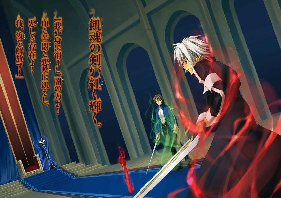
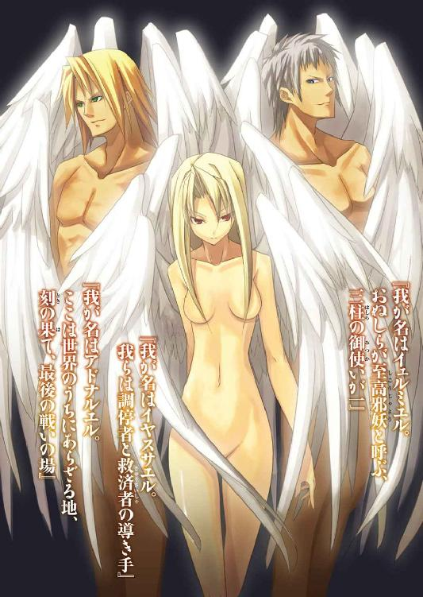
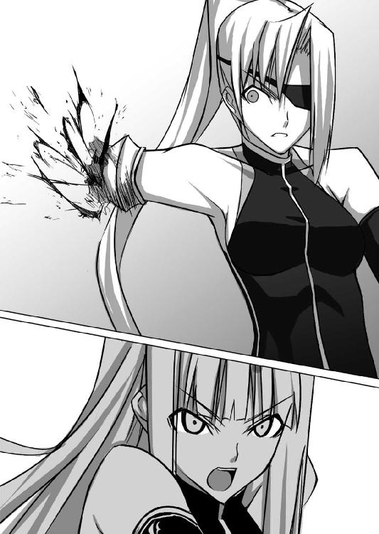

| 9TAILS III ―ナイン・テイルズ 刻の終わりに― (富士見ファンタジア文庫) | |
| 南房 秀久 | |
| (2013) | |


9 TAILS III
─ナイン・テイルズ 刻の終わりに─
南房秀久

富士見ファンタジア文庫
本作品の全部または一部を無断で複製、転載、配信、送信したり、ホームページ上に転載することを禁止します。また、本作品の内容を無断で改変、改ざん等を行うことも禁止します。
本作品購入時にご承諾いただいた規約により、有償・無償にかかわらず本作品を第三者に譲渡することはできません。
本作品を示すサムネイルなどのイメージ画像は、再ダウンロード時に予告なく変更される場合があります。
本作品は縦書きでレイアウトされています。
また、ご覧になるリーディングシステムにより、表示の差が認められることがあります。
口絵・本文イラスト シンゴ

ブンッ！
大剣が唸りを上げ、群がる野盗を弾き飛ばした。
「畜生！ どっから現われやがった⁉」
「怯むな！ 相手は少数だ！」
「な訳あるか！ こっちはもう二十人以上やられてんだ！ 適当なことほざくんじゃねえ！」
「だから何人なんだよ！」
飛び交う野盗たちの罵声。
恐慌を来たした彼らのほとんどが、襲撃者の姿を認める間もなく昏倒させられてゆくのだ。
「一......二......たった三人だと⁉」
砦の塔に登り、震えながら敵の人数を数えようとした野盗が、呆気に取られた表情を顔に貼り付かせる。
「こっちは百五十人いるんだぞ！ あいつら、一体何者だ！」
ヒベルニア王国の聖王都から北に馬で数日の距離にある、メブリ連山。
複雑に入り組んだその谷間にある古い砦跡に、野盗の群れが巣食ったのは一年ほど前のこと。
以来、今日まで彼らは周囲の村々を襲い、略奪と陵辱と殺人を重ね、人々を恐怖に陥れてきた。
この日。
聖女王直属親衛隊、〝九尾の猫〟に属する三人の隊士は黄昏時を待ち、悪逆非道で知られる彼ら野盗団の根城に強襲をかけていた。
「どうした、サキ！ 気合いを入れてかかれ！」
夕陽に赤く染まった砦の、中庭の中央。
鞘に収められたままの大剣を振り、次々と野盗たちを薙ぎ倒している長身の青年が、木箱の上に座って戦いの様子を眺めている少年に向かって怒鳴った。
「いや、ディアン、この連中あんまし弱いんで、調子でなくってさ」
ザシュッ！
山吹色の髪の少年は箱から飛び下り、億劫そうに赤く鈍い輝きを放つ剣を抜くと、自分に向かって斬りかかってきた野盗の脇腹を斬り裂いた。
鮮血が飛び散り、野盗は膝を突いて絶命する。
「......それにあの小煩いオルウェンが、やたら殺すなって釘刺すし」
七十三柱の邪妖を封印した飢魂の剣を背負い、サキは唇を尖らせた。
「小煩いって言うな！ 仮にもな、俺たち九尾の猫が仕える神聖女王だぞ！」
ヒュンッ！
サキに釘を刺したディアンの耳元を、短弓から放たれた矢がかすめる。
「ちっ！」
矢が飛んできた方向を探すディアン。
物陰から矢を放った射手は、彼の喉元を狙って更に第二矢を番える。
と、その時。
ガッ！
「射手を侮ると厄介ですよ。毒矢を使っているかも知れませんから、早めに斃しましょう」
短弓を構える野盗の後頭部に細身の剣の柄を打ち込んで昏倒させたのは、温和な顔つきの眼鏡の青年、ロレルだった。
トロンヘイム時代には会計方を務め、現在はディアンを補佐する副長の地位にあるロレルは、九尾の猫の頭脳とも呼べる存在。
今回、黄昏時に奇襲をかける計画を立てたのも、彼、ロレルである。
夕陽を背景に突撃をかければ、防御側は逆光となり、弓矢で攻め手を防ぐことが難しくなる。
更に、敵のど真ん中に飛び込んでしまえば、暗がりの中での同士討ちを誘うこともできるという理由から、ロレルはこの作戦を提案したのだ。
「......これが、九尾の猫流です」
ロレルは自分の作戦通りに事が運ぶのを見ながら、口元にかすかに笑みを浮かべた。
九尾の猫は、元々はヒベルニアの敵国である、トロンヘイムの王都守備隊第九中隊。
それが今では、ヒベルニア神聖女王オルウェン陛下の信任厚い、直属親衛隊として働いている。
隊長はディアン。
副長はロレル。
サキの他にも、トロンヘイムに来てから入隊した一名を含め、五人の隊士がいるのだ。
「それからですね、ディアン。仮にも女王って言い方もどうかと思いますが？ それにサキくん、君、陛下から注意を受けた割には、随分と殺ってますよ」
ロレルは左右から同時に斬り込んでくる野盗の剣を器用にかわしながら、ディアンとサキに注意をする。
「だ～か～ら～、普段からやり慣れてないことをするのは難しいんだって」
サキは頰を膨らまし、正面の野盗の顎を蹴り上げた。
「ぐはっ！」
野盗は白目を剝き、仰け反って倒れる。
「そう、その調子です」
と、うなずくロレル。
「......ありがと」
褒められたサキは不満顔だ。
「サキ、お前、実はイーファのことが気になるんじゃないか？ 今回は別任務だからな！」
ディアンはのびた野盗を踏みつけながら、昔からの相棒を冷やかす。
既に太陽は山の端の向こうに消え、松明の灯りだけが砦の中庭をぼんやりと照らしている。
サキたち三人がこうして軽口を叩き合っているのも、お互いの位置を確認し、同士討ちを避けるためだ。
「まあね」
サキは正直に認め、肩をすくめた。
気配を感じ、振り返り様に奔らせた飢魂の剣が、背後から不用意に近づいてきた野盗の頭蓋を砕く。
イーファというのは、元トロンヘイム王家直属の闇隊士。
今は九尾の猫の一員として働く少女である。
「......あ～あ～、また殺っちゃった」
脳漿を飛び散らせる野盗を見下ろし、サキは舌打ちした。
「イーファさんのことは心配要らないですよ。ヴィスナがついてますし」
励ますように告げるロレル。
「だから心配なんじゃないか。ヴィスナが何か下品なこと教えてるんじゃないかって」
「......それは......あるかもな」
ディアンが苦笑し、野盗の攻撃を大剣で払いながら左手で無精髭を搔く。
「ああもう、面倒臭い！ ディアン、ロレル、下がって！」
サキは飢魂の剣を水平に構えると、内なる声に呼びかけた。
「出番だぞ！ たっぷり血を吸わせてやる！」
『......恩着せがましいことよの』
サキの口から、本人のものとは別の、妖艶とも言える女性の声が発せられる。
『雑魚ども相手の戦いにまでわらわを引っ張り出すとは、随分とぬしも偉くなったものだな』
「退屈してたろ？ ちょっと力貸しなって」
『......ふ、まあいい。退屈しておったことは確かよ』
声が答えると、サキは飢魂の剣を握る手に意識を集中した。
「......我が身に宿りし、闇の力よ！ 血と苦悶と悲嘆に飢えし、悪しき存在よ！ 我......汝を解放す！」
瞳が炎の色を帯び、サキの身体は輝く緋色の疾風の衣に包まれる。
「できるだけ殺すなよ！」
ディアンはそう念押ししながら、サキと十分な距離を取った。
「陛下に叱られますからね！」
ロレルも同様に急いでサキから離れる。
「いくぞ！」
サキは殺到してくる野盗に対し、腰をやや落とした姿勢で剣の切っ先を低い位置に置いた。
「竜牙旋っ！」
ギュンッ！
剣先が描く赤い弧が正面から襲い掛かる野盗の胴を両断し、更にその後ろにいた男を風圧で弾き飛ばした。
剣の重みを利用して身体を回転させながら、サキは土の上を滑るように移動し、野盗たちを斬り倒してゆく。
「に、逃げろ！」
恐慌を来たした野盗たちは、サキに背を向け、我先にと砦の出口に殺到した。
しかし。
「おっと、逃がしはしないぜ」
野盗たちの前に立ちはだかったのは、もちろん、ディアンとロレルである。
「女性や子供まで、楽しみながら斬り刻んで殺してきたあなたたちの遣り口。それを見ると、とても改心しそうには思えませんが、一応、選ばせてあげましょう。大人しく捕まるか、ここで命を落とすか......？」
ロレルはすっと剣先を野盗たちに向けた。
「くそったれえええええっ！」
顔に刺青をした体格のいい野盗が、斧を振り上げてディアンに躍りかかった。
「馬鹿が！」
ビュッ！
大剣が一閃。
野盗は鞘ごとの一撃を眉間に食らって崩れ落ちる。
「ど、同時にかかれ！」
ディアンと比べると一見、優男のロレルを囲もうとする野盗たち。
「やれやれ」
ロレルはまるで背中に目があるかのように、背後に回った男の手首を貫く。
「次は首、いきますよ」
微笑みながらの警告に、野盗たちは後退る。
そして......。
「さてと、これで給料分は働いたよね？」
あらかた野盗を叩き伏せたサキは、ロレルとディアンのところにやって来ると、返り血で汚れた頰をこぶしで拭った。
既に緋の風の衣は消え、瞳も普段の菫色に戻っている。
「......で、どうするのさ？」
「どうするって？」
砦の中を回って隠れている者がいないかを調べて戻ってきたディアンが、尋ねるように片眉を上げる。
「この連中、どうやって聖王都までしょっ引いて行こうかってこと」
サキは血振るいをした飢魂の剣を鞘に収めながら、あたりを見渡した。
「それは確かに......考えていませんでしたねえ」
ロレルはちょっと困ったように頭を振り、眼鏡をツッと指で押し上げる。
夜の帳の下りた三人の周囲には、数十の遺体の他に、負傷して呻く百名近い野盗たちが地に伏していた。
＊ ＊ ＊
数日後。
早朝のヒベルニア聖王都。
「だからさ、報告だって言ってるだろ」
九尾の猫の女性隊士、赤毛のヴィスナは、自分たちの前に頑固に立ち塞がる聖女王付きの侍女に向かって、何度目かの説明を繰り返していた。
「ですから、報告ならば私が承って、陛下にお伝えします」
こちらも、同じ台詞を繰り返す侍女。
「直接報告するようにって、陛下に念を押されたんだってば」
ヴィスナは、ハアッとため息をつく。
半月ほど前、九尾の猫のヴィスナとイーファは、神聖女王オルウェンの命で王国西部の都市、グウェントへ視察に赴いた。
今日はその報告で、城を訪れ、オルウェンに面会を求めたのだが、衛兵たちは通してくれたものの、あと扉一枚で謁見の間、というところで、小生意気な侍女に足止めを食っているのだ。
「そんなお話は陛下から伺っておりません」
十二、三歳ぐらいだろうか。
融通の利きそうにない幼い侍女は、つんと鼻を上に向けて、ヴィスナたちの前から退こうとしない。
「だったら、ええっと、陛下に伝えてくれないか？ ヴィスナとイーファがき、来ていて、直接お目......お目......何だっけ？」
口を挟みかけた銀色の髪の少女が、言葉の途中でヴィスナを見る。
「お目通り」
まだヒベルニア語が片言のイーファに、ヴィスナは教えた。
「そうそれ。お目通りを願ってるって」
「陛下はこれから禊のお時間です。そのようなことでお気を煩わせることはできません」
「......うう」
イーファも困り果て、小さな薄紅色の唇をちょっと尖らせる。
と、そこに。
カチャリ。
謁見の間の扉が内側から開いて、鳶色の髪の少女がひょいと顔を出した。
「何しているんですか？」
「......あ、オルウェン」
イーファは少女の顔を見ると、声をかける。
「おはよ」
「はい、お早うございます」
笑みを返したのは、ヒベルニア神聖王国の女王、オルウェン二世である。
「陛下！」
慌てる侍女。
「勝手をされては困ります！」
「だって、扉の外で面白そうにワイワイやっているんですもの。気になるでしょ？」
「オルウェン、グウェント視察の報告に来たよ」
ヴィスナが告げた。
「......伺いましょう」
オルウェンは真顔になってうなずく。
しかし。
「いけません！」
侍女は主張した。
「これから禊のお時間ですよ！ 余計なことに時間を取られると、この後の予定に差し支えます！」
確かに毎朝の禊は、神聖女王にとって身体を清める大切な儀式である。
「悪かったね、余計なことでさ」
仏頂面になるヴィスナ。
「そうかあ......困ったなあ」
オルウェンは唇に指を当てて考え込んでいたが、少しして、パッと表情を明るくした。
「そうだ！ じゃあ、みんなでお風呂に入りましょう！ お話はその中で聞くということで！」
「......あのですね、お風呂ではなくて、禊なのですが」
訂正する侍女。
「結局は同じことでしょう？ イーファ、ヴィスナ、いらっしゃい」
オルウェンは二人を手招きする。
「い、い、い、いけません！ 神聖女王ともあられるお方が、民に肌を見せるなど！」
それでもイーファたちを通そうとしない侍女。
「......もう、仕方ないなあ」
ヴィスナは侍女を羽交い締めにした。
「な、何をなさるんです！」
「こういう分からず屋はね、共犯にしちまうのが一番！ オルウェン、イーファ、こいつも風呂に入れちゃおう！」
「それ、いい考え」
イーファはジタバタと暴れる侍女の足をつかんだ。
「う～、どうして私まで」
しばらくして。
肩までお湯に浸かった侍女の少女は、オルウェンたちに背を向けて小さくなっていた。
「きっと、太后陛下に叱られます」
「太后様は優しい方よ。叱ったりしません」
オルウェンは香草の入った薄紫の湯に身体を委ねると、気持ち好さそうに四肢を弛緩させる。
太后というのは、先代の神聖女王。
歴代の女王は卜占と星々の運行によって選ばれるので、オルウェンと太后の間に直接の血の繫がりはない。
「けどさあ、風呂っていうのはいい習慣だねえ～。トロンヘイムじゃ水浴びはしたけど、お湯に入るって発想はなかったもん」
ヴィスナもお湯に身体を浮かせ、調子の外れた鼻歌を唄う。
「......宿舎にも欲しいな、お風呂」
イーファはお湯を掬い上げ、それが指の間から零れ落ちるのを見つめながら呟く。
「駄目駄目」
ヴィスナはチッチと指を振った。
「トリストが絶対、覗きに来るって」
「そうかな？」
イーファはそう言うと、オルウェンの豊かな胸に目を遣ってため息をつく。
「......羨ましい」
「そうですか？ 普通、だと思うんですけど」
ちょっと頰を赤く染めるオルウェン。
「いや～、イーファの場合さ、普通よりかなり小振りだからねえ」
ニヤニヤしながら、ヴィスナは見比べる。
「よくそれでサキが満足してるよ」
「わ、私とサキはそんな関係じゃない！」
イーファはザバッと立ち上がった。
「へ？」
怪訝な表情をするヴィスナ。
「あんたとサキ、宿舎で同室だよね？」
「うん」
「一応、付き合ってるんだよね？」
「う、うん」
「それで、何にもないの？」
「うん」
「な～んにも？ 全然？ 全く？」
「......うん」
「ま、まさか⁉ あたしが想像していることよりも、もっとイケナイ、変態っぽい病気な関係を結んじゃったりしてたり⁉」
「な、何を言い出す‼」
「......ねえ、変態っぽい関係って？」
オルウェンがヴィスナの方に身を乗り出す。
「いけません、陛下！ はしたないです！」
止めに入る侍女も、その瞳には好奇心の色が宿っている。
「そもそも、サキと同室にさせられたのは、宿舎の部屋数が少ないのに、ヴィスナが私と同室になるのを嫌がったからだろう！」
イーファは声を荒らげた。
「あたしとしては、あんたとサキが二人っきりの時間を作れるように、気ぃ利かせた心算だったんだけどなあ」
ヴィスナは頭を搔く。
「しっかし、やっぱ変だよ、あんたたち」
「そんなこと言うなら、ヴィスナの方はどうなんだ？」
逆襲に出るイーファ。
「ディアン、ヨルカと別れたんだから、好きだって告白すればいいのに」
「う～」
ヴィスナはブクブクと泡を立てて、鼻までお湯に潜る。
「......あ、落ち込みましたね」
オルウェンがクスリと笑う。
「そりゃあさ、ディアンとは付き合いたいけど......。あたしだって、好きな男の方から告白して欲しいんだもん」
ヴィスナはいじけた様子で呟く。
「ところで、お二方」
のぼせた所為なのか、恥ずかしいためなのか、顔を真っ赤にした侍女が咳払いをして言った。
「あなた方はそもそも何をしにいらっしゃったか、お忘れなのでは？」
「おおっとそうだった！」
これ幸いと話題を切り替えるヴィスナ。
「直属親衛隊士ヴィスナ・シェヴオス、及びイーファ・セイレネス、グウェント復興の現状について陛下にご報告いたします」
立ち上がって大袈裟に敬礼したヴィスナは、再びお湯に胸元まで浸かってからグウェントの街の様子について話し始めた。
＊ ＊ ＊
イーファとヴィスナが、禊の間で女王と共にお湯を浴びていたのとほぼ同じ頃。
城に至る大通りに面した建物──九尾の猫の詰め所兼宿舎──の二階の一室で、ディアンはロレルがニンマリしながら帳簿をつけているのを眺めていた。
「今月も黒字なんですよ」
羽根ペンを走らせながら、ロレルは嬉しそうに告げる。
「トロンヘイム時代には、考えられないことですねえ」
「お前、前よりもさらに銭勘定にのめり込んでないか？」
椅子に逆向きに座り、背もたれに腕を載せながら、ディアンは呆れたように言う。
「そうですかねえ？」
「......そんなに隊の財政状態、酷かったのか？」
「ええ」
ロレルはペンを止め、声をひそめた。
「ここだけの話ですが、あちこちから借りて踏み倒した総額は、五万五千八百七十四ダカットになります。実際、訴訟の準備を進めていた高利貸しもいるくらいで」
「......トロンヘイムには帰れんな」
「付け加えると」
ロレルは、別の帳簿を引き出しから取り出す。
「私が個人的に立て替えたあなたたちの飲み代が、総計で......」
「おっと！ そういやそろそろ見回り交代の時間だ。サキの奴はどこに行ったかな？」
ディアンは慌てて立ち上がると、逃げるようにして詰め所を後にした。
＊ ＊ ＊
その頃。
「陛下直属の親衛隊士とはいえ、街の見回りは、市井の民の暮らし振りを知るために必要な任務」
アギとトリストの二人の隊士を引き連れ、中央広場から大聖堂前に至る通りを歩きながら、九尾の猫では一番新参者のドーナラッハは滔々と語り続けていた。
「それを嫌がらずに熱心に取り組む貴殿ら二人の態度、まことに殊勝でよろしい」
ヒベルニアの由緒正しい家柄の出で、元は女王の守護聖騎士のひとりであるドーナラッハ少年は、九尾の猫では一番年下の十二歳。
身長も、小柄なサキよりさらに頭ひとつ低い。
その小さな少年騎士が、古参兵と言っていいトリストやアギに目上のような口調で語る様は、何やら滑稽でさえあり、周囲の人々の失笑を買っていた。
「市井の民の暮らし振り......ねえ？ 元々、庶民の暮らししか知らねえからな俺は」
元盗賊で、投げナイフの使い手であるアギは肩をすくめると、通りに店を出す商人のひとりに声をかける。
「よお、問題ねえか？」
「はい、お陰さんで」
にこやかに頭を下げる商人。
「......ま、何かあれば俺に言えよ」
アギは商人の肩を叩くと、こっそりと何かを握らされて歩き出す。
「うん！ 親衛隊の任に就いてほんの数か月で街の商人たちの信頼を得るとは、サキなどとは人間の出来が違う！」
ドーナラッハは賞賛した。
「ま、顔馴染みの商人ができないことには、袖の下も取れねえからねえ」
頭の後ろで腕を組み、ニヤニヤと笑うのはトリスト。
トロンヘイムの名門貴族の放蕩息子で二刀流の名手のトリストは、不思議と出身階級の違うアギと馬が合うのだ。
「......はあ？」
怪訝な顔をトリストに向けるドーナラッハ。
「つまりだ。俺たちみたいな街の見回り役と商人とは、持ちつ持たれつってことさ」
アギは、商人から受け取った銀貨の袋をポンと空中に投げ上げた。
「き、貴様！ 賄賂を取る心算で商人に近づいていたのか！」
ドーナラッハは顔を真っ赤にしてドンと足を踏み鳴らす。
「便宜を図って欲しい商人と、チョイと小遣い稼ぎをしたい下っ端の役人。双方の利害が一致したってことだな」
アギはニヤリと笑った。
「このくらいの役得がなきゃあ、こんな堅苦しい制服なんぞ着てられるかよ」
アギたちが今着ている黒い制服は、トロンヘイムの王都守備隊時代とほぼ同じデザインのもの。
ただ、守備隊の外套が黒鋼女郎蜘蛛の糸で織り上げた、甲冑並みの防御力を誇るものだったのに対し、現在の外套はただの絹製。
防刃の効果は全くない。
「悪い奴でしょ、アギって」
ドーナラッハにウインクするトリスト。
「お前も同じ穴の狢だろが」
アギは肩をすくめる。
「二人とも、そこに直れ！ 親衛隊の名誉のために、その首打ち落としてくれよう！」
剣の柄に手をかける少年騎士。
「......っと、ここは？」
ドーナラッハは二人と話しながら歩いているうちに、自分が普段足を踏み入れたことのない妖しい街区に来ていることに気がついた。
「まあまあ、ちょっと付き合いなって」
「さっきの銀貨で、人生勉強させてやるからよ」
トリストとアギは両側からドーナラッハの腕をガッチリと摑むと、〝夜鳴鶯亭〟という看板のかかった店に入ってゆく。
聖王都であっても、人間が住む場所には必ず、欲望のはけ口となる場所、悪所が存在する。
特にこの〝夜鳴鶯亭〟は、聖王都で最も罪深いと言われる〝見世〟である。
「ま、ま、ま、待てっ！ ここはどう見ても如何わしそうな店ではないか！」
この期に及んでジタバタと逃げようとするドーナラッハ。
「如何わしそうな店なら、やっぱ、調べないといけないんじゃない？」
「これも修行だぜ」
「やめろーっ！ 助けてくれーっ！」
アギとトリストは足搔くドーナラッハを引き摺りながら、妖しい香の漂う〝夜鳴鶯亭〟へと足を踏み入れていった。
＊ ＊ ＊
その夜遅く。
「帰ったよ」
宿舎の自室に戻ったサキは、机に向かっているイーファに声をかけた。
この王都に来て、宿舎を与えられて以来、二人は同居中。
周囲からも恋人同士と思われているサキとイーファだが、このところ別々の任務が多く、擦れ違いの日々が続いている。
「うん」
気のない返事のイーファ。
「って、何してるのさ？」
黒い外套を脱いだサキは、少女の傍にゆく。
「......ちょっと」
イーファは椅子の向きを変えて、サキに背中を見せた。
「ちょっとって？」
さっと何かを隠すイーファの手元を、覗き込もうとするサキ。
「何でもない」
イーファはもう一度、サキに背を向ける。
「ふうん。......ほら！」
サキは一旦、傍を離れる振りをし、不意を突いて少女の手から小さな本を奪い取った。
「あ、やめろ！」
「これって......」
「返せ！ 女王陛下に貰ったんだ！」
イーファは慌てて本を奪い返そうとする。
「ヒベルニア語の......単語集かあ」
サキは取り上げた本をパラパラとめくりながら吹き出した。
「笑うな！」
イーファは単語集を引っ手繰ると、ため息を漏らす。
「......みんなはいい。簡単にヒベルニア語を覚えられて」
ベッドにドスンと座り、拗ねたようにプウッと頰を膨らますイーファ。
「だけど私は語学一般が苦手なんだ。三国の公用語である商用ウートガルト語でさえ、挨拶がやっとなのに......って、言ってるだけで頭が痛くなってきた」
実は語学だけではない。
大抵の習い事がイーファにとっては苦手分野なのだが、そのあたりを突っ込むと喧嘩になるのでサキも指摘はしない。
「あ～、よしよし」
サキはイーファの隣に座り、少女のこめかみのところを優しく揉んでやる。
「......肩も」
「はいはい」
「......今日、陛下とお風呂に入ったんだ」
「それでかあ、君からいい匂いがするのって」
「こ、こら！」
首筋に鼻を近づけるサキの頭を、イーファは押し退ける。
「嫌？」
サキは少女の瞳を覗き込んだ。
「そうじゃないけど......」
イーファは視線を逸らし、頰を紅くする。
「少し......怖い。べ、別にサキのことが怖いんじゃなくて、その、何ていうか、そういうこと自体が......ほら......最初は痛いって言うし......」
「分かるよ」
耳に軽く口づけするサキ。
「だ、だから、気持ちの整理がつくまで、もう少し待って欲しい！」
優しい息を感じたイーファは目をつぶって、顔を更に真っ赤にした。
「......うん」
サキはそっとイーファのベッドから離れ、着替えを始める。
「寝る！」
イーファは毛布を頭から被り、ゴロリと横になった。
「......サキ」
「ん？」
「わ、私はサキと一緒に住めて、とても楽しい。それは......噓じゃないから」
「知ってるよ」
サキは微笑み、そっと蠟燭の灯りを消した。
二日後の昼下がり。
九尾の猫の詰め所を訪れた女王付きの侍女は、オルウェンからの要請を一同に伝えていた。
「陛下直々のお呼び出しですか？」
差し出された香草茶のカップに口をつける澄ました顔の侍女に、ロレルはもう一度確認する。
「ええ。極、内密にとのことで」
侍女はちょっと肩をすくめてみせてから、お茶に蜂蜜を追加した。
「本当はいけないんですよ。女官長様や枢機卿猊下の許可を得ずして、こういうことをするのは。まあ、どうせ太后陛下にお叱りを受けるのは私なんですけど。陛下は私の苦労など、ち～っとも分かってくれないんですから」
「非公式ってことは、制服じゃない方がいいのかな？」
侍女に尋ねるサキ。
「そうは仰っていませんでしたけど」
侍女はヴィスナ手製の焼き菓子をつまみ、ポリポリと齧る。
「ともかく、急いで下さいまし。私、みなさんの準備が終わるまでここで待っておりますから」
＊ ＊ ＊
「よく来ました」
猫たちが謁見の間に入ると、オルウェン女王は玉座から立ち上がって一同を出迎えた。
「直属親衛隊〝九尾の猫〟。隊長ディアン・リュヴィリエ、以下八名、ただ今御前へ」
跪くディアンたち。
「......むう、ディアンさん」
オルウェンはツカツカとディアンに歩み寄ると、彼の顎の無精髭を指で引っ張った。
「お髭、また伸びてきましたね」
眉をひそめ、非難の目を向けるオルウェン。
「叙勲式の時には、きれいに剃っていらしたのに」
「す、済みません！ 以後、気をつけます！」
ディアンは顔を真っ赤にして後退った。
吹き出しそうになるのを堪え、ヴィスナたちは肩を震わせる。
「で、何の用、オルウェン？」
サキは立ち上がって女王に尋ねた。
「任務なら、殺しても構わない連中相手の仕事にしてよ。生きて捕まえようなんていうの性に合わなくてさ」
「へ、陛下を呼び捨てに！ さらに意見を申し上げるなど！」
卒倒しそうになる侍女。
「いいえ。任務ではありませんよ」
オルウェンは苦笑する。
「みなさんに、トロンヘイムからの使者の方をお引き合わせしたいと思って」
「トロンヘイムからの？」
訝しげな表情を浮かべるロレル。
「正確には、ヴァイマーヘン大公領からの、ですけど」
女王がそう言うと、玉座の後方にある女王の寝室に通じる扉から、フードを被った小柄な人影が現われた。
「お久し振りですね、みなさん」
（......あ、分かる言葉だ）
イーファにとっては、ほっとするトロンヘイム語。
フードの人物は、猫の面々の前に立つと、顔を顕わにした。
「リネット！」
目を丸くするディアン。
「......そうか。無事だったのか」
「何よりも真っ先に私の身を案じてくれる。貴方はそういうお方でしたね、ディアン」
リネットは微笑み、うなずいた。
「リネットさん、あれからトロンヘイムの状況は？ ......隊長の、いえ、ヴァイマーヘン大公殿下の処遇はどうなりましたか？」
ロレルが眼鏡の曇りを拭いて掛け直し、努めて冷静に尋ねる。
「私たちを指揮して敵国に侵入し、神聖女王を誘拐する任務だったはずが、逆に女王を護った上に、グウェントの街を強襲したウートガルトを撃退する羽目になった。その責任はトロンヘイム国王の甥であっても、取らされないはずはないでしょう？」
「アランは元からあの任務が自分を陥れるための罠だと気づいていました。ですから、私は貴方たちがグウェントに出発した後、すぐに王都の屋敷を離れ、ヴァイマーヘン領に居を移したのです。アランは、いえ、アラン一世陛下は、貴方たちとあまり友好的とは言えない別れ方をした後、王都には帰還せず、ヴァイマーヘン大公領に入り、そこで自らが正統なトロンヘイムの国王であることを宣言なされました」
「隊長が⁉」
「王様にだって⁉」
顔を見合わせるアギとトリスト。
「......確かに」
ロレルは考え込む。
「アラン隊長は先代の王カモラク五世の嫡男。正統なる王だという主張に問題はありません。しかし......」
「こうした宣言が乱世を招くことは、アラン陛下も重々承知の上のことです」
ロレルの憂慮を汲み取り、リネットはうなずいた。
「では」
ロレルは声を低くする。
「隊長は戦争を起こすお覚悟が？」
「既に国内の貴族の三分の一以上とは、事あらば陛下の下に馳せ参じるとの約定を交わしています」
と、リネット。
「へえ、戦争かあ？ 面白そう......って！」
不謹慎な発言をするサキの脛に、イーファが素知らぬ顔で蹴りを入れた。
「......なあ、あんた」
一同が懐かしがるような視線をリネットに投げかける中で、ひとり、アギだけは警戒を解かぬ目つきで彼女に尋ねる。
「まさか、近況報告の目的だけで、敵国の首都にまで潜り込んで来た訳じゃねえよな？」
「はい」
リネットはかすかにその態度を面白がるような表情を見せた。
「私がここに参りましたのは、神聖女王陛下に、アラン陛下よりの同盟の提案をお伝えするためです」
「同盟ってことは、ヒベルニアとアランの反乱軍が手を結ぶってこと？」
これにはサキも意外といった表情になる。
「......リネット、あんたさ、グウェントでアラン隊長がオルウェン陛下を誘拐しようとしたの、忘れてるんじゃないよね？」
ヴィスナが赤い髪を搔き上げながら頭を振った。
「そんな身勝手な提案、受け入れると思う？」
「そ、そうですよ！ ヴァイマーヘン大公は憎むべきヒベルニアの宿敵！ 手を組むなどということはあり得ません！」
ドーナラッハも勢い込んで否定する。
だが。
「みなさん、反対ですか？ わたしはこの提案に乗ろうと思うのですが？」
オルウェンは困ったというような表情をした。
「へっ？」
絶句するヴィスナ。
「どうして？」
と、イーファ。
他の者も、驚きの表情を隠せない。
「トロンヘイムと我が国の国境争いは、もう八年目に突入しようとしています」
オルウェンは説明した。
「これまで、戦況は我が国優位に展開していましたが、トロンヘイムはその優位を打ち破る抗巫術の紋章を最前線に投入し始めたのです。これ以上戦況が悪化する前にアラン殿がトロンヘイム王になり、停戦条約が結ばれるのなら、それはヒベルニアにとっても好ましいことなのです」
「かなり危険な賭けだと思うけどねえ」
頭の後ろで手を組んだトリストが、とても真剣とは思えない調子で告げる。
「十分承知しています」
オルウェンはそう言うと、リネットの手を取った。
「それに、他ならぬ妹の願いですから」
「妹......って？」
ヴィスナはオルウェンとリネットを交互に指さしながら、ポカンと口を開けた。
「うっそ！ 似てないじゃん！」
「そうですね」
オルウェンはクスリと笑う。
「似てはいませんが、わたしとリネットは同年同日同時刻に同じ親から生まれた双子。間違いはありません」
「聖女王の誕生の日と時間は、先代の星観により預言される為来りです。その預言の時に生まれた赤子の中から、私たちは今の太后であらせられる聖女王様に選ばれ......」
と、リネットは自分の胸に手を当てた。
「私が調停者を見出す巫女に」
「わたしが聖女王になることが決まりました」
オルウェンはリネットと同じ仕草をすると、猫の面々を見渡した。
「どうです？ みなさんが反対なら、わたしは無理にこの話を進めようとは思いませんが？」
「......サキ」
イーファがサキの耳元でささやく。
「オルウェンとリネット、何か隠している気がする。ほら、あれに関すること」
「そうだね」
あれというのは、聖巫女の預言のこと。
刻の終わりに調停者と破壊者が戦い、世界の命運を決めるという、ヒベルニアの伝承である。
サキの内なる声が告げたところでは、アランは世界を存続に導く調停者。
そして、サキは世界に破滅をもたらす破壊者らしい。
「もしかするとリネットたち、預言を成就させるために......」
と、イーファ。
「かも知れない。けど、戦争が預言の一部なら......」
サキはイーファにささやき返す。
「ここで反対することは意味がないね。いつかは起こることだから。むしろ、僕たちが自分たちの意思で参加できるだけ、今の方がいい」
「でも......」
「大公と俺の個人的な信念の違いについては、敢えてここで口にする心算はない。俺は直属親衛隊の隊長として、オルウェン陛下の意思とヒベルニアの国益に従うが、それをみんなにも強制しようとは思わない」
現在の隊長であるディアンが、一同を見渡した。
「どうだ、みんな？」
「陛下のお考えのままに」
と、オルウェンに一礼するロレル。
「正直、納得いかないけど......ディアンがいいなら、いい」
ヴィスナは、少女のような拗ねた口調で言う。
「アラン隊長にこてんぱんにやられたディアンとサキが構わねえって言うなら、俺も賛成だ」
肩をすくめるアギは、もともと死刑囚だったところをアランに救われた身。
アランへの忠誠心は人一倍強い。
「ここで反対したら、仲間外れになりそうだから賛成～」
とは、あくまでも適当なトリストである。
「駄目だ、駄目だ！ 私はあの大公との同盟など断じて......ぐはっ！」
「あ～、うるさい」
ガゴッ！
異を唱えようとするドーナラッハの後頭部に蹴りを入れて黙らせると、サキはディアンに向かって告げた。
「僕としては、戦争に参加できるなら反対する理由はないよ。このところ、好き勝手に人を斬らせて貰えないから欲求不満でさ」
「私も......賛成でいい」
少し考えてから、イーファもうなずく。
「概ね、意見は一致しました」
床に突っ伏したドーナラッハのことをほんの少し気遣いながら、ディアンは女王に告げる。
「早速、会議を開き、同盟を正式決定しましょう」
オルウェンはホッとしたような表情を見せた。
「会議はもちろん、あなたたち全員に参加してもらいます。少しの間、ここで待っていて下さい」
＊ ＊ ＊
アランとの同盟を承認するための御前会議は、謁見の間ではなく、女王の私室で開かれた。
私室とはいっても、数十名が一度に寝泊りできるくらいの広さはある。
百本近い蠟燭が立てられた水晶製のシャンデリアが、象嵌の施された大きな円卓を照らし出す。
円卓に着いているのは、オルウェン神聖女王、アランの名代としてリネット、先代の神聖女王である太后、女王を補佐する立場にある枢機卿、大法官を含む各部署の大臣、王城の典礼を司る式部卿、トロンヘイムでは補給武官に相当する主馬頭と、傭兵隊長数名。
もちろん、九尾の猫の面々も列席している。
「如何でしょう？ この同盟について、方々のご意見を伺いたいのですが？」
オルウェンは同盟についてリネットに説明させた後、円卓を見渡し、堂々とした口調で言った。
「願ってもないお話ですな」
真っ先に口を開いたのは、温厚な目つきの初老の枢機卿だった。
「平和を望む民として、我々は彼の即位に助力を惜しんではならないのでは？」
「問題は、どれほどの兵力を注ぎ込むか、でしょう」
と、唸ったのは大法官。
「西の国境におけるウートガルトの脅威が残る今、割ける兵士の数は決して多くはありませぬぞ」
「王家の兵で不足する分は、女王陛下が詔をお発しになり、遠征軍への各諸侯の参加を求めては？」
式部卿が提案する。
「ですが」
主馬頭が苦々しげな顔で唸った。
「遠征参加の見返りとして、諸侯たちはいつもの要求を持ち出してくるでしょう」
「いつもの......要求？」
イーファが説明を求めるようにオルウェンを見る。
「領内の農民の賦役の拒否や反乱蜂起が、神の秩序に背くものだと宣言する勅令を出すこと。諸侯たちの要求はそれです」
オルウェンは言った。
「勅令が出れば、反抗する農民の苛烈な取締りを、領主である諸侯は正当化することができます。諸侯たちはその気になれば、幾らでも領民から搾り取ることが可能になるのです」
「戦争に便乗しようって寸法かよ」
吐き捨てるアギ。
「で、出すの、その勅令を？」
ヴィスナが主馬頭に尋ねる。
「条件付きながら、出さざるを得ないでしょうな。荘園を持つ教会も、勅令を支持するでしょう」
主馬頭はため息をついた。
「問題はそれだけではございませんぞ」
大法官はさらに指摘する。
「神聖王国が戦場でトロンヘイムに対し優位に立っていたのは、巫術の存在ゆえ。しかし、抗巫術の紋章が編み出され、最前線に投入されて以来、国境付近の部隊には大きな被害が出ております」
「では、尚更」
ディアンが女王に問いかけた。
「このままズルズルと国力を疲弊させるよりは、ヴァイマーヘン大公と結んで一気に攻勢をかけるべきでは？」
「......遠征軍の編制にかかる時間は？」
オルウェンは主馬頭に確認を取る。
「兵糧の確保、攻城兵器を製作する技術者の徴用。少なくとも、三か月は......」
語尾を曖昧にする主馬頭。
「それを一か月に短縮して下さい。国境の山脈地帯が雪に覆われ、通行が困難になる前に大公領に入らなくては」
オルウェンは次に太后を振り返った。
「太后様、わたしが聖王都を留守にする間のことをどうぞよしなに」
「ええ。こちらは枢機卿殿と相談しながらことを進めるので、心配は要りませんよ」
齢八十に近い太后は微笑む。
「......ねえ、オルウェン、まさか君？」
サキは女王の顔を覗き込む。
「はい。遠征軍にはわたしも同行します」
オルウェンはうなずいた。
「無茶だ！」
椅子を蹴って立ち上がるディアン。
「ディアン殿、これは既に決定していることなのじゃよ」
枢機卿が軽く手を挙げて、彼を制する。
「......それも、貴兄が想像もできぬほどの昔からのう」
「しかし！」
「くれぐれも、陛下をお頼みする」
「......枢機卿」
深々と頭を下げられ、ディアンは何も言えなくなった。
「では早速、遠征の準備にかかりましょう」
オルウェンの言葉を合図に一同は席を立って一礼し、それぞれの任務を果たすべく円卓を離れた。
＊ ＊ ＊
「今、いいかな？」
と、サキが声をかけてきたのは、イーファが詰め所に一旦帰り、自室で着替えをしようとした時のことだった。
「何？」
下着姿のまま着替えの手を止め、ベッドに腰掛けるイーファ。
「君は遠征軍には加わらず、聖王都に残ってくれないか？」
いつもと違って真剣な表情のサキは、イーファの隣に座る。
「......え？」
「戦場には出ないで欲しいんだ」
「じょ、冗談を言うな！」
イーファは立ち上がった。
「私だってもう九尾の猫の一員だぞ！」
「ディアンには僕から頼む」
「嫌だ！ 何でそんなこと言うんだ⁉ 私の気持ち、分かっているくせに！」
「......イーファ」
サキは少女の髪に手を伸ばす。
「知ってるんだよ、君の再生能力が落ちてきてること」
「！」
イーファは、どのような傷でもたちどころに回復する〝不死〟の異能を持つ。
だが、不死の能力を使い続けることは、極端に異能者の肉体に負担をかける。
その負担が限界に達すると、イーファは人としての形を保っていられなくなり、やがて永遠に生き続ける不定形の醜い化け物に変貌するのだ。
「分かってる！」
イーファはサキの手を振り払った。
「この姿でいられるのももう長くない！ だから！」
翠の瞳が涙に揺れる。
「だから一緒にいたいんだ！ 君を護るためだけに、この能力を使いたいんだ！」
『......その娘の好きなようにさせてやれ、サキ』
内なる声が、サキに話しかけた。
「イーファが僕に関わるの、嫌がってたんじゃないのか、お前は？」
かつて、サキの身体を使ってイーファを傷つけようとした内なる声に対し、サキの言葉は皮肉な調子を帯びる。
『おぬしの乗馬の腕は、戦場では通用せぬ』
内なる声は言い放った。
『無様に落馬して、首の骨を折るような情けない死に方をしたくないのなら、その娘の後ろに乗せてもらえ』
「嫌だよ！ 格好悪い！」
「そんなに......私といるのが嫌なのか？」
声を震わせるイーファ。
「いや、そうじゃなくて......」
『困れ困れ。たまにはいい薬よ』
「あ～もう！ 分かったよ！」
とうとうサキは降参した。
「その代わり、極力、僕の傍から離れないこと。君が僕を護るんじゃない。僕が君を護るんだ」
「......うん」
イーファは優しくサキの頭を抱き締める。
『......小娘、そこまでしていいとは言っておらぬぞ』
少しばかり不服げな内なる声。
「お前は少し黙ってろ」
サキは目を閉じると、とくんとくんと高鳴っているイーファの鼓動に耳を澄ませた。
軍議から一か月と十日の後。
聖王都を発ったオルウェン率いる遠征軍は、一旦西進し、交易に使われる街道から外れた山越えの隘路を利用して、直接ヴァイマーヘン大公領を目指していた。
山間部では既に木々の葉にうっすらと雪が載り、五千の兵士の足は霜を踏みしめてシャリシャリと音を立てる。
「待ち伏せの様子はありません」
先行していたイーファが戻ってきて、馬上の女王に報告した。
「ご苦労でした」
と、労うオルウェンの後方で、地図を広げたロレルとディアンが何やら相談している。
「ようやく国境だという時点で、これだけ義勇兵が増えてしまうとは思ってもみませんでしたよ。お陰で兵糧の方が心許なくなってきました」
ヴァイマーヘン領までの残りの距離と、それまでに必要な兵糧を計算しながらロレルは頭を抱える。
「仕方ないだろ、度重なるトロンヘイムの侵攻で国境近辺の村々は土地が荒れ果て、喰っていけない連中で溢れているんだ」
「だからといって、それを全部遠征軍に組み入れるのは......我々は慈善事業をしている訳じゃないんですよ」
「ま、ヴァイマーヘン領に入りさえすれば、何とかなるさ。そうだろ、リネット？」
ディアンは後ろのリネットを見る。
「ええ。昨年と比べ、領地の今年の収穫は二割近く増えていますから、みなさんを飢えさせる心配はないはずです」
リネットはうなずいた。
「けどさ、義勇兵って言ったって新しく入ってきた奴ら、ろくに武器さえ持ってないんだよね？ あの連中に持たす武器ってあるの？」
機嫌の悪そうな声は、さらに後方をゆくサキ。
不機嫌の原因は、今、跨っているロバである。
サキが乗っても振り落とさない生き物は、このロバぐらいなのだ。
「......ったく。これじゃ歩いた方がマシだよ」
「武器の方の調達も進んでいるはずですが......そちらの方は、街に着いてみないことには正確なことは分かりません」
リネットは、サキの愚痴を聞き流して答える。
「サキ、一緒にこっちに乗ったら？」
イーファが白馬を傍に寄せてきて声をかけた。
「嫌だって。格好悪い」
子供のようにプイと顔を逸らすサキ。
「意地っ張り」
イーファはベエッと舌を出してみせてから、ロバの歩調に合わせて馬を進め始めた。
＊ ＊ ＊
その夜。
谷間の野営地で、焚き火の前に座るリネットのところに、靴先についた雪を叩き落としながらサキがやってきた。
兵士たちはみな、天幕に籠もり、見張りの者を除いてはあたりに人の動く気配はない。
只、どこか遠くの方から、北の山脈地帯の方言で唄われる古い恋歌が聞こえてくる。
「何か？」
炎を見つめたまま、リネットは尋ねた。
「君に好かれていないのは、知ってる」
サキはリネットの隣に座り、薪の爆ぜるパチパチという音に耳を傾ける。
「......トロンヘイムにいた時からそうだったよね？ アランの屋敷に僕が報告に行った時も、君は決して僕と目を合わせようとしなかった」
「そんなことはありません」
と、言いながらも、リネットはサキの方を見ようとはしない。
「それで、何用です？ 真夜中に私などと二人きりで過ごしていると、イーファさんが妬きますよ」
「まさか？」
サキは新しい薪を炎の中に放り込んだ。
「......破壊者である僕と、ヒベルニアの巫女の君。共通の話題って言えば、預言のことしかないんじゃない？」
「......ですね」
リネットは認める。
「この戦争、預言の一部なんだろ？ 君は預言を成就させるために、ヒベルニアを戦争に巻き込もうとしているんだ。そのことはオルウェンも、あと、太后や枢機卿も知ってる。でなきゃ、国の精神的支柱である聖女王が、遠征になんか参加できる訳がない」
「......私に、その質問に答える義務が？」
「ないね。けど、僕は破壊者だ。君たちの目論見なんか、簡単に挫くことができるよ」
サキは肩をすくめると、リネットのあごを指で持ち上げて顔を近づけた。
「例えば、君をここで殺したり？」
「私の命など、預言には何の影響も与えることはできませんよ」
と、睨み返してから、リネットはサキの意図にはっと気がつく。
「やっぱり、預言か？」
サキは笑って、リネットのあごから指を離す。
「預言の成就のためには、君は破壊者である僕を利用することさえも厭わない」
「......引っ掛けましたね」
咎めるような視線を向けるリネット。
「でも、正解でしょ？」
「......ええ」
リネットは認めざるを得ない。
「預言には、貴方と戦うのは王たる調停者、とあります。ですが今のところ、アランは大公に過ぎません。アランがハディングを倒して王になり、初めて貴方との対決の時、刻の果ては訪れるのです」
「ハディングを倒すのに、僕の力は必要？」
「はい」
ほんの少し、視線を逸らすリネット。
その様子から、サキはハディングと自分の戦いも、預言の一部であることを悟る。
『あのイーファとかいう娼婦の小娘が人間でいられる時間もそう長くはあるまい』
サキの口を借りずに、内なる声が心の中に語りかけてきた。
『預言の成就を早めるためにも、おぬしはこの戦いに参加せざるを得ぬ』
（お前は黙ってろ）
『やれやれ、つれない事よ』
気を悪くした振りをする内なる声。
「貴方は......みなさんに話していないのですか、自分が破壊者であることを？」
ふと、リネットが尋ねた。
「イーファは知ってる。あと、当然、オルウェンもね。けど、他のみんなまで戸惑わせることないだろ？」
「正しい判断です。尤も、大方のトロンヘイム人やウートガルト人にとっては、破壊者は他国の伝承に登場するただの迷信に過ぎないのかも知れませんが」
だが、ヒベルニアの国民にとっては、破壊者の名は絶対的な悪の象徴。
預言のことを深く理解していない一般市民ほど、破壊者に対し恐怖と嫌悪の念を抱いている。
「実のところは」
サキは自嘲する。
「自信がないんだろうね。僕が破壊者だと知ったら、みんなが僕をどんな目で見るか」
「その孤独さ故に、破壊者は破壊者でいられるのでしょう」
リネットは言った。
「かも知れない。この世でたったひとりとでも誰かとの結びつきを感じられるんなら、それだけで世界を滅ぼそうとは絶対に考えないだろうと思うよ」
「貴方とイーファは？ イーファがいながら、何故、貴方は簡単に自分が破壊者であることを受け入れられるのです？ 何故、躊躇いなく世界を滅ぼす道を選べるのです？」
「躊躇いがない訳じゃないよ」
サキは立ち上がり、星空を見上げて微笑む。
「......だけど、僕はイーファの苦しみを終わらせたいんだ」
「イーファさんの......苦しみ？」
「聞いたこと、あるだろ？ イーファはどんな傷でもすぐに回復する不死の力を持っている。けど、その代償として、遠くない未来に人の姿を失って化け物になり、永遠にその姿のまま生き続けることになるんだ。そんな終わりのない苦しみから、あの子の魂を救うには」
「世界そのものを......無に帰すしかない、と？」
リネットは息を吞む。
「イーファはね、僕の汚れきった生涯で初めて出逢った、穢れのない、無垢な輝きなんだ。けど、僕が彼女にしてやれることは、世界を滅ぼすことしかない」
サキは右手をリネットに広げてみせた。
「この、血で汚れた手ではね」
「......もう、やめませんか？」
リネットは膝に手を置いたまま身体の向きを変え、サキに背を向ける。
「私は調停者と共に世界の存続を願う者。貴方は世界に滅びをもたらそうとする者。これ以上の会話は無意味でしょう？」
「そうだね。僕がどんな人間なのか知らなければ、僕とアランが戦う時に、迷うことなくアランの勝利を願うことができる」
サキはリネットの手首を摑むと、耳元にささやく。
「だけど、君は優し過ぎるから、僕のことを知ってしまえば、たとえアランの敵になると分かっていても、僕を憎むことができなくなる。君はそれを恐れているんだ」
「優しいからではなく、意志が弱いからです！」
リネットは喘ぎ、激しく首を横に振る。
「......君を困らせる心算はないよ。意地悪だった、ごめん」
サキは手を離した。
「いえ」
リネットは取り乱したことを恥じるかのように俯く。
「あのさ」
サキはもう一本、薪を炎にくべる。
「僕がもし勝ったら、世界はどんな風に終わるんだい？」
「恐らくは......一瞬」
リネットは答えた。
「誰も、何が起こったのかを気づく間もなく、無に帰します。アランの目にした幻視では、太陽も月も星々も、大地も海も、人も動物たちも木々も何もかもが消え失せ、冷たい漆黒の空間に唯一の存在として残るのは創造主のみです」
「......そうか」
サキは思い出していた。
内なる声が見せた、調停者アランの勝利がもたらす世界の未来の姿を。
永遠に黄昏が続く、赤い荒野。
それを埋め尽くす狂気の形相の人、人、人......。
鼠一匹、草木一本見られぬその大地の上で、人々は泥水を啜り、親兄弟お互いに殺し合い、喰らい合いながら無限に増え続けるのだ。
「もし、僕がアランと戦うことを拒んだら？」
「別の破壊者が選ばれるでしょう。もし、アランの方で戦いを拒めば、世界は破壊者が勝利した場合と同じ結末を迎えます」
「......やっぱり、抜け道はなし、か」
サキは背伸びした。
「だったら、僕はイーファのために戦う。そう考えないと、心が折れちゃいそうだし」
「いつもヘラヘラしている割に、弱音みたいなものも吐くんですね」
意外そうな顔になるリネット。
「......あ、ごめんなさい」
「ディアンたちには、こんなこと話したことないんだよ」
サキは苦笑する。
「絶対、馬鹿にするからね、あいつら」
「......不思議です。今の貴方の印象、初めて会った時とは随分違います」
リネットはサキの顔を真っ直ぐに見た。
「貴方は他人や周りのことに興味を持つ人には見えませんでした。身近な人間が死んでも平然としているどころか笑っていられる。まさに破壊者そのものに思えました」
「違う、か。......前の僕と変わったとすれば、イーファのお陰かな？」
サキは自分の胸を指さす。
「僕の中のこいつは、そう言うと嫌がるけどね」
『わらわだけを悪者にするか？ ふん』
内なる声は鼻を鳴らしたが、すぐに黙り込む。
どうやら、巫女と会話する心算はないらしい。
「貴方は愛する女性のために、戦うしかないから戦うだけ。それなのに、私はいつも辛く当たっていましたね」
ふうっと小さく息をつくリネット。
「......もっと前から、お話ししておくべきだったのかも知れません。少し、後悔しています」
「今からだって、友人にはなれるさ」
サキは立ち上がった。
「けど、君を安心させるようなことは言わないよ。僕は全力でアランと戦う」
「アランは負けません。私の愛した人は決して」
リネットは初めて、サキに微笑を見せる。
「さ、立って」
サキはリネットに手を差し出した。
「天幕まで送るよ。明日も早いし、女の子がこんな寒空にひとりでいるもんじゃない」
＊ ＊ ＊
同じ頃。
オルウェンの天幕をイーファが訪ねていた。
「陛下、いいかな？」
見張りの許可を得て天幕に入ると、既にオルウェンは薄衣だけを纏った姿で敷布の上に横たわっていた。
そのすぐ横には、仔猫のように身体を丸めて寝息を立てる侍女の姿がある。
「ちょうどよかったわ。この子は寝ちゃうし、リネットは戻ってこないし、退屈してたのよ。一緒にお茶でも飲まない？」
オルウェンはイーファを見ると破顔し、天幕の中心で焚かれている火にポットをかけた。
やはり女王の天幕は一般兵のものと比べると広く、簡素ながらも住み心地をよくする調度品も揃っている。
「......あ、ありがと」
イーファは焚き火の前に、ペタリと座り込んだ。
一度沸かしてあったポットの湯は、すぐにコポコポと静かな音を立て始める。
茶葉を別のポットに入れ、そこにお湯を注ぐオルウェン。
小さな折り畳みテーブルの上の壺から焼き菓子を取り出して皿に並べ、茶葉が十分に開いたところでカップに琥珀色の液体を入れる。
「南方のお茶よ。香料を使っているみたい」
オルウェンは焚き火を挟んで、イーファと向かい合うようにして座った。
「......いいな。オルウェンは女王なのに何でもできて」
カップに口をつけながらため息を漏らすイーファ。
「何でもって訳じゃないけどね」
オルウェンは苦笑する。
「私は娼婦見習いの頃から、何をやっても不器用だった。あのヴィスナでさえ、料理ぐらいはできるのに......」
イーファは肩をすくめ、口を尖らせる。
「今だって、オルウェン、ヒベルニア語を覚えられない私に気を遣って、トロンヘイム語で話してくれてる」
「それで？ 何か聞きたいことがあって来たんでしょう？」
「その......」
イーファはカップに視線を落とし、切り出した。
「教えて欲しいんだ、預言のこと」
「......サキくんのこと、知っているんですね？」
「預言にある破壊者だってことは。サキの中にいる声から聞いた」
イーファは眉をひそめる。
「だけど、よく分からない。どういうことなんだ？ 世界に滅びをもたらす者って？ 世界自身が滅びを待ち望んでいるって？」
「わたしたちの言う預言とは、今から五百六十六年前、初代ヒベルニア聖女王ヘルミントルーダ様が幻視なされた内容を語ったもの。以来、ほぼ完璧な形で現在に伝えられています」
オルウェンはトロンヘイム語でゆっくりと語り始めた。
「その預言によると、この世界は人間という種によって穢され、傷つけられて苦しんでいるの。このまま人間の時代が続けば、他の生き物は全て滅んで、増え過ぎた人間たちは知性を失ってお互いに殺し合い、喰らい合うようになる」
「......サキの内なる声も、そう言っていた」
イーファは呟く。
「世界はそうした苦しみから逃れるために、自分を消滅させ、平安を与えてくれるように破壊者を生み出した。一方、調停者は、破壊者を止めるために創造主が生み出した存在。ちなみに、幻視によってアランが調停者だという啓示を受けたのは、リネットよ」
オルウェンは続ける。
「選ばれし破壊者と王たる調停者。刻の果てに二人は戦い、調停者であるアランが勝てば、人間には無限に増え続け野蛮に殺し合う未来が、破壊者であるサキくんが勝てば、世界と共に滅びる未来が待っているわ」
「じゃあ、どちらが勝っても、人間には絶望しか残ってないじゃないか！」
「そもそも、これは人という種のための戦いではないの。人は、創造主と世界の支配する遊戯盤上の駒にしか過ぎないのよ」
「それでも......アランとサキは戦わなくちゃいけないのか⁉」
「残念だけど、わたしはそれを避ける術を知りません。サキくんが戦うことを拒めば、別の破壊者がアランの前に立ちはだかるでしょう。アランが戦いを避けようとすれば、世界は滅びます」
「でも、サキは世界を滅ぼしたいなんて考えない！」
イーファは唇を嚙んだ。
「だから......アランには勝てない」
「そう、言い切れる？」
オルウェンは静かに尋ねた。
「わ、私はサキを！ ......一番よく知ってる、と思う」
「いきなり自信がなくなったかな？」
オルウェンは微笑んだ。
「でも、何か道はあるかも知れないわ。預言の全てが解明されている訳じゃないの。例えば、預言の終わりの方には、〝世界の女王〟って言葉が出てくるんだけど、この言葉については解釈が分かれていて、ずっと神学者の議論が続いてるわ」
「サキは......苦しんでる」
イーファは唇を嚙んだ。
「陽気に振る舞っているけど、私には分かるんだ」
「......イーファ？」
オルウェンはそっと、震える少女の肩に手をかける。
と、そこに。
「オルウェン、妹君の御帰還だよ～！」
リネットを連れたサキがニコニコしながら、折悪しく天幕に入ってきた。
「苦しんでいる？ ......あれが？」
と、少し呆れた様子のオルウェン。
「............」
リネットとサキを見比べ、表情を強張らせるイーファ。
「あれ？ どうして君がここに？」
サキはイーファに尋ねる。
「別に。そっちは？」
冬山の雷鳥でさえ凍えそうな冷たい声。
「しつこく口説かれていたんですよ」
リネットがイーファに告げる。
「あ、あのねえ！」
「......さっき私を引っ掛けたお返しです」
リネットは小声でサキにささやくと、澄ました顔で外套を脱ぐ。
「さあ、殿方は退場して下さい。これから誰かさんに乱された服を着替えますので」
「リネット！」
「......私もそろそろ自分の天幕に戻る」
イーファは立ち上がった。
「そう？ じゃあ、また明日」
険悪な空気を読み切れずにオルウェンは笑顔で言う。
「失礼します！」
サキは慌ててイーファの後を追った。
「............」
イーファは天幕を出たところでサキを待っていた。
「あの」
「あのさ」
二人は同時に言った。
「イーファ、君から」
「サキ、君からだ」
二人はお互いの顔を見つめながら黙り込む。
「............」
「............」
「..................」
「..................」
「........................」
「........................」
「..............................っぷ！」
とうとうイーファは堪えきれなくなって吹き出した。
それに釣られて、サキも笑う。
「もう、何だかどうでもいいや。オルウェンと何を話してたのか、気になったんだけど」
「こっちはどうでもよくないぞ。リネットと二人でコソコソと」
「あれ、焼き餅？」
「違う！」
「君、そういうの顔に出るよね？」
意地悪い目つきになるサキ。
「......噓だ？」
イーファは自分の頰に手を当てる。
「本当」
「むう」
プイと横を向くイーファ。
「だったら、もうサキのことは見ない」
「じゃあ、こうやって」
サキは背中から少女を抱き締めた。
「これなら、顔を見れなくても平気」
「このまま歩いて天幕に戻る気か？」
「いけない？ 暖かいし」
「駄目だ。恥ずかしい」
「残念」
サキはイーファから離れようとする。
「......で、でも、もうちょっとならいい」
イーファはサキの手を握り締め、自分の胸にそっと押し当てた。
＊ ＊ ＊
数日後。
国境で待っていたヴァイマーヘン大公軍の小隊の先導で、ヒベルニア義勇軍は大公領の中心都市、ヴァイマーヘンブルクに到着した。
そろそろ陽が、西の山の端にかかろうという頃。
街門の外の牧草地に軍の大半を野営させると、オルウェン女王はリネットの案内で、侍女と文官数名、そしてサキたち九尾の猫を連れて街に入る。
「随分......賑やか」
ヴァイマーヘンブルクの街、特に大公屋敷の近辺には、イーファが想像していたよりもかなり多くの人々が集まっていた。
広場に立つ市に、様々な品を商う行商人の姿。
道端で小銭を稼ぐ大道芸人や吟遊詩人。
走り回る子供たちに、馬車の上でのんびりと昼寝をする、買出しに来た農夫らしき男。
トロンヘイム王都と比べると華やかさにはかけるが、素朴な小都市はそれなりの活気を見せている。
少なくとも、イーファが密偵として回ったトロンヘイムの貴族領でしばしば観察できた、圧政に対する絶望の色はこの街の住民の顔にはない。
「ようこそ、皆様。お久しゅう御座います」
屋敷の門のところで一行を出迎えたのは、大公に長年仕える老家令だった。
「少し、やつれられたようだ」
ディアンは家令の肩に手を置いて笑う。
「いやはや、苦労のし通しでして。殿下、いえ、陛下もこの老骨を安心して隠居させてくれるとよいのですが」
家令は白い髭をしごくと、リネットと共に、猫の面々と女王を屋敷の中へと導いた。
四百年ほど前に建てられた灰色の城館は洗練された佇まいではないが、しっかりとした造りで、手入れの行きとどいた庭さえなければ、このまま砦としても通用しそうである。
春になれば色とりどりの花が咲き乱れるはずの庭を通って城館に入ったサキたちは、そのまま広間に通される。
アランは壁を背にした椅子に座り、王者然とした空気を湛えて一同を待っていた。
「トロンヘイム王アラン一世陛下であらせられます」
家令は咳払いをして、アランとみんなを引き合わせる。
オルウェンがまず、スカートの脇をつまんで膝を屈めて敬意を示し、ディアンたちもそれに倣って一礼した。
「......陛下、ねえ」
サキは肩をすくめてディアンに小声でささやく。
「大公の時から、態度だけは王様並みに大きかったけどさ」
それを聞いたリネットが、思わず取り澄ました表情を崩しそうになる。

「黙ってろ」
頭を下げたまま、ディアンはサキを肘で小突いた。
「堅苦しいことはよそう。うちの家令は、仰々しいことが好きで困る」
アランは立ち上がると、少年騎士に目を留める。
「......その新入りは、確かグウェントにいた神聖女王の守護騎士だったな？」
「はい。女王陛下の命により、直属親衛隊に配属になりましたドーナラッハであります」
と、目を伏せたままのドーナラッハ。
「他の者たちも、変わりがないようで何よりだ」
猫たちを見渡すアランの口調には、グウェントで白刃を交えたことを気にする様子は全くない。
しかし。
「......再び、貴方と共に戦うことになるとは思ってもいませんでした」
顔を上げてそう告げたロレルの目は、温厚な彼には珍しく、友好的な色が宿ってはいなかった。
「我々はともかく、貴方が傷つけたディアンとサキくんには、何か一言あってもいいのでは？」
「ほう、友人思いなことだ、ロレル新副長」
皮肉げな笑みを浮かべるアラン。
「敵国の走狗になりながらもその気概、称えるべきかな？」
「！」
「......おい、止せ」
なおも突っかかろうとするロレルを、ディアンが制止した。
冷や汗を浮かべているのは、オルウェンに随行してきた文官たちだ。
「陛下も、挑発するのはおやめください」
リネットが注意する。
「みなさんは、陛下の覇業に協力してくださる方たちなのですよ」
「覇業、ねえ」
肩をすくめるサキ。
「アラン、あんたらしくないんじゃない、自分が先王の嫡男だなんて言って、大義を持ち出すの？ どういう心算かな？」
「気に入らぬか？」
アランは目を細める。
「ああ、すっごく気に入らない」
「もしも」
これ以上アランと猫たちの緊張が高まらないよう、リネットが代わりに答えた。
「大義なく陛下がハディングを討てば、この国の貴族たちは、いや、野心ある者の全てが次の王位を狙って動き出すでしょう。そうした動きを封じるための大義なのです」
「数日中には遠征を開始したい。早速、同盟についての協議と条約調印の準備に入りたいのだが？」
アランはオルウェンに向かって慇懃に一礼した。
「ええ。わたしもそう思っていました」
オルウェンはうなずいた。
＊ ＊ ＊
オルウェンと文官たちが同盟についての細かい話し合いに入ると、猫の面々は用意された部屋で少し休んでから、夜のヴァイマーヘンブルクの街に出た。
「俺は後で野営地の方を見てくる」
大通りを歩きながら、アギは一同に告げた。
「......おい、トリスト。お前も付き合......って、もういねえ！」
振り返ると、トリストの姿は既に傍から消えている。
「女だな」
「女だよね？」
うなずくディアンとサキ。
「私が代わりに、お前に同行する」
と、進み出たのはドーナラッハ。
「どうもお前は信用できないからな。どうせ兵士たちと賭博でもして、金を巻き上げる心算なんだろう？」
「そりゃどうも」
アギは全くありがたがっていない口調で言った。
「けどさあ」
頭の後ろで手を組んだヴィスナは、夜の街を見渡して眉をひそめる。
「こうやってみんなで繰り出したのはいいけど、こんな小さな街じゃ酒場も少ないんじゃない？」
「兵士たちに息抜きの機会を与える必要もありますから、酒場の場所と数は確認しておいた方がよいでしょうね」
と、ロレルが眼鏡を押し上げて言ったその時。
「ちょっと～、集まらないって言われても困るのよ。仔羊の皮は手袋作るのに必要なんだからさ」
「と、言われましても。それだけの数は、おいそれとは揃えられませんよ」
「気軽に言うねえ。お前さんさ、剣を握って戦ったことないでしょ？ 手袋なしに剣を振り回してごらんよ。すぐに手の皮が剝けて、戦いどころじゃなくなっちゃうんだから」
すぐ目の前の角から、歩きながら何か言い争っている二人の男が姿を現わした。
「......ねえ、あれ？」
イーファは、二人の男のうち、あまり小奇麗とは言えない感じの猫背の中年男を指さした。
それはかつての九尾の猫の副長であり、グウェントで袂を分かったメヴィルの姿だった。
「......よっ、若者諸君！」
メヴィルはサキたちに気がつくと、大きく手を振って傍にやって来る。
「副長、あんたもアラン陛下の軍に？」
ディアンはメヴィルを王都守備隊時代の階級で呼んだ。
「まあ、未払いのお給料、貰えるまでは一緒にいないとね」
メヴィルは肩をすくめる。
「今、何を揉めてたの？」
尋ねるサキ。
「いやねえ」
メヴィルは頭を搔き、さっきまで話していた青年を指さす。
「あの彼、補給部隊の担当者なんだけど、期日までに必要な仔羊の革が集まらないって言うんだよ。困っちゃうよねえ」
「だったら、私が手を打ちましょうか？」
ロレルが言った。
「実家が革職人組合と取引があったので、多少は顔が利きますから」
「......ほんと？」
抜け目のない目つきになるメヴィル。
「いざとなったら、実家のヴァイマーヘンブルク支店が倉庫に貯め込んでいる商品を残らず吐き出させますよ」
「おい、そりゃ無理だろ？ トロンヘイムの商人にとっちゃ、こっちは敵方だろうが？」
と、アギ。
「商人なら、戦争でどちらが勝っても損が出ないように計らうはず。私たちに貸しを作る心算で、仔羊の革ぐらい安く提供しますよ」
「そうお願いできる？」
メヴィルは首を回しながら、こぶしで自分の肩をポンポンと叩く。
「まったくさあ、軍師なんてものにされちまうと、いろんなことに気を配んなきゃいけないから大変だよ」
「ぐ、軍師ぃ⁉」
目を丸くするヴィスナ。
「いやあ、世も末だねえ。このあたしが軍師だなんてさあ」
「自分で言うなって」
思わず突っ込んでしまうアギ。
だが。
「適任ですよ。何せこの方は、士官学校では伝説の人だった」
と、微笑んだのはロレルだった。
「へえ、どんな？」
サキはロレルを振り返る。
「机上の模擬戦闘では、二十八連敗という史上最悪の成績を残しています」
「うわ～、聞かなきゃよかった！」
ヴィスナは耳を塞ぐ。
「いや～、二十九連敗しなかったのは、みんな呆れちゃって、もう相手をしてくれる奴がいなくなったからなんだけどねえ」
メヴィルは頭を搔いた。
「野外での実地演習での成績も、十五戦して八勝五敗二引き分け、と特に目立った記録ではありません。ただ......」
ロレルは続ける。
「模擬戦闘中、貴方の指揮下で戦死とみなされた者はひとりも出ていない」
「偶然だよ、偶然」
メヴィルは手のひらをヒラヒラと振った。
「へえ、ちょっとばかし見直した」
改めて中年男を見るヴィスナ。
「......もしかして、オジさんに惚れちゃったりする？」
メヴィルはヴィスナの胸の一番尖った部分をピンと指で弾く。
「こ、こ、こ、こ、このスケベ中年！」
ゴガッ！
顔を真っ赤にしたヴィスナは、力一杯メヴィルの頭を殴りつける。
「......お前、軍師を殺すなよ」
地面に伸びたメヴィルを見下ろし、ディアンは一応ヴィスナに注意した。
それからしばらくして。
一同はメヴィルの案内で、小さな酒場に入っていた。
「ここはあたしの昔の仲間がやってる店でさあ、何を話そうと会話が外に漏れる心配はないよ」
メヴィルは説明する。
「アイジャーン！」
イーファはその酒場の奥のテーブルに、仮面の男と話している見知った顔を見つけて駆け寄った。
「どうしてあなたがここに？」
「イーファ？」
振り返った女は、サキも何度か王都の〝粋蜜楼〟で見たことのある闇隊士だった。
「里の者の半分は、こちら側についたのよ」
闇隊士アイジャーンは、九尾の猫の面々を見渡し、説明する。
「もちろん、里を守るため。ハディングとアラン陛下、これでどちらが勝利者となっても里は生き残るでしょう」
「ヨルカはどうしている？ 知らないか？」
ディアンが尋ねた。
「ヨルカは......」
少し迷ってから、アイジャーンは答える。
「長の地位から退いたわ。その後のことは知らない。今の長は......」
イーファを見るアイジャーン。
「あなたのお姉さん、フィフィよ」
「！」
それを聞いたイーファの表情が強張る。
「......イーファの姉さんって」
サキは以前、フィフィが任務で左眼、右腕、左脚を失い、療養中だという話を、聞いたことがあった。
「どうして......姉さんが？」
「新しい眼と腕と脚を手に入れたの。......でも、それからあの人、変わったわ」
アイジャーンはあまりそのことについて話したくないような素振りを見せる。
「フィフィは今、ハディング王側で闇隊士の指揮を執ってるの。アラン陛下側の闇隊士の代表は私」
「我々は今、王都に潜り込ませていた密偵の報告を分析していたところです」
アイジャーンと同席していた仮面の青年が言った。
「誰さ、あんた？」
ヴィスナが胡散臭いといわんばかりの目を、仮面の青年に向ける。
だが。
「おいおい、失礼のないように頼むよ。この方はさ、ウートガルト共和国の評議会議長閣下なんだから」
メヴィルは青年に向かって恭しく一礼した。
「この下品な娘が失礼を、閣下」
「尊敬すべき軍師殿」
青年も立ち上がり、礼で応える。
「ウートガルトだって！」
啞然とするヴィスナ。
「アラン陛下はさあ、ウートガルトにも使者を送って、今回の作戦への参加を要請してんのよ。打倒ハディングのための包囲網、これで完璧ってとこ？」
「数日中に、ウートガルトの義勇軍もこちらに到着する予定です」
青年はうなずく。
「冗談じゃない！ ウートガルト人なんて、信用できないよ！」
「そりゃまあ、あちらの方々は利で動くからねえ」
「分かってんなら！」
「まあまあ」
「......行動原理が分かってる連中ほど、与し易いもんだぜ？」
「けど！」
「あたしにしてみりゃあさ、信仰なんて曖昧なものに頼るヒベルニア人の方がよっぽど分かり難くて一緒に遣り辛いって」
「何おう！」
と、ドーナラッハ。
「九尾の猫のみなさん、自己紹介が遅れました」
青年は仮面を外した。
「私はジュリオ・ジェッラ・ドルダンディーニ」
仮面の下は、鳶色の瞳と栗色の髪を持った端整な顔つき。
ジュリオはさり気ない仕草でヴィスナの手を取り、その甲に口づけする。
「以後、お見知りおきを」
「あの、その......ええと......はい」
恥ずかしそうに俯いてしまうヴィスナ。
「......オジさんが同じことしたら、張り倒すくせに」
メヴィルは拗ねた。
「ジェッラ・ドルダンディーニ？ ウートガルト評議会の議長を務めている？」
青年の名を聞いて、ロレルは意外だというように眉を上げる。
「随分とお若いですね」
「これでも二十四です。評議会の顔ぶれの中では、古株の方ですよ」
「政治は若者、貿易は老人。ウートガルトならではの面白い考え方でしたね」
と、納得するロレル。
ウートガルトの評議会を構成するのは、ほとんどが二十歳そこそこの若い貴族なのだ。
「古い政治体制を改革するには若い情熱が必要ですし、百戦錬磨の他国の商人を相手にするには、辛抱強さや老獪さが必要ですから」
ジュリオは微笑む。
「でもさ。あんた、せっかくいい顔してんだから、無粋な仮面で隠すことないだろうに」
手に口づけされたヴィスナは、頰を紅潮させたまま口を尖らせる。
「この仮面を着けることでジュリオ・ジェッラという個性は完全に覆い隠され、私は無名の一共和国人に過ぎなくなります」
ジュリオはテーブルに仮面を置いた。
「仮面の着用には、己が利益を捨てて、純粋に共和国のために働く下僕たらんとする決意を示す意味があるのですよ」
「それにしても、評議会議長が自ら乗り出して来るとはな......」
ディアンは唸る。
「それだけ、共和国がトロンヘイムとの平和を望んでいるのだとお考え下さい。今回の義勇軍には、三千五百の将兵が参加しています。因みにうちの父も、将としてやってくる予定です」
「覚えていますとも、老ロベルト・ジェッラ。グウェントの戦いでは苦しめられましたからねえ」
うなずくロレル。
「へえ、じゃあ？」
サキはグウェントで戦った老将を思い出す。
「グウェントで戦われたみなさんとしては複雑なお気持ちでしょうが、ハディングを倒すために共に戦いましょう」
「ま、たまには共和国の人間と組むのも悪くないかな～」
ヴィスナは赤毛を搔いた。
「さっきまで、ウートガルト人は信用できないって言ってたくせに」
と、冷たい目で見るサキ。
「美形は別！」
ヴィスナは宣言する。
「......分かり易い人」
イーファは温かい葡萄酒を口に運びながらつぶやいた。
＊ ＊ ＊
深夜。
「そうか。サキの心は決まっているか？」
屋敷の寝室では、アランとリネットが口づけを交わしながら破壊者サキのことを話していた。
「はい。貴方を王にするために戦うと。それも......純粋にイーファのことを愛しているからです。......くんっ！」
耳たぶを優しく嚙まれ、軽い絶頂を覚えるリネット。
「奴にとってイーファに与える安らぎは、世界の命運よりも価値があるということか」
「はい。あれほど愛されているイーファが......羨ましいくらい......ああん！」
少女の脚が、ピンと跳ね上がるように伸びる。
「私の愛は不純かな？」
アランはリネットの薄衣を脱がせ、唇を胸の膨らみに移動させていった。
「ええ。不純で、背徳的で、いやらしく、穢れ切って......」
少女は自分の言葉に興奮を高めてゆく。
「随分と貪欲なことだ」
「あ、あ、あ、あ......」
自分の身体を知り尽くしたアランの指に翻弄され、リネットは背を仰け反らせて喘いだ。
「だって......一月以上も離れていたのですから」
リネットは自らアランに乗り、白い裸身を捩って強引に一体となる。
「そう......これです！」
長い脚をアランの腰に巻きつけるリネット。
「もう、放しません」
「寝不足で目の下に隈を作って、明日の朝オルウェンと顔を合わせる心算か？」
意地悪くゆっくりと動くアラン。
「構いません。......だから」
「ああ」
アランは体位を入れ替え、リネットに覆い被さった。
「アラン」
「何だ？」
「......愛しています」
「可愛いことを言う」
「......もう」
＊ ＊ ＊
「三方から王都を攻める？」
「軍を割るっていうのか？」
ヒベルニア聖王国とウートガルト共和国、そしてトロンヘイム王アランの間で、正式に同盟条約が交わされた翌日のこと。
軍議の冒頭でメヴィルが示した案に、九尾の猫たちは目を丸くした。
「常識的には、一か所に投入するべきなんじゃないのか？」
と、真っ先に異を唱えたのは、ディアン。
「それじゃ総力戦になっちゃうでしょ？ そうなったら、兵力で優り、王都を盾に防御に回るハディング軍を崩すのは、まず無理さね」
メヴィルは頭を振ると、壁にかけた地図で説明を始めた。
「だから、三方から攻めかかり、相手の守備も分散させる。そして、一番相手の守りが手薄だと判ったところに遊撃隊を送り込み、一気に討ち破って王都に雪崩れ込む」
「包囲戦による兵糧攻め、ではないのですね？」
ロレルが確認する。
「仮にも王都だからね。蓄えは十分にあるでしょ」
と、元補給部隊のメヴィル。
「普通に戦って一年、庶民を見捨てて食糧を貴族と兵士だけに回せば、八年は籠もれる計算だよ」
「ねえ、街門は六つあるのに、何でその三つなのさ？」
サキが質問した。
「それに水門は？ 王都を流れる水路の出入口だって、狙うにはいいんじゃない？」
「あまり小さく軍を分けると、各個撃破でこっちがやられちゃうからね。三つぐらいが適当なの。残りの街門はっていうと、小さ過ぎて攻め込むのに適してない。あと、水路は王都の生命線だからね。街門よりもずっと防備が固いよ」
「そう聞くと、何だかいい作戦みたいな気がしてきたけど......」
眉をひそめるヴィスナ。
「ですが、城攻めともなると、三倍以上の兵力が必要。少なくとも士官学校ではそう教えています。絶対的な兵の不足は、どう補う心算です？」
ロレルはさらに質問する。
「途中の村々で、ハディング王の圧政に苦しむ人々の中から、義勇兵を募るっていうのはどう？」
ニヤリとするメヴィル。
「あのなあ、どうせ集まるのは、飯が食えるからって理由だけでついて来るような連中だぜ？ 使い物になるのかよ？」
アギが異議を唱える。
「それでいいんじゃない？」
軍師は肩をすくめた。
「ぶっちゃけた話、その手の連中には人間の盾になって貰おうって算段なんだから」
「！」
立ち上がるアギ。
「まあまあ」
相棒のトリストが彼を宥める。
「戦争なんだからさ、汚い手だって必要になるって」
「だがな！」
「汚名は軍師であるメヴィルが着るそうだ」
アランが肩をすくめた。
「......ども、ありがとござんす」
メヴィルはあまり有り難がってはいない様子でアランに一礼すると、ちょっと眉をひそめた。
「けど、まあ、ここまでの作戦は、あちらさんの軍師でも推測できる範囲、なんだよねえ」
「他に奇策でも？」
と、共和国議長のジュリオ・ジェッラ青年。
「奇策なんてのは、特殊な状況でしか成立しないもんでね。滅多に上手くいかないから、奇策って言われんのよ。成功すれば奇策、失敗すれば愚策。それが世間の評価って奴」
メヴィルは底意地の悪そうな笑みを浮かべる。
「結局、戦争なんてさ、基本的には相手がどう出るか次第さね。だから、取り敢えずはこの作戦でいくよ」
「......投げやり軍師」
ヴィスナが鼻の頭にしわを寄せた。
「てな訳で、こっからは細かい話になるんだけど」
メヴィルは九尾の猫の面々を見る。
「君らには、それぞれ大隊規模の指揮を執ってもらうよ」
「じょ、冗談だろ？」
啞然とするディアン。
「王都の守備隊だった君らはさ、ヒベルニアやウートガルトの軍隊やトロンヘイムの貴族よりも、ずっとあの街のことが分かってるじゃない？」
メヴィルは言った。
「それにさ、グウェントを救った英雄〝九尾の猫〟の下で戦うとなると、ヒベルニア義勇兵たちの士気が違うのよ」
中年軍師の顔は普段のようにニヤついてはいるが、その目はいつになく真剣みを帯びている。
「たださあ、どんな深謀遠慮でも、風向きひとつでひっくり返っちまうことがある。そこんとこ、みんな肝に銘じておいてね」
メヴィルはそう戒めて、軍議を終えた。
＊ ＊ ＊
同じ頃。
トロンヘイム王城でも、ハディング王を中心に軍議が開かれていた。
「報告によると、謀反人ヴァイマーヘン大公アランは着々と遠征の準備を整えている模様です。恐らく、数日中に王都に向けて進軍を始める心算でしょう」
最初に軍事代官が、王の顔色を窺いながら報告する。
「小賢しきアランよ」
玉座のハディングは不敵な笑みを浮かべた。
「大公の目的は王都です」
軍事代官は続ける。
「ですから、こちらは王都から一日の距離にあるピリフレゲトン河畔に防衛線を張り、そこで会戦に持ち込むのが上策かと......」
「......下策だな」
ハディングは即座に言った。
「貴様は数でしか物事を見ておらん。アランと九尾の猫の力を読み切れておらぬわ」
「で、ですが......」
「下がれ」
王は命じ、部屋の隅にいる若い軍師に声をかける。
「軍師よ！ 王都を戦場とし、火の海にすることを前提とした策を奏上せい！」
「はっ！」
王都とその近郊の地図、さらに作戦立案書の束を両手に抱えた若い軍師は進み出た。
「反乱軍は、持久戦には持ち込まないでしょう。こちらには食料、水、共に数年の包囲に耐える備えがあります。そのことは大公もよくご存知のはずですから。となると......」
軍師は王の前に跪いて立案書を広げ、それに目を通しながら説明する。
「恐らくは、王都の六つの街門の何れかに集中攻撃をかけ、これを打ち破って街に突入、一気に城を目指すかと？」
「......違うな」
ハディングは天井のフレスコ画に目を遣り、呟くように言った。
「複数の門に、同時に奴らは攻撃を仕掛け、こちらの兵力を分散させる。その上で、一番手薄と見た箇所に機動性に優れた精鋭部隊を増援として送り、門を打ち破って雪崩れ込む」
「な、なるほど！」
唇に指を当てながら、軍師は何度も頷いた。
「......あり得ます。大いにあり得ます！」
「尤も、これさえ、彼奴らの手の者が、王都に既に潜入していないことが前提の話だ」
「そ、そうでした！」
王に指摘された軍師は額に滲む汗を拭うと、街の地図を急いで床に広げた。
「内通者が存在した場合には......」
背中を丸め、這うような姿勢で街の地図を見る軍師。
「城壁への攻撃系紋章、若しくは巫術による攻撃。壁を崩し、そこから兵を街に送り込む策は十分に可能ですし......いえ、可能ですが、そうなるとこちらとしては防御の拠点をどこに......」
軍師はさらに地図に目を近づけていたが、やがて、パッと顔を上げてハディングを見た。
「陛下！ 策がひとつ浮かびました！ 計画立案書をまとめたいので、夕刻までお時間を頂けますか⁉」
「では、貴様が軍の指揮を執れ！ 以後、全軍はこの軍師の命に従うのだ！」
ハディングは命を下すと、軍議を終えた。
「そろそろ姿を見せい、闇の長よ」
重臣たちの姿が消えた謁見の間。
玉座に座したままのハディングは、虚空に向かって呼びかけた。
「ここに」
かすかに金属を引き摺るような音。
いつの間にか、王の前には跪く女の姿がある。
左眼には眼帯。
右腕と左脚は、銀色に鈍く輝いている。
「報告いたします」
新しい闇隊士の長は言った。
「十二人委員会の貴族の中に、大公と通じようとしていた者がいることを突き止め、これを排除いたしました。どうやら王都に密偵を侵入させる手引きをしていたようです」
排除とは、つまり暗殺である。
ほとんど自然死と区別のつかない遣り方で、闇隊士は人間を葬り去ることが可能なのだ。
「王都に潜り込んでいるネズミの数は？」
と、ハディング。
「今のところ泳がせていますが、十七名の密偵の所在を把握しております。御命令があれば、捕らえることも、喉を搔き斬ることもできますが？」
「まだよい。油断させておけ。それよりも、十二人委員会の古狸どもの監視を強めるのだ」
「は」
立ち上がりかけたフィフィは、考え直してもう一度ハディングに頭を下げた。
「......ひとつ、宜しいでしょうか？」
「構わぬ」
「前の長のヨルカのことですが？」
「アランをみすみす大公領に逃げ込ませたのは、あの女の落ち度よ。それなりの罰は下さねばならぬ」
「と、申しますと？」
「聞いてどうする？ 余の怒りが、貴様の里全体に向いてもよいのか？」
「......僭越でした」
フィフィはそう言って平伏すると、闇の中に姿を消した。
そして、数日が過ぎ......。
＊ ＊ ＊
進軍開始前日の夜。
オルウェン、リネットの姉妹はしばらく振りに二人きりになる機会を得ていた。
城館の居間の暖炉の前に、二人は向かい合って座っている。
さすがに前日ともなると忙しく、アランも九尾の猫の面々も、まだ屋敷に戻っていない。
「リネット、わたしたちは正しいことをしているの？」
オルウェンは憂いの表情でリネットに尋ねていた。
「預言を実現するために、しなくてはならないことをしているのよ」
答えるリネット。
「この先、何千、何万という命が、聖女王の名の下に奪われる......」
オルウェンは猶も迷う。
「そのために救われる命は、その何千倍にもなるわ。犠牲となる命を悼むのなら、毅然とした態度でいなさい。その責任から逃れようとはせずに、みなが栄光と誇りのうちに死ねるように導くの」
リネットはそう言ってから、小さく頭を振った。
「......ごめんなさい、姉さん。よく分かっているわよね、そんなこと」
「ええ。でも、他の人に弱音は吐けないから」
オルウェンは目を伏せた。
「私たちは双子」
リネットは姉の手に、自分の手を重ねる。
「同じ年、同じ日、同じ時間、同じ場所で生まれた、同じ運命の持ち主」
「わたしたちは、自分たちで進むべき道を選ぶことができた。でも、本当に辛い道を選んだのは、聖女王になったわたしじゃなく、あなたの......」
と、言いかけたオルウェンの唇を、リネットは指で塞いだ。
「私にしてみれば、苦難の道を選んだのは貴女の方よ」
「いつもそうやって、あなたはわたしを慰める」
オルウェンは咎めるように妹を見る。
「まるでわたしの方が妹のよう」
「当たり前よ。双子なんだから」
二人は顔を見合わせ、無邪気に遊ぶ少女たちのように笑った。
その頃。
イーファとサキも、仲間たちから離れて二人だけになっていた。
「これはサボリではないのか？」
闇隊士の諜報活動の手伝いをしていたところを引っ張り出されたイーファは、窓辺に腰掛け、サキの差し出した林檎を齧りながら後ろめたそうな顔をする。
二人がいるのは、街の酒場の二階。
テーブルとベッドだけの簡素な部屋だ。
通りに面した窓からは、住民たちに交じって、忙しそうに行き来する兵士たちの姿が見える。
「ここんとこ、こき使われてたからさ。たまにはいいじゃない？」
サキは林檎をイーファの手から取り、イーファが食べたのと同じところを齧る。
「そ、そういうことをするな！ 恥ずかしい！」
林檎を奪い返したイーファは、ちょっと躊躇ってからやはり同じところに口をつけた。
「ははは、照れてる」
「......もう」
階下からは、唄い騒ぐ兵士たちの声が聞こえてくる。
「さてと。そろそろ戻るか」
林檎を食べ終えたイーファが立ち上がろうとすると、サキがその手を摑んだ。
「な、何だ？」
戸惑いの表情でサキを見つめるイーファ。
「............」
サキは黙って、イーファを抱き寄せる。
「ちょ、ちょっと！」
「......君を抱きたい」
あまり豊かとは言えない胸に頰を寄せ、サキは言った。
「......へ？」
素っ頓狂な声を上げるイーファ。
「ど、ど、ど、どうしたんだ、急に⁉ 突然、いきなり、唐突に⁉」
「遠征が始まればもう君を抱く機会はないだろうし、戦争が終わった時に僕が生きている保証もない。だから、今、君を抱きたい」
「そ、そういう言い方はずるい！」
イーファは反射的にサキを押し退けようとする。
「知ってる。でも、抱きたい」
抗おうとするイーファの手から、ふっと力が抜けた。
「..................い、痛いの......かな？」
二人は抱き合ったまま、ベッドの方に移動する。
「どうだろ？ 女の子じゃないから、僕には分からないけど」
サキは、イーファの制服をゆっくりと脱がした。
シュッという衣擦れの音がして、絹の下着が床に落ちる。
「イーファ......」
「サキ」
イーファの顎に指をかけてそっと持ち上げ、唇を重ねようとしたその時。
バンッ！
「やっほ～！」
部屋の扉が突然開き、酒瓶を握ったヴィスナたちが部屋に雪崩れ込んできた。
「どわっ！」
サキは思わずベッドから転げ落ちる。
「サッキ～く～ん！ イ～ファ～！ 一緒に飲も～！」
アギと肩を組んだヴィスナが、陽気に酒瓶を掲げた。
「ど、どうしてここが⁉」
珍しく動揺する様子を見せるサキ。
「いえ、ちょっと前にこの前を通ったトリストが、窓辺に座るイーファさんを見つけましてね。それを聞いたヴィスナが、一番いいところを狙って飛び込もうと言い出して」
ロレルが眼鏡を直しながらため息をつく。
「......私は止めたんですよ」
どうやら、九尾の猫でこの馬鹿騒ぎに参加しなかったのは、ドーナラッハとディアンだけだったようだ。
「お、蒼い蕾のイーファちゃんが～！」
アギの肩越しに半裸のイーファを見たトリストは、顔の筋肉を緩める。
「み、見るな！」
シーツを身体に巻きつけたイーファは、靴を投げつけた。
ゲシッ！
「ぐはっ！」
靴は見事にトリストの顎に命中する。
「......ったく」
サキは怒る気も失せたのか、起き上がって自分の外套をイーファの肩に掛けた。
「......私たち、結局、進展がないな」
サキの耳元にささやくイーファ。
「まったく」
サキは少女と額をくっつけ合って、クスリと笑う。
「え、何なに？ 何が面白いのか、このきれ～なおね～さんに話してみなさい」
完全に出来上がっているヴィスナが二人の間に割り込み、酒臭い息を吹きかけた。
「何でもないよ」
サキはヴィスナから葡萄酒の瓶を奪い、グイッと呷ってからイーファを抱き上げる。
「さあ！ 今夜はこの連中の奢りだってさ！ ロレルたちの財布が空になるまで飲んでやろうよ！」
「下の店に、すっごく高そうな葡萄酒が何本かあった。あれがいいんじゃないか？」
イーファは意地悪く思い出した。
「マジ......ですか？」
急に酔いが覚めたかのように、ロレルの顔は真っ青になった。
＊ ＊ ＊
翌朝。
ヴァイマーヘンブルク近くの平原に、一万八千のヒベルニア、ウートガルト、そしてアラン・シーヴァルドの連合軍は集結していた。
「おっそいな～」
兵士たちに向かい合う形で演壇の横に並ばされたサキは、隣に立つイーファに尋ねた。
「あとどのくらい待てばいいんだろ？」
「ううう」
昨晩飲み過ぎて二日酔いのイーファは、それどころではない。
「......もう胃に吐く物残ってないけど、まだ吐きたい」
「......右に同じ」
「昨日、何軒ハシゴしたっけ？」
その向こうのヴィスナとトリストも、同じような顔をしている。
「お前ら、自業自得だ」
背筋を真っ直ぐに伸ばし、九尾の猫の戦旗を持って立つドーナラッハは素っ気ない。
昨夜は仲間外れにされたので、ちょっと拗ねているようだ。
「だらしのない若造どもが！ わしが若い頃は樽ひとつひとりで空けても、翌朝には戦いで敵将の首を取っておったわ！」
と、大笑するのは、ウートガルト義勇軍の将、老ロベルト・ジェッラ。
「申し訳ありません、みなさん。年寄りの戯言ですので聞き流してやって下さい」
若いジュリオ・ジェッラが困り果てた表情をする。
「......そういえば、アギとロレルは？」
サキはキョロキョロとあたりを見渡した。
「兵士の中に紛れてる。メヴィルがまた小細工考えてるらしい」
無精髭を剃ってこざっぱりとしたディアンは、真っ直ぐに前を向いたまま答える。
今、猫たちが身に着けている黒い外套は絹ではなく、ロレルが仕入れてきた黒鋼女郎蜘蛛の糸を編み込んだ本物の甲外套だ。
紋章もすでに三つずつ凝着しており、いつでも戦いに臨める態勢である。
「オルウェン、ちゃんと演説できるのかしら......」
チラチラと天幕の方に目を遣りながら、九尾の猫と同じ甲外套を纏ったリネットが眉をひそめて呟く。
「......不思議」
こめかみを押さえながらリネットを見るイーファ。
「リネットがこんなに落ち着かない感じなの、初めて」
「そ、そうですか？」
リネットは当惑の表情を浮かべた。
「自分ではそんな心算はないのですが......」
「やっぱり姉妹なんだ。お姉さんのこと、心配？」
「姉は何と言うか......まあ、ああいう人ですから」
「うん。ああいう人」
リネットとイーファは顔を見合わせて苦笑する。
「まあ、グウェントでもやったことあるし、大丈夫なんじゃない？」
無責任に肩をすくめるサキ。
と、そこに。
輝く鎧に身を包んだアランに手を引かれ、天幕から聖女王オルウェンが姿を現わした。
おーっ！
兵士たちの喚声が、うねりとなって大地を揺るがす。
オルウェンはサキたちの前を通り過ぎてゆっくり演壇に向かうと、一万八千の連合軍兵士たちと向かい合うようにして立った。
ひとりひとりの兵士と目を合わせるかのように、居並ぶ兵士を見てゆくオルウェン。
「......十一年前」
兵士たちが完全に静まり返るのを待って、聖女王の演説は昔話を語るように始まった。
「カモラク五世の崩御により国王代理の地位についたハディングは、十二人委員会と結託してカモラク王の嫡男アラン殿から王座を奪いました。僭主ハディングは、宮廷を淫靡な魔窟と化し、専横を極めてトロンヘイムの民を苦しめたのみならず、平和を望むヒベルニアに戦争を仕掛けたのです。国境地帯の土地は長年の戦乱で荒れ果て、畑を耕すはずの若者は戦場に狩り出され、斃れて土に還りました」
オルウェンは身を屈め、足元の乾いた土を摑み上げると、それをパラパラと手から零して見せる。
「......悲しいですね。土は本来、生命を育むはずのもの。それが、このトロンヘイムでは亡骸を埋めるためのものになってしまいました」
零れ落ちた土は、一万八千の兵士たちの間を吹き抜ける風に舞った。
「僭主ハディングの治下、どれほど多くの血がこの土の上に流されたでしょう？ 僭主ハディングの治下、どれほど多くの涙が零されたでしょう？ そして、どれほど多くの人々が今、絶望の頸木に捉われているのでしょう？」
オルウェンの声は、次第に大きくなってゆく。
「このような時代はもう終わりにすべきです！ 正統なる王に玉杖を！ 正統なるトロンヘイムの守護者に玉座を！ カモラク五世の嫡子をトロンヘイムの王に！ そして......」
オルウェンは一呼吸置いて、群衆を見渡してから続けた。
「あなた方自身の幸福を、家族の微笑を取り戻すために向かいましょう！ 王都、トロンヘイムへ！」
「王都！ トロンヘイムへ！」
平服に身を包み、群衆に紛れていたロレルとアギがすかさず声を上げる。
「王都へ！」
「王都トロンヘイムへ！」
「トロンヘイムへ！」
熱狂がじわじわと浸透し、兵士たちはこぶしを振り上げて叫ぶ。
「トロンヘイム！」
「トロンヘイム！」
「トロンヘイム‼」
女王はうなずいて手を振り、ゆっくりと演壇から降りた。
「お見事です」
下で待っていたメヴィルが拍手をして出迎える。
「これで、満足ですか？ 仰られたようにやってのけましたよ」
精一杯の皮肉を込めて、メヴィルを見返すオルウェン。
「農夫出身者が多い筈だから、荒廃した土地の話をしろ。あなたの入れ知恵通りです」
「ええ。みんな、貴女のために喜んで死んでくれます」
「！」
オルウェンは何か言い返そうとしたが、それをグッと吞み込んで天幕に戻っていった。
＊ ＊ ＊
「ハディングに不満を持つ貴族や、虐げられてきた農民や市民が次第に加わって、我が軍は二万強の規模にまで膨れ上がっています！ このままいけば、王都に到着するまでにその数二万五千、いえ、三万に到達するかと！」
休憩中の軍をひと通り見回ってきたドーナラッハは、喜色満面でオルウェンとアランに報告した。
進軍五日目。
連合軍は、トロンヘイム王都までの中間地点に達している。
「我が軍ってさ、自分が指揮官みたいな言い方するなって」
バコッ！
サキはドーナラッハの後頭部を蹴った。
「き、貴様、人の頭を毎度毎度足蹴にしおって！ そこに直れ！ 叩き斬ってやる！」
地面に突っ伏したドーナラッハは、起き上がって剣の柄に手をかけようとする。
「言われてその通りにする馬鹿はいない」
ゴガッ！
サキはもう一度後頭部に蹴りを入れた。
一方。
「浮かない顔だな」
ドーナラッハの報告にも表情を曇らせたままのメヴィルを、アランは振り返った。
「それがですなあ」
メヴィルは頭を搔く。
「ちょいと胃が痛いんですよ。密偵から上がってくる情報から、敵軍の動きが読めないもんで」
国内のあちこちに派遣された闇隊士の報告では、国境守備隊や各方面軍に、こちら連合軍の進軍に反応する動きは全くと言っていいほどなかった。
王都を守る心算ならば、数で優る敵軍はどこかで仕掛けてきて当然なのだが。
「これだけ派手な進軍に、何の反応もないというのも面白い」
「あたしゃちぃとも面白くありませんって。様子見に、ちょいと突いてみようって気を起こす輩があっちの軍にいても、好さそうなものなんですが......」
「狙い目は、一昨日の渡河の時だったな。貴様、あそこで隊列をワザと崩して誘いをかけただろう？」
「あちゃ～、お見通しですか」
メヴィルは額をパチンと叩いた。
「奇襲をかけるなら、あそこだと踏んだんですが」
「だが、ハディングの軍が襲ってくる気配はなかった」
アランも眉をひそめ、考え込む。
「お嬢ちゃん、ハディング軍側の闇隊士とさ、情報交換みたいの、してないのかい？」
軍師メヴィルは、イーファの方を見た。
「してないこともない。だけど、重要な情報を手に入れようとすれば、こちらもそれなりの情報を用意する必要がある」
イーファは答えた。
「その上、あまり当てにはできない。偽の情報を摑まされることもあるから」
「だよねえ」
「先行したアイジャーンが、王都に潜入して様子を探っている。明後日には、何か情報が手に入るはずだ」
「......アイジャーンってさ、こっちの闇隊士を指揮してるんだろ？」
サキが顔をしかめる。
「指揮官自ら潜入するのかい？」
「普通はあまり......」
言葉を濁すイーファ。
「重要な任を負うのは初めてだから、張り切ってるんだと思う」
イーファよりも三つ年上のアイジャーンは、瞬間移動の異能〝縮地〟の持ち主。
確かに、王都と進軍中の部隊との間を何度も往復するのには、最適の能力である。
「大丈夫。アイジャーンは私よりもずっと優秀な闇隊士だ。きっと何かの情報を摑んで戻ってくる」
イーファは自分に言い聞かせるように言った。
「あのさ、ダメ隊士の君を基準に優秀だって言われても......」
と、サキ。
「......誰がダメ隊士だ？」
余計なことを口走ったサキの頰を、イーファは爪でぎゅうっと抓った。
＊ ＊ ＊
その夜。
トロンヘイム王都の東部の薄暗く狭い路地に、フードで美しい顔を隠して立つアイジャーンの姿があった。
王都に放ってあった密偵と接触するため、しばらく前からこの場所で待っているのだが、なかなか密偵は現われない。
（現われないことが......ひとつの答えなのかも知れない）
アイジャーンがそう考え、ここから離れようとしたその時。
カシャ。
小さな金属音がして。
アイジャーンの後ろに突然、何者かがすっと立った。
（背中を取られた⁉）
すかさず前方に跳んで、振り向き様に小剣を抜くアイジャーン。
だが。
「何を怯えている？ 私だ」
現われた人物は、可笑しくてたまらないといった口調で声をかけてきた。
「フィフィ......」
かすかに闇に浮き上がるその姿が、長のものであることに気がついたアイジャーンは剣を下ろす。
「どういう心算？」
アイジャーンは眉をひそめた。
ハディング側の闇隊士を指揮するフィフィとアラン側の闇隊士を指揮するアイジャーンがここで直接接触することは、好ましいとは思えない。
「つまりは......」
フィフィは笑顔で歩み寄ると、アイジャーンの肩を摑んで抱き寄せた。
「こういうことだ」
ザクッ！
フィフィの手に握られた短剣がアイジャーンの胃のあたりに柄まで突き立てられ、それから一気に引き下ろされた。
「えっ？」
一瞬、自分の身体に何が起きたのか分からないアイジャーン。
それほどまでにフィフィは殺意を消し、親しげな顔で近づいたのだ。
「考えが甘いな」
耳元にささやくフィフィ。
「闇隊士を二つに割ったということは、どちらかが全滅するまで殺し合えということ。それが里の意思だ。お前が放った密偵も今は泳がせているが、情報攪乱に使い、いずれは始末する」
「そ......ん......な......」
石畳の上に零れ落ちる自分の内臓を目にしたアイジャーンの瞳に、涙が浮かぶ。
「悪いな。お前をこうして斬り裂きながら、我が妹の腹に剣を突き立てるところを想像していた」
フィフィは恍惚の表情で、血に染まった短剣の刃を舐めた。
「私が欲しくてたまらなかった〝不死〟の恩寵を手に入れた妹。その異能の限界、私は早く試してみたくて堪らないんだよ」
こうして。
連合軍は、その目と耳を失った。
＊ ＊ ＊
数日後の午後。
「陛下！」
トロンヘイム王城の謁見の間に息せき切って駆け込んできたのは、軍事代官を務める貴族だった。
「せ、西北の塔の衛士が、地平線上に砂塵を発見！ 恐らく、ヴァイマーヘン大公の反乱軍かと！」
「喚くな」
玉座のハディングは、侮蔑の視線で軍事代官を見下ろす。
「疾うに伝わってきておるわ。......数万の軍、そしてあのアランの気がな。......軍師よ！」
「はっ！」
先ほどから控えていた若い軍師が進み出る。
「予てよりの計画通りに動け。よいな？」
「御意！」
軍師はハディングに敬礼すると、急ぎ足で謁見の間を辞した。
＊ ＊ ＊
「さあてと。とうとう来ましたなあ」
南に位置する小高い丘の上から王都を眺めながら、メヴィルはアランに笑いかけた。
「連中、真っ昼間から門を閉め切っちゃって。御丁寧にも障害や出城、街壁全体に張り出し歩廊まで作ってますよ」
街壁の上には、弓兵と紋章を凝着した軽装歩兵が数千。
城門脇に築かれた出城には騎馬隊と槍兵、重装歩兵が待機しているのがここからも分かる。
「当然、その程度の手は打っているはずだ」
うなずくアラン。
「......陛下、あなたはこれから、只のトロンヘイム王になろうってんじゃない。ウートガルト、そしてヒベルニアとの同盟を成し遂げたあなたは、世界の盟主になるんだ。天下取ろうって時の気分、どんなもんです？」
「私を緊張させてどうする？」
「へへへ、実は、あたしの方がアガッてましてね」
差し出されたメヴィルの手は、細かく震えていた。
「陛下にも、少しはこの緊張を味わってもらわないと、不公平ってもんでしょ？」
「お前を失望させて悪いが、今の私の心は凪ぎの海原のように静かだ」
アランは黒い外套を翻し、丘を下りて本陣に向かう。
「陛下。......この戦いに勝ったら」
アランに付き従いながらメヴィルは言った。
「何だ？」
「溜まってるお給金、払って下さい」
＊ ＊ ＊
「いいえ！ 私は陛下から離れません！ 太后様に陛下をお守りするようにとの命を受けているんですから！ それに、私がいなければ、誰が陛下のお世話をするんです⁉」
「聞き分けなさい。これから先は、本当の戦場なのよ。武器も取れない年端もゆかない子を、護ってあげる余裕はないの」
本陣の天幕では、リネットとドーナラッハの前でオルウェンと侍女が言い争っていた。
「陛下だって！ 神聖女王は武器を握ることも、攻撃の巫術を使うことも禁じられているはずですよ！」
「わたしは......どうしても行かなくてはならないの」
「お願いです！」
侍女はすがりつく。
「私、陛下のお役に立ちたいんです！」
ほとほと困り果てた表情のオルウェンは、ふと、何かを思いついたように天幕の隅の衣装箱のところに行き、その中に丁寧にしまわれていた小箱から何かを取り出した。
「......では、あなたにはこれを護ってもらいます」
オルウェンは侍女に小さな翡翠の彫刻品を手渡す。
「こ、これは！」
自分の手に置かれたものを見て、驚愕する侍女。
「知っているでしょう？ わたしとリネットが太后様に見出され、王宮に入る前に本当の両親から貰った、たったひとつの宝物。裕福だった訳じゃない両親が、王宮での生活で肩身の狭い思いをしないようにと、ずいぶん無理をして買ってくれた首飾り」
もう何年も前に疫病で死んだ両親のことを思い出し、オルウェンの声は震える。
「いい？ あなただからこそ、これを任せられるのよ。あなたはこれを護って、後方部隊と共に行動しなさい」
「......はい」
侍女は首飾りを胸に抱きしめ、泣きそうになりながらうなずいた。
「ドーナラッハ」
オルウェンは控えていたドーナラッハを振り返る。
「御前に！」
ドーナラッハは胸に手を当てて、オルウェンの前に跪く。
「あなたはこの子の護衛です。くれぐれも頼みますよ」
「わ、私も後衛ですか⁉」
情けなさそうな声を出すドーナラッハ。
「大切な任務です」
「......頼りない」
ドーナラッハを一瞥して、侍女は呟く。
「な、何おう！ この小娘が！」
「ガキ」
「お、お前の方がちっちゃいじゃないか！」
「ガキなのは頭の中身」
「ううう」
ドーナラッハは口では敵わず、言葉に詰まる。
「ほら、喧嘩はやめなさい」
微笑みながら間に入るリネット。
「これから着替えるから、あなたは手伝って」
オルウェンは侍女に言ってから、ドーナラッハの方を見る。
「......着替えている間、ここにいる？」
「と、と、と、とんでもありません！」
ドーナラッハは顔を真っ赤にして天幕から飛び出していった。
＊ ＊ ＊
「いくら何でもさ、リネットまで戦場に出すなんて」
戦斧を背負った馬上のヴィスナは、整列する兵たちを前にしながらブツブツと呟いていた。
「アラン陛下、分かってんのかなあ？ リネット、女の子だよ？」
「リネット本人がアラン隊長、じゃなかった、陛下から離れたくないって言うんだ、仕方ないさ。それに......」
ディアンが顔を覗き込む。
「お前だって、女の子だろ？」
「ば、馬鹿！ こ、こ、こんな時にそんなこと言わないでよ！」
動揺が顔に出るヴィスナ。
「けどまあ、俺が大部隊の指揮官とはなあ」
アギは自分の部下となった兵数千を見渡し、ため息をつく。
「適当に袖の下ぁ取って、毎日面白おかしく暮らせりゃそれでいいはずだったんだが」
「そりゃ僕だって同じさ」
トリストがうなずく。
「死ぬ時は、全裸の女の子数十人に埋もれてって決めてたのに、そうもいかなくなりそうだよ。......僕の部下って、女の子どれくらいいるんだろ？」
「......お前はもう喋るな」
アギは相棒をにらみつけた。
「将軍、閣下、準備は宜しいですか？」
老ロベルト、ジュリオの父子を見るロレル。
「おう！ この槍もいつになく猛っておるわい！」
老将は豪快に笑った。
「いつでもいけます」
仮面のジュリオもうなずく。
と、そこに。
「さあ！ 開戦といこうか！」
アランと一緒に丘を下りて来たメヴィルが、猫の面々に向かって声をかけた。
「まずは連中に一発かましてやろう！ サキくん、イーファちゃん。君たちに頼めるかなあ？」
「僕らに？」
「そっ。南街門の前まで行って、開戦を宣言しておくれ」
メヴィルは、九尾の猫の戦旗を結びつけた槍をサキに渡す。
「面白そうだね」
槍を握ったサキはニッと笑う。
「や、やるのか？」
目を丸くするイーファ。
「相手を怒らすことにかけては、僕、この軍の中で一番」
「違いない」
イーファは自分の白馬の後ろにサキを乗せる。
「ほい、元気に行ってらっしゃい！」
メヴィルは馬の尻をポンと手で叩いた。
「はっ！」
イーファは拍車を当てて、聳える街壁に向け、白馬を一直線に疾走させる。
サキにとっては生まれ故郷。
イーファにとっては、娼婦見習いとして過ごし、サキと出逢った街。
二人の目の前にあるのは、その懐かしい王都だ。
「......イーファ、このあたりでいいよ」
南街門前の出城の近くに辿り着くと、サキは戦旗がついた槍を高く掲げた。
「我々は正統なるトロンヘイム王アラン一世陛下、ヒベルニア神聖女王オルウェン二世陛下、及びウートガルト共和国評議会議長ジュリオ・ジェッラ・ドルダンディーニ閣下の指揮するトロンヘイム解放連合軍である！ 王都を護る兵士たちに告ぐ！」
胸を張って呼びかけるサキの声が、蒼天に響き渡った。
「我々の目的は、僭主ハディングの首級のみ！ 我々に呼応し、門を開くのならば、寛容なるアラン陛下は貴兄らを受け入れよう！ だが、抵抗の態度を見せるのなら、完膚なきまでに貴兄らを叩き潰す！ 王都が灰燼に帰すか、正統なる王の治下、千年の栄華を誇るか！ 貴兄らが決められよ！」
サキは渾身の力を込めて、手にしていた槍を門に向かって投げつける。
ガインッ！
真っ直ぐに飛んだ槍は見事に樫の門に突き立ち、括り付けられていた九尾の猫の戦旗が風に翻った。
「ってことで、早々に退散するよ」
手綱を握るイーファに向かって、サキはささやいた。
「へっ？」
「散々、挑発するような口上をまくし立てたんだもの。このままここにボサ～ッと突っ立ってたら、僕ら、総攻撃受けてズッタズタ」
「そういうことは早く言え！」
と、イーファが手綱を引いて踵を返した一瞬後。
街壁上のトロンヘイム軍の兵士が、一斉にサキたち目掛けて矢と攻撃系紋章を放った。
「サキ！」
ゴゴゴゴゴオオオオオオーッ！
ザザザザザザザザザザザザーッ！
街壁の上から放たれた矢と紋章の炎が、サキとイーファに降り注いだ。
「甲外套！」
サキが翻した黒い外套が、それを弾き返す。
「だ、大丈夫か⁉」
熱気と衝撃を感じ、背中のサキを振り返るイーファ。
「平気平気。この距離じゃ、炎も矢も甲外套を貫くことはできないって。......けど、ちょっとばかし、鬱陶しいかな」
サキは不敵に笑うと、イーファが握る手綱を摑み、グイと引いて馬の向きを変えた。
「イーファ、退却やめ」
「え？」
顔を強張らせるイーファ。
「もう一度、突っ込む！」
サキの足が、馬の脇腹を蹴った。
「わっ、よせ！」
数万の矢の雨が空を黒く覆う中、白馬はもう一度、街壁めがけて疾走する。
「......ああもう！ どうなろうと知ったことか！」
イーファも半ばやけくそになり、更に馬の腹に拍車を当てた。
「......我が身に宿りし、闇の力よ！ 血と苦悶と悲嘆に飢えし、悪しき存在よ！ 我、汝を解放す！」
サキは飢魂の剣を抜くと、それを平行に構えて精神統一する。
ビュウ！
緋色の風の衣が、サキの身体とイーファ、そして白馬を包み込んだ。
「飛閃斬！」
ザギュン！
サキが飢魂の剣を斜めに奔らせると、生じた真空が刃となって街壁上の弓兵を襲う。
「うわああああっ！」
たった一撃で十人近くの守備兵が斬り裂かれ、血煙と共に街壁の内側に落下した。
バリバリバリッ！
風の刃は更に矢狭間を吹き抜けると、竜巻と化して張り出し歩廊自体を吹き飛ばす。
「街の奴らに伝えるがいい！ 狂犬のサキが帰還したってね！」
血色に妖しく輝く剣を、サキは天空を穿つように掲げた。
「おやおや、美味しいとこ持ってくねえ」
サキたちの様子を後方から見ていたメヴィルは、思わず顔を綻ばせていた。
「......危険と分かっていてあの子たちを送り出したんでしょう？ とんだ軍師ですね」
アランに付き従うリネットが、まるで自分の肉親を危険にさらされたかのように厳しい瞳を中年男に向ける。
「お褒めに与かり光栄ですな。ほんじゃまあ、総攻撃といきますか」
メヴィルは悪怯れない様子で頭を搔くと、アランに促す。
「陛下、御指示を」
アランは軽く首肯すると、すっと右手を上げて全部隊に号令した。
「各部隊！ それぞれ西門、東門、南門へ向かえ！ 攻撃開始！」
これに応じて、九尾の猫とウートガルトのドルランディーニ親子が指揮する全軍が動き出す。
土煙を高く上げる軍馬の蹄。
風を震わせる鬨の声と、軍鼓の響。
隊列を組んで前進する連合軍の様子は、まるで大地そのものが波打っているかのように見える。
西門攻撃部隊六千五百は、トリストとアギとロレル。
東門攻撃部隊六千は、ヴィスナとディアン。
ウートガルト義勇兵を中心とした南門攻撃部隊六千五百は、ドルランディーニ公親子。
本陣には五千の兵と共に、アラン、メヴィル、オルウェン、そしてリネットが残り、後衛部隊三千の指揮はドーナラッハに委ねられた。
一千の兵からなるサキ、イーファの隊は、遊撃隊として行動することになる。
「随分と素っ気ない号令ですなあ。もう少し、修辞を駆使して歴史書に残るような名台詞を吐けませんかねえ？」
咎めるような目つきをアランに向けるメヴィル。
「まったく、覇気に欠けると言うか、何と言うか......」
「貴様に言えるか？」
「ご尤も」
こうして。
王都を舞台としたトロンヘイム史上初の内戦が火蓋を切った。
＊ ＊ ＊
「アラン陛下の覇業の礎となるべく！ 進めぇーっ！」
騎馬隊五百を率い、真っ先に飛び出していったのは南門攻撃部隊の老ロベルト・ドルランディーニだった。
「共和国に栄光を！」
軍馬と共に磨き上げられた銀の鎧をまとったウートガルトの古強者は、射掛けられる矢をものともせず、真っ直ぐ門に向かって突進した。
それに続く、共和国精鋭の烈火騎馬隊も一糸乱れぬ統率を見せる。
「小僧！ 見事だった！」
戻ってくるサキたちと擦れ違い様、老将は笑って声をかけた。
「今度はわしらの出番じゃ！ よう見とれ！」
城門脇の出城から現われた重装歩兵部隊に突っ込んでゆく、老ロベルトと烈火騎馬隊。
「どうやら君の活躍に年甲斐もなく興奮したようです」
やや遅れてやってきた本隊指揮のジュリオが、仮面を上げてサキに微笑んだ。
「無茶な老人が孤立する前に、合流するとしましょう」
ジュリオも馬の速度を上げて、六千の将兵と共に出城に向かった。
「あいつ......」
ジュリオの背中を見送りながらサキは呟く。
「どうかしたのか？」
と、イーファ。
「いや」
サキは頭を振った。
「何となく、昔どこかで逢ったことがある、そんな気がしただけだよ」
＊ ＊ ＊
「両翼、進め！」
西門では、ロレルが整然と軍を指揮していた。
街壁の上から絶え間なく射掛けられる、守備側短弓兵の矢。
ロレル配下の弩兵二千がこれに応戦する。
空を覆い尽くす矢の雨、いや、矢の嵐の中、空中で鏃と鏃がかすめ、ぶつかり合い、時おり白い火花を散らす。
「投石器、移動開始！」
馬に牽かれた巨大な兵器が、攻撃紋章の射程外ギリギリのところまで前進すると、振り子の原理を応用した装置で街壁に向かって大岩を飛ばし始める。
緩やかな弧を描いた数十の大岩は、砕け散りながらも街壁をズンッと揺るがし、守備兵たちを圧し潰してゆく。
「破城槌、城門前に急げ！」
盾を構えた工作兵と共にゆっくりと進むのは、門を打ち破るための鋼鉄の先端部を持つ破城槌。
これに対し、街壁の守備兵は火矢と紋章で対抗する。
ビュン！ ビュン！ ビュン！
ゴオオオオオッ！
紅い軌跡を描く矢と、大地さえ焦がす紅蓮の炎。
「ぎゃあああああ！」
工作兵は火達磨になり、次々と脱落してゆくが、他の歩兵がその代わりになり、生き残りの工作兵と共に破城槌を押した。
「よし！ 作業開始！」
破城槌は城門前に取り付くと、厚い樫の門に向かってその先端を打ちつけ始めた。
ガン！ ガン！ ガン！
飛び散る木片。
次第に抉れてゆく樫の厚板。
「支えろ！ 侵入を許すな！」
扉の裏側では、守備側の兵士たちが障害物を山のように積み上げ始める。
一方、門からやや離れた出城の前では。
「ちょっと～、出城の敵兵は僕らに任せっ切り？」
迫り来る兵を華麗な二刀流で斬り捨てながら、トリストは苦笑していた。
「ああ！ 目的は門を破ること！ 雑兵どもは俺たちで防げばいい！」
血糊で切れ味の落ちた剣を、死体が握っている物と取り替えながらアギがうなずく。
「にしてもロレル、大した指揮振りじゃねえか！」
「案外、僕らのうちで一番、将に向いてるのかも。ていうか、あれはもう将以上だね」
トリストは認める。
「さあ、こっちも派手に！」
「殺るとしようぜ！」
二人は肩を並べ、重装歩兵数百が陣を組む出城に向かって突っ込んでいった。
＊ ＊ ＊
「ふん。反乱者どもめ、貴様らの目論見、読めぬと思ったか！」
南街門の塔の上から戦況を見渡すハディング側の若い軍師は、アランの軍が三方に分かれたのを見てほくそ笑んだ。
「東門！ 守備兵を徐々に下げろ！ 南門と西門はこのままの陣形を維持！ 徹底抗戦の構えを見せろ！」
＊ ＊ ＊
「なかなか固い守備。兵の動きも思っていたよりいいな」
メヴィルとリネットを連れたアランは、本陣と南門攻撃部隊の中間まで前進して戦況を確認していた。
東門はこちらが圧し気味の激戦。
西門も戦況有利。
南門はやや膠着状態といったところだろうか。
「こちらの動き、予想していたようで」
と、メヴィル。
「お二人とも、随分と吞気な顔をしていらっしゃいますけど、大丈夫なのですか？」
リネットが眉をひそめる。
「なあに、動きを予測できるのと、それに対処できるのとはまた別問題ですって」
「軍師は若いか？」
アランはメヴィルに尋ねた。
「前に聞いた話によると、士官学校を主席で出た鋭才だそうで。ついでに言っちまうと、もしあたしが、最前線で敵軍の布陣を直に見たがるような血気盛んな坊やだとすると......」
メヴィルはぐるりと街壁上を見渡し、南街門東側の塔の上を指さす。
「あのあたりから、こっちを窺ってるかも知れませんなあ」
「......リネット、大弓を」
アランはリネットの方に右手を差し出した。
「は、はい」
背負っていた自分の身長ほどもある弓を、少女はアランに手渡す。
「ほう、その弓？」
目を細めるメヴィル。
アランは矢を番えてキリキリと弓を引き絞ると、パッと矢を放った。
ヒュウッ！
大弓から放たれた矢は、塔の方向に真っ直ぐに飛んで、トロンヘイム軍師の兜に命中した。
ガッ！
「ひ、ひぃっ！」
軍師の兜は吹き飛び、真っ二つになって街壁上に転がった。
「ご、ご無事ですか、軍師殿⁉」
「こ、こ、こ、こ、この距離で......」
軍師は矢の飛んで来た方向を見て、ワナワナと唇を震わせる。
「命中だと？ わ、私が見えていたというのか？」
傍らの兵士に支えられて立ち上がった軍師は、裏返った声で叫ぶと、這うようにして街壁上から退散する。
「私は後方に下がる！ 戦況は逐次、報告せよ！」
＊ ＊ ＊
その頃。
「乾坤一擲！ みな、将を目指せ！」
ロレルの指揮で慎重に戦いを進める西門とは対照的に、こちら東門ではディアンとヴィスナの武技が、ハディング王の兵を圧倒しつつあった。
ディアンの大剣が振られる度に、血煙が上がり、敵兵が斃れてゆく。
陣を組んで待ち構える槍兵の側面に、土煙を蹴立てながら軽装の騎馬兵が回り込んで矢を射掛けた。
ヒュン！ ヒュン！ ヒュン！
小回りの利かない槍兵は次々に斃れてゆき、陣が崩れたところに突進するディアンたち。
「心置きなく戦ってよ！ あんたの背中はあたしが守ってみせるから！」
ディアンの背後に張り付くヴィスナの戦斧が唸る。
「今までお前の働きを、俺が疑ったことがあるか？」
ニヤリとするディアン。
「そ、そうだよね！」
少し照れたヴィスナの戦斧が一閃。
更に二人の敵兵を一度に屠る。
「あれが......大剣のディアン......」
「戦斧姫ヴィスナだ！」
二人の獅子奮迅の働きに、守備兵は次第に退き始める。
「今だ！ みんな、街壁に取り付け！」
配下の兵たちに合図するディアン。
おーっ！
掛け声と共に、長い梯子を持った兵士たちが、盾を頭の上に掲げて街壁に迫った。
街壁の上に設けられた張り出し歩廊の守備兵は、熱したタールと矢の雨でこれを防ごうとする。
「うわあああ！」
タールを浴びて大火傷を負い、のたうち回る兵士たち。
梯子を上りかけた者たちも、炎に包まれて落下してゆく。
「ちっ！」
ヴィスナは戦斧を背負い、倒れた梯子のひとつを拾い上げると、自分で立てかけた。
「無理するな！」
怒鳴るディアン。
「大丈夫！ あんたより身軽だもん！」
ヴィスナは梯子を上り始めた。
だが、守備兵のひとりがこれに気づいて、真上からタールを浴びせようとする。
「させるか！」
ディアンは大剣を地面に突き立てると部下の弓を取り、素早く引き絞って矢を放った。
ビュン！
矢は過たずに守備兵を射貫き、守備兵は自分でタールを浴びて絶命した。
「やった！ 一番乗り！」
その間に街壁を上り切ったヴィスナは、戦斧を手に守備兵を次々に斬り捨ててゆく。
「みんな！ 続いて！」
「よし！ 遊撃隊を呼ぶぞ！ 狼煙の準備だ！」
ディアンは傍にいた兵士の肩を叩いて命じると、大剣を再び構えてヴィスナの後を追った。
＊ ＊ ＊
「狼煙が上がった！ 東門、ディアンたちのところだ！」
本陣に戻っていたサキは、赤い煙が上がるのを見てアランたちを振り返った。
「援軍に出るよ！ いいよね⁉」
だが。
「......幾らなんでも、早過ぎますわなあ。少なくとも、あと半日はかかると思ったんですがね」
「ああ。罠だろう」
メヴィルとアランは視線を交わし、動くのを躊躇った。
「ここはちょっくら待つべきなんでしょうが......」
メヴィルはそう言い、チラリとオルウェン女王の方を見る。
「罠だとすれば、尚更、増援が必要でしょう」
連合軍の象徴として神々しい黄金の鎧に身を包んだオルウェンは、キッパリと軍師に告げた。
「まあ、そういうご意見もご尤もなんですがね」
背中を丸め、頭を搔くメヴィル。
しかし。
「待てなんて命令は聞かないよ」
「私も」
サキとイーファは再び白馬に跨った。
「あそこで僕たちを待ってるのは、大切な仲間なんだ」
「..................あ～、分かった！ 行って来な！」
メヴィルは決断した。
「もし罠だったら、そん時ゃそん時！ また何か考えるさ！」
「行け、サキ」
アランもうなずく。
「了解！」
「遊撃隊、出撃します！」
白馬の二人が率いる一千の遊撃隊は、東門に向かって走り出した。
＊ ＊ ＊
「ひ、東門が破られました！ 反乱軍が街の中に雪崩れ込み、内側から南門と西門を開こうとしています！」
謁見の間に走り込んできた伝令は、肩で息をしながら軍師とハディングに報告した。
「......本当にこの策で宜しかったのでしょうか？」
報告を受けた軍師は眉をひそめて王に尋ねた。
玉座前のテーブルに広げられた街の地図上で、連合軍部隊を示す駒が進められ、ハディング側の駒が幾つか取り除かれる。
「街の被害を、より少なく抑える軍略もあったのですが？」
「軍師よ」
窓から街を眺めつつ、ハディングはふっと口元に笑みを浮かべる。
「これは只の戦いではない。余からアランとサキへの招待状なのだ」
「サキ......ですか？」
敵軍の将か軍師だろうか？
あまり聞き覚えのない名前に眉をひそめる軍師。
「伝令を出せ。次の一手だ」
振り返ったハディング王の瞳は、まるで炎が宿ったかのような深紅に輝いていた。
＊ ＊ ＊
「よお！ 遅かったな！ 俺たちだけで門は抉じ開けたぜ！」
打ち破られた門の近くで守備兵を相手にしていたディアンは、駆けつけたサキの方を見ると笑みを見せた。
「おね～さんの活躍、見せたかったなあ！」
ディアンの背中を守りながら、ウインクするヴィスナ。
「聞いて聞いて！ 一番乗りだったんだから！」
「僕らの活躍はこれからさ！」
サキは白馬から飛び下りると、瞬く間に三人を斬り捨てた。
「兵を一千連れてきたけど、どこに回そう⁉」
サキの目に映る範囲では、敵は徐々に退却しつつある。
反撃も散発的なものに留まっているようだ。
「街の内側から、南門と西門を攻めさせてる！ そっちに四百ずつ遣ってくれ！」
と、ディアン。
確かに他の部隊との足並みも揃えたいところだ。
「分かった！ ベッケル！ ディオニス！」
サキは部下たちに指示を出す。
「住民の避難は？」
小剣を抜きながら、イーファが聞いた。
「俺たちが着く前に、かなりの市民が街の外に逃げたようだ。残っている連中は、兵を割いて闘技場か野外劇場に向かわせてる」
「じゃあ、思い切り殺っていいってこと？」
既に周囲を死体で埋め尽くしているサキが尋ねる。
「とっくに殺しまくってるじゃない！ 同胞相手なんだから、手加減しなさいって！」
突っ込むヴィスナも、戦斧で重装歩兵の首を刎ね飛ばす。
「おい！ 狂犬サキまで現われたぞ！」
「もう駄目だ！」
「退けーっ！」
雪崩のように一気に潰走を始める守備兵たち。
「進むぞ！ このまま一気にハディングの喉元に喰らいついてやる！」
ディアンは大剣を真っ直ぐに王城の方角へと向けた。
＊ ＊ ＊
「各広場の占拠、急いで！」
夕陽が赤く街並みを照らす中、ロレルたち西門の部隊も王都内に侵攻することに成功していた。
街の西側は裕福な市民や貴族の屋敷が多く、比較的道が広い。
ロレル指揮下の部隊は南北に展開し、着実に街区をひとつひとつ占拠していっていた。
「攻城兵器部隊、王城前への移動開始！」
工作兵が、馬に牽かれた破城槌や投石器と共に門を潜る。
「速やかに進んでください！」
先頭に立って指示を出すロレル。
慎重な彼の性格を反映してか、ここまでの部隊の損耗は百人に満たない。
これは、激戦を展開した東門部隊の被害の十分の一以下である。
一方。
「おらおら！ 将を狙え、将を！ 錬度の低い軍はな、将さえ獲れば崩れるんだ！」
「勝利は間近って感じ？」
アギとトリストは、西門前広場の敵兵掃討にかかっていた。
「けどさ、僕ら二人、働き過ぎじゃない？」
「ったく、損な性格だぜ！」
二人が逃げてゆく守備兵を追撃しようとしたその時。
「おお！ 西門部隊か⁉」
老ロベルトとジュリオを先頭に、南門攻撃部隊が大通りに姿を現わした。
「意外と早い合流でしたね」
ロレルに声をかけるジュリオ。
「ええ」
ロレルはうなずく。
「どうやら、我々の部隊が最後のようですね？」
「これでは手応えがなさ過ぎるわい！」
老将が騎槍を肩に担いで吼えた。
「この街の兵は腰抜け揃いか！」
「だといいんですが......」
ロレルはちょっと眉をひそめる。
「......少し進軍を止めて、斥候を放ちたいんですが、宜しいですか？」
「ええ、もちろん」
ジュリオが仮面を上げて答えた。
「敵兵の動き、確かに奇妙ですね。私たちをわざと街の奥へと呼び寄せているのか......」
どうやらジュリオの方も、ロレルと同じ違和感を覚えているようだ。
「だったら」
アギがやってきて提案する。
「進軍を続けるにしても、門のところに兵を残しておいた方がいいぜ。背後を取られると厄介だからな」
「やれやれ、みんな心配性だねえ」
と、トリストが肩をすくめながら苦笑したその時。
今まで人通りの絶えていた周囲の通りが突如、弓兵を中心とした敵兵で溢れ返り、アギたちに向けて矢の雨を浴びせた。
＊ ＊ ＊
「伏兵です！ その数約八千！」
伝令が本陣に駆け込んできて、アランと軍師に報告した。
「街のあちこちから兵が溢れ、我が軍の兵士たちは猛反撃を受けています！」
「......どっから湧いてきたのさ？」
眉をひそめるメヴィル。
「地下空洞だな」
アランは言った。
「王都の地下には、迷路のように地下空洞が広がっている。そこに兵を隠していたのだろう」
「さらに、王都の南街門前に、敵援軍約一万五千到着！」
別の伝令が本陣に飛び込んでくる。
「東と北から敵増援！ その数、総計およそ二万！」
続いて、また別の伝令。
「......挟み撃ちとは、やるねえ。ここまで敵に遭遇しなかったのは、そういう訳？」
「ハディング、国境守備隊と各方面軍をも前もって集結させていたか」
「そんな！ 斥候の報告では周囲に伏兵はいないはずでは⁉」
オルウェンは、軍師とアランの顔を交互に見た。
「ま、残念だけど、情報戦では向こうの方が上手だったってことですな。こっちの斥候だと思ってたのは、実はハディング側の密偵かも知れません。あたしたちゃ、偽情報を摑まされたんですよ」
メヴィルは眉間にしわを寄せて眉を搔いた。
「アイジャーンが戻ってこなかった時点で、その可能性に注意を払うべきでした。恐らくあの増援、川の上流のどこかの森にでも潜ませてたんでしょう」
「それが......こちらの動きを見て、一気に動き出したということですか」
息を吞むリネット。
「内と外からの敵増援......」
「予想してたこととはいえ、ちょっとばかし厳しいですかねえ」
「こちらの劣勢を悟り、離反する貴族もそろそろ現われるはずだ」
と、アランが更に悲観的な見通しを口にした時。
「あれは？」
リネットが、よろけるようにしてこちらに遣ってくる少年騎士の姿に気がついた。
その背中には、ぐったりした様子の侍女の姿がある。
「ほ、報告いたします」
侍女を背負ったまま、ドーナラッハは女王の前に跪いた。
「おいおい、大丈夫かい？」
メヴィルの心配を他所に、少年騎士は続ける。
「こ、後衛の補給部隊は、敵伏兵の奇襲を受け、兵糧と攻城兵器の予備を焼かれました！」
「......兵の損害は？」
オルウェンは静かに尋ねた。
「お、凡そ三割かと。特に巫術師は集中して狙われ、ほとんどが......」
言葉を続けられなくなったドーナラッハは、背中の侍女をそっとオルウェンの前に横たえる。
「この償いは我が命を以ってします！ まずはこの子の手当てを！」
だが。
「......この子、もう死んでいるわ」
オルウェンは、華奢な少女の身体に触れると瞑目した。
「......え？」
途方に暮れた表情になるドーナラッハ。
「護ってくれたのですね......」
しっかりと握り締められていた侍女の右こぶしを開き、オルウェンは翡翠の首飾りを見つける。
「......ありがとう」
「護ってあげなきゃいけなかったのに！ 護れたはずなのに！ お、女の子ひとり助けられないくせに、一人前の騎士気取りで！ 私は！ 私は！」
ドーナラッハは泣き崩れた。
「............」
オルウェンは立ち上がって周囲を見回すと、護衛の兵士のひとりが顔を蒼褪めさせて震えているのに気がつく。
（あの兵......後衛部隊の敗走を聞いて、怯えている？）
そうドーナラッハと年の変わらない、若い兵士である。
（どうしよう？ きっとメヴィルなら、彼が騒ぎ出す前に斬り捨てて、動揺が兵の間に広まるのを防ぐはず。......だけど！）
オルウェンは唇をギュッと嚙んだ。
（......だけど、彼もわたしの民のひとり。護るべき民のひとり）
「あなた」
オルウェンは、震える若い護衛兵を傍に呼び寄せた。
「......今の敗走の話、聞きましたね？」
「い、いいえ！」
若い護衛兵はオルウェンにささやかれ、ブルブルと首を横に振る。
「噓を言わなくてもいいの。怖いのなら、この陣から逃げなさい」
「！」
「今、あなたが逃げたとしても、女王の名において誰にもあなたを非難はさせません。ただし、誰にも今の話はしないで。お願い」
「............」
逃げ道を探すかのように、視線を左右に落ち着かな気に走らせる護衛兵。
「恥じることはありませんよ。わたしだって怖いんですから」
オルウェンは、護衛兵の肩にそっと手を置く。
女王に背中を向け、逃げ去ろうとする護衛兵。
しかし。
今にも駆け出しそうだった若い護衛兵は、オルウェンに背を向けたまま、何故かその場に立ち尽くした。
「どうしたのです？」
「......へ、陛下！」
彼は振り返ると、心の中の葛藤に打ち勝ったかのように手にした槍を握り直し、オルウェンの前に跪いた。
「慈悲深いお言葉を頂き、目が覚めました！ どうか、この臆病な私に、ひとりでも多くの敵を倒すようご命令ください！」
（......違う。何故、あなたはそんなことを言うの？ わたしは誰かが死ぬことなんか、望んでいない。誰も死んで欲しくないのに）
暗澹たる気持ちに捉われながら、オルウェンはひとつ深呼吸をすると、背筋を伸ばして凜とした声で若い兵士に告げた。
「......では兵士よ、あなたに命じます。あなたはドーナラッハと共に、遁走してくる後衛部隊をまとめ、東門攻撃部隊に合流しなさい」
「御意！」
瞳を輝かせて立ち去る若者の背中を見送ると、オルウェンはメヴィルを振り返った。
「これで、宜しいですか？」
「妥当なところでしょうな」
メヴィルはうなずくと、無精髭を擦りながらアランに尋ねる。
「......で、どう軍を立て直しますかねえ、陛下？ もう、いっそのこと、降参しちゃいます？」
「そうなると、貴様の給料は払えんが？」
「そいつぁ困るんで、もう少し頑張りましょか？」
「我々はこれから、南門、及び西門攻撃部隊と合流！ 本陣を王都の中に移す！」
アランは本陣の兵全員に向かって命令を発した。
＊ ＊ ＊
街の西地区では、合流した南門攻撃部隊と西門攻撃部隊が、奇襲を受けて四割の兵を一瞬のうちに失っていた。
更に、西門からは敵増援が迫り、アギたちを挟撃しようとしている。
「父上、ここは......」
視線を交わすウートガルト貴族の親子。
「おうっ！ 街門の外に打って出ようぞ！ 我が兵の指揮は貴様に任せる！」
ロベルトは息子の肩に手を置くと、手綱を引いて馬の向きを変えた。
「ウートガルト烈火騎馬隊隊長、ロベルト・ジェッラ！ いざ、死に花を咲かせん！」
老将は気合いと共に拍車を当てて、街門に殺到する敵援軍に向かって単騎で突っ込んでゆく。
「何故止めないんだよ⁉ 爺さん、死ぬぞ⁉」
アギは盾で弩の攻撃を防ぎながら、ジュリオの腕を摑んだ。
「父は貴族である以前に、無骨な戦人です」
ジュリオは頭を振る。
「妻も子も顧みることなく、半世紀を戦場で過ごしてきたんです。ですが、あの人ももう老いた。仮令生き残ったとしても、父にとってこれが最後の戦いでしょう。戦場で斃れることこそ、父の切なる願いなのです。我儘を許してやって下さい」
「退けい！ 凡骨めらが！」
ブンッ！
重い音を立てて空気を引き裂く騎槍が、津波のように迫る兵たちを片端から薙ぎ倒してゆく。
だが、弓兵が絶え間なく射掛ける矢にまず馬が倒れ、更に四方から槍兵の波状攻撃を受けて、老将は膝を突く。
「まだ！」
折れた騎槍を捨てた老ロベルトは、正面の敵の胸を剣で貫き、脇から襲いかかる兵の首を抱えてそのままへし折った。
「まだまだまだまだ！」
やがて、老将は敵の波に吞み込まれてゆく。
「くそっ！」
アギは老ロベルトの最期から目を逸らし、前方の弓兵の真っ只中に飛び込んでいった。
「突っ込め！ 肉迫すりゃ弓は使えねえ！ 混戦に持ち込むんだ！」
「相手だって怖いんだよ！ 血路はきっと開ける！」
トリストも部下を鼓舞しながらアギに続く。
「数の優劣は頭から捨てろ！ 戦いの趨勢を左右するのは、ただ、個の武のみだ！」
ロレルも熱くなり、剣を振るいながら叫ぶ。
「ウートガルトの兵よ！ 今こそ、その勲を見せるがいい！」
仮面を脱ぎ捨てたジュリオは細剣を胸の前に構えて父のために祈ると、九尾の猫たちと共に戦うために走り出した。
＊ ＊ ＊
アランたち本隊と合流した東門攻撃部隊と遊撃隊も奇襲を受け、完全な守勢に回っていた。
「どうして女王陛下たちをこんなところに連れてきたんです！」
アランと肩を並べて大剣を振るディアンが、咎めるように言った。
「あのまま街の外で孤立していると、敵援軍に包囲されそうだったのでな」
アランの剣は、無慈悲に守備兵を斬り捨ててゆく。
「もう少し陛下の決断が遅れてたら、確実にそうなってたねえ」
とは、二人と背中合わせに立つメヴィル。
「それに、我々が来なければ、貴様たちは全滅していただろう？」
「そうかも知れませんが！」
「......前にお前に刃を向けた、罪滅ぼしとでも思ってくれ」
アランはディアンから目を逸らしたまま告げた。
「陛下......」
あまりにも不器用なアランの感情表現。
（そうだ。この人はこういう人だったな。気持ちを現わすのは大の苦手だが、本当は底抜けに優しい......）
ディアンはふっと笑うと、血糊でべとつく剣の柄を握り直す。
「さあ！ かかって来い、僭主ハディングの狗ども！ このディアン・リュヴィリエ・ベルトリューシュの大剣の冴え、今こそ味わうがいい！」
一方。
「......リネット、オルウェン陛下、大丈夫か？」
イーファは二人を庇うように戦いながら、時おり背中を気遣っていた。
「ええ！ 巫術が使えれば、少しはお役に立てるのですが」
リネットが、補給物資の残りの中から見つけた新しい小剣をイーファに渡し、自分も短剣を抜く。
抗巫術の紋章は、複雑な詠唱が必要な巫術よりも発動が早い。
強力な巫術を持つリネットも、ここではそれを封じられている状態だ。
「ありがと。だいぶ刃が鈍ってきていたんだ」
イーファは古い小剣を捨てると、手渡された小剣を抜き放った。
だが、その一瞬の隙を突いて、槍兵が左脇からイーファの首筋を狙う。
ザンッ！
槍兵は頭を飛ばされ、頸動脈から血を噴き上げて崩れ落ちた。
「サキ？」
槍兵の屍の向こうに立つ少年を見て、イーファはつぶやく。
「言ったろ、君を護るって」
サキは笑顔を見せると、再び複数の敵兵相手に斬り結び始めた。
「熱いねえ、お二人さん！」
刃毀れして使い物にならなくなった戦斧を、矛槍に持ち替えたヴィスナが冷やかす。
「モテないお姉さんの僻み」
返すイーファ。
と、そこに。
「おい！ みんな無事か！」
「何だか、数年振りって感じ⁉」
西門攻撃部隊のアギとトリストたち、それに南門攻撃部隊のジュリオたちがボロボロの姿を西の通りから現わした。
これで、三方から進攻した全軍が一か所に集結したことになる。
「こちらも被害は甚大ですね」
あたりを見回すロレル。
「僕らの遊撃隊は半分近くがやられた！ 東門攻撃部隊の生き残りは、大体四分の一ぐらいかな！」
罵声飛び交う中、サキが怒鳴る。
西門攻撃部隊の被害は三分の一強。
南門攻撃部隊に於ける損害は、三分の二といったところだろう。
大まかな計算でも損失は一万二千以上。
その上、この数字はどんどん増え続けている。
敵味方入り乱れ、肩が触れ合い、相手の息遣いさえ感じ取れるほどの間合いでの戦いである。
血の臭いに咽び、遺体に躓き、汗と血で得物が滑る。
「ですが、王城前の中央広場まではあと僅かのはずです！ この包囲を突破すれば！」
ジュリオが細剣の血を袖で拭い、新たな敵に対峙しながらみんなを元気づけるように言った。
確かに街の中心に位置する広場までは、あと北に向かって三区画ほど。
広場に入れば円陣を組んで有効な防御態勢が取れるし、王城への突入も可能だ。
だが、そこまでの包囲がどうにも厚過ぎる。
隘路を埋め尽くす敵兵の数は、どう少なく見積もっても二千二、三百。
おまけに東、南、西の三方向から、敵の増援部隊が迫っている。
「サキ、十騎ほど率いて、楔となれ！」
アランが命じた。
「了解！」
投げつけられた槍を跳んでかわし、槍兵を一刀両断したサキはうなずくと、飢魂の剣を掲げて声を上げる。
「死兵を募る！ 命の要らない者はついて来い！」
これに呼応して、すぐに二十人以上の兵がサキの周りに集結した。
もちろん、その中にはオルウェンたちのことをヴィスナに任せたイーファもいる。
「私がいないと、サキ、馬に乗れない」
白馬の上から手を差し出すイーファ。
「......格好悪いんだけどなあ」
渋々サキは後ろに跨ると、気を取り直して部下に号令を発する。
「さあ、みんな！ 僕に続け！」
サキと二十数騎の遊撃兵は馬に拍車を当て、一丸となって敵兵に向かって突撃していった。
「......どうしたの、リネット？」
オルウェンは、サキの背を見送る妹の複雑な表情に気がつき、声をかけた。
「私は......巫女失格なのでしょうか？」
サキたちの戦いを見つめたまま、リネットは呟くように言う。
「サキは破壊者。アランと敵対する者。なのに今は、無事でいて欲しくてたまらないの」
「............」
オルウェンは黙って、震える妹の手を握った。
＊ ＊ ＊
「城が見えるぞ！ もうすぐだ！」
既に戦闘開始から半日。
弓兵と軽装歩兵からなる敵部隊を薙ぎ倒しながら進むサキは、月を背景にして夜空に浮かび上がる塔を、飢魂の剣で指し示した。
「サキ！」
前方に注意を促すイーファ。
弓兵たちが下がり、替わりに立ち塞がったのは槍兵の壁。
騎馬では厄介な相手だ。
「馬を頼む！」
サキは下馬し、槍兵たちを斬り伏せにかかる。
だが。
ザザザッ！
槍兵たちは応戦しようとはせずにそのまま下がると、ぐるりとサキを遠巻きにした。
「案の定、突出しおったな！ 貧民街の野良犬が！」
進み出た指揮官は、グレバン卿。
以前、九尾の猫と揉め事を起こしたことのある貴族だ。
「この距離ならば味方を巻き込むこともない！ 小僧、業火を浴びて灰になれ！」
槍兵たちは一斉に得物を置き、左手の甲の紋章に指を当てる。
「サキ殿を守れ！」
数名のヒベルニア兵が強引に飛び出し、サキを囲むようにして盾を構え、壁となった。
と、同時に、槍兵たちの攻撃系紋章が発動する。
ゴオオオオオオオーッ！
たちまち、ヒベルニア遊撃兵たちを紅蓮の炎が包み込み、その身体を燃やし尽くす。
「おい！」
自分を庇って崩れ落ちる兵のひとりを、サキは抱きとめる。
「......今、この瞬間。貴方をお助けできたことにより、私のつまらぬ人生にほんの少しだけ価値を見出せました。感謝いたし......」
青年はサキの腕の中で事切れた。
（名前も知らない兵士が......何でだよ？ 僕は聖人でも大将軍でもない。貧民窟生まれの人殺しなんだぞ？）
『確かにおぬしは野良犬、いや、野良猫よ』
サキの自分自身への問いかけに、内なる声は答える。
『だが、その野良猫の命に、己の命より尊い価値を見出す者もいる。人とは摩訶不思議な存在よのう』
「......サキ？」
俯いたまま青年の亡骸をゆっくりと地に下ろすサキの背に、そっとイーファが声をかける。
「少し、下がってて」
サキは告げ、飢魂の剣を握り直した。
「い、今だ！ 狂犬サキを仕留めろ！」
グレバン卿が怒鳴る。
ビュン、ビュン、ビュン！
一斉に弩から矢が放たれた。
同時に槍兵と重装歩兵が左右から回り込み、サキを取り囲もうとする。
「何故！」
サキは叫びながら、自分めがけて飛んでくる矢を弾き返した。
「僕は生き！」
ズバッ！
後方から襲い掛かる槍兵十数名が、飢魂の剣の一撃により、まとめて胴を二つに断ち割られ、石畳の上に転がる。
「何故！」
ギュイン！
大上段からの振り下ろし。
剣気を食らった正面の弓兵たちが、肉片と化す。
「僕は戦い！」
肉と骨を断ち切る音に、噴き上がる鮮血。
今や重装歩兵の盾や鎧など、薄っぺらな紙ほども身を守る役には立たない。
「何故、僕は殺す⁉」
累々たる死体の数は、既に百を軽く超える。
もはやサキの周囲は戦場ではなく、殺戮の舞台となっているのだ。
『それが破壊者だからよ』
内なる声は嘲笑うような声で答える。
『運命に従い、全てを殺し、全てを破壊する！ それがおぬしじゃ！』
「細く、鋭く、針の如！ ただ一点に狙いを絞り......穿つ！」
敵兵を蹴散らし、屍の山を築きながらサキは突き進む。
もはや、攻撃系紋章さえ効果はない。
飢魂の剣の剣圧が紋章の炎や氷の矢を簡単に撥ね返して、逆に発動者を焼き尽くし、凍りつかせる。
「こ、これはいかん！ ぐはっ！」
グシャ！
逃げようと背を向けたグレバン卿は、総崩れになって散ってゆく重装歩兵に押し倒され、踏み付けにされて絶命した。
『そうだ、サキ！ 血の驟雨を降らせい！』
少年の身を緋色の、いや、更に輝きを増した紅の風が包み、飛び散る鮮血を弾き飛ばす。
『よいぞ！ とうとう覚醒した！ 世界と我の祝福を、破壊者、いや、救済者サキ！』
「みんな！ 包囲は破られた！ 前進して！」
イーファは部下に命じると、サキの後を追った。
＊ ＊ ＊
「さあ、貴公の思惑通り、中央広場に誘い込んだぞ。手の内を見せるがよい、我が内なる声よ」
ハディング王は謁見の間を出て、本丸の一番高い塔の上に立っていた。
『少しばかり試してみるとしよう、もうひとりの破壊者がどれほどの器なのかを』
青年のような声が、ハディングの口から発せられる。
「......ふ。好きにするがよい」
ハディングはその内なる声に向かって告げた。
『集え！ 我が眷属よ！ 至高邪妖と破壊者の名において命ずる！ 喰らい尽くせ、この王都に寄生する全ての人間どもを！』
＊ ＊ ＊
「これ以上退くな！ 踏み止まれえええっ！」
ハディング側の軍師は、広場まで出て直接指揮を執っていた。
ここに至って、両軍の勢いはほぼ互角。
寧ろ、サキの特攻でハディング側の方がやや圧された形になっているので、若い軍師は必死である。
「こ、ここで無様に敗走したら、私はきっと陛下に殺される！ それくらいなら！」
軍師は自ら剣を抜き、敵兵の中に躍り込んでいった。
＊ ＊ ＊
「軍師がここまで前に出てきたということは、王城内は既に手薄のはず。本隊をここに残し、少数で突入をかけるのはどうでしょう？」
軍師を討ち果たして戻ってきたジュリオは、アランとメヴィルに向かって提案した。
「あたしもそう思っていたところさ」
うなずくメヴィルはアランに下知を促す。
「如何でしょう、陛下？」
「......いや、まだだ」
夜空を見上げたアランは頭を振った。
「もう一波、来るぞ」
「まさか？」
顔を強張らせるメヴィル。
一瞬後。
ドッゴゴゴーッ！
広場の真ん中で炎と雷の旋風が発生し、敵味方関係なく兵士たちを吹き飛ばした。
空から舞い降り、そこに降り立ったのは、おぞましい異形の化け物たちだ。
耳障りな唸り声と吐き気を催す腐臭を発しながら、巨大な怪物たちはサキたちの方に移動を開始する。
「ここまで来て......邪妖だと？」
息を吞むディアン。
「それも......あんなに」
イーファは全身の力が抜けてゆくのを感じる。
しかし。
「へえ、大した数だね」
肩で息をしながらも、深紅の風の衣を纏ったサキは微笑んだ。
『三十五柱。飢魂の剣に封じられておる七十三柱を除く、全ての邪妖神じゃ』
正確な数を内なる声は告げる。
『気を引き締めてかかれ。ただの邪妖とは比べ物にならぬ強さよ』
「アランは十歳の時、三日で七十二柱の邪妖神をこの剣に封じているんだ。この程度の数の邪妖神に手間取ってるようじゃ、アランに勝てないって」
『然り』
「一気にいく！ みんな、手を出すな！ こいつらの相手は僕だ！」
サキはそう叫び、邪妖神たちの中に飛び込んでいった。
「アラン！ あんたをヒベルニアの王にしてやるよ！」
ザシュッ！
野犬の頭と節くれだった四肢を持った邪妖神に対し、飢魂の剣が一閃。
捩じくれた野獣のような首が宙を舞うと、そのまま光の粒となって四散し、同時に黒い血を噴き上げた胴体の方も光の粒となって消える。
「この力......今までとは違う......」
胸の内から漲ってくるものを感じ、サキは少し戸惑う。
『今頃気がついたか？ これが覚醒したおぬし本来の力。破壊者の真の力じゃ』
「......ま、いいさ。使える力なら」
サキは立て続けに、邪妖どもを斬り捨てていった。
「とことん利用するだけだ！」
飢魂の剣が奔る度に邪妖神は斃れ、そのまま剣の中に封印されてゆく。
鱗に全身を覆われた大蛙のような邪妖が横薙ぎを浴び、無数の触手を持つ蛞蝓が一刀両断される。
頭蓋を割られる双頭の竜に、飛翔しての撃ち下ろしを食らって墜落する有翼の百足。
甲羅を持つ三つ目の猿が胸を貫かれ、炎を纏った巨人が首を刎ね飛ばされる。
「四十一！ 四十二！」
封印した邪妖神の数を数え上げるサキ。
「信じられねえ。あれがあのサキか？」
「僕らの出番、ないって感じ？」
離れて見ているアギたちは舌を巻く。
「百六、百七......これで......百八柱！」
最後の邪妖神を飢魂の剣に封印した瞬間。
味方兵士の間から、大きな喚声が上がった。
「これであちらさんも、手を打ち尽くしたって感じでしょうかねえ」
メヴィルはニッと笑い、アランを見る。
と、その時。
「自ら滅びを招こうとしながら、愚かなことよ！」
聞く者全てを沈黙させる冷酷で威圧的な声が、兵士たちの耳にとどいた。
一瞬にして冷める熱狂。
「ディアン、あれ！」
周囲を見渡し、声の主を探していたヴィスナが、王城の塔の上を指す。
「！」
一斉にそちらに向けられる、数千の視線。
その先には、玉杖を握り、王冠を戴いて兵士たちを睥睨するハディングの姿があった。
「あいつ......あの眼......」
初めて相対するハディングの眼が、炎の色に輝いていることにサキは気がつく。
『そうじゃ。あやつもまた破壊者。三人の破壊者のひとり』
内なる声は認めた。
「アランと刻の果てで対峙するためには、あいつを斃さなくちゃいけない訳か」
『然り』
「聞けぃ！ 我が臣民たち！ そして、逆賊とそれに連なるヒベルニアとウートガルトの兵士たちよ！」
塔の上に立つハディング王の声が、夜空に響き渡った。
「世界は今、滅びの時を迎えようとしている！ だが、それは断じて余の手によってではない！ 世界を滅ぼすのは......」
ハディングの右手がゆっくりと下りて、真っ直ぐにサキを指さした。
「......ディープスガッセのサキ、貴様だ」
「！」
兵士たちの視線が、今度はサキに集まる。
「貴様らの中に立つその少年こそ、預言にある世界の破壊者！ 我々全てに滅びをもたらす災いの子よ！」
「ば、ば、ば、馬鹿なことを！」
と、言い捨てるドーナラッハ。
だが、彼を含めたヒベルニア人にとって、預言という言葉が持つ力は絶対だ。
戸惑いと惧れが、兵士の間に広がってゆく。
「どうなってるの⁉ 一体サキがなんだって言うのよ⁉ 破壊者って何⁉」
異様な雰囲気に戸惑うヴィスナ。
彼女をはじめ、トロンヘイム人やウートガルト人には破壊者を恐れるヒベルニア人の心情が理解できないのだ。
「聖女王！ サキが破壊者であることを否定できるか⁉」
ハディングはオルウェンに問いかける。
「我が問いに答えよ！ 偽りを語ることの許されぬ聖女王！」
「......いいえ」
オルウェンは俯き、頭を小さく横に振った。
「彼は......破壊者のひとりです」
「！」
「破壊者......」
「破壊者だ」
「世界を滅ぼす災いの子」
「狂犬のサキが......破壊者だって？」
次第に大きくなってゆく動揺のざわめき。
直前まで共に戦っていたヒベルニアの兵士たちが、サキを囲んで武器を構える。
「預言については耳にしたことのある者も多かろう！ 預言が成就すれば、破壊者は調停者を斃し、世界に滅びをもたらすやも知れぬ！」
ハディングは芝居がかった口調で朗々と続ける。
「預言に記されし〝刻の果て〟が、調停者と破壊者の対決が来る前に、破壊者を、ディープスガッセのサキを！」
王はゆっくりとその親指を下に向けた。
「......殺せ」
わああああああっ！
連合軍の兵士、トロンヘイム守備軍側の兵士、そのどちらもが一斉にサキに斬りかかった。
「殺せ！ そいつを殺せ！」
瞳に狂気と怯えを宿す傭兵が叫び、矛を振り下ろす。
「！」
これをかわし、傭兵を蹴り倒すサキ。
『どうした⁉ 何故斬らぬ！』
内なる声が怒鳴る。
「斬れるか⁉ こいつら、さっきまで一緒に肩を並べて戦ってた連中だぞ！」
『斬らねば死ぬ！ 何故躊躇う！ 殺せ！』
「嫌だ！」
叫んだサキの背中に向けて、遊撃隊兵の剣が振り下ろされた。
キンッ！
これを撥ね除ける、イーファの小剣。
更に、ディアンとロレル、ヴィスナとトリスト、アギがサキを護るように囲む。
「......みんな」
「お前が破壊者かどうかなんてことは俺には分からん。俺に分かっているのは、お前が相棒だってことだけだ」
大剣の柄で兵の頭を殴りつけながら、ディアンは言った。
「ここを乗り切ったら、一杯奢りなさいよ！」
迫りくるヒベルニア兵を、矛槍で威嚇するヴィスナ。
「君は私に百四十五ダカット借りているんですよ。お忘れなく」
とは、ロレル。
「長い付き合いだろが？」
「ひゃ～、ようやく目立てるって感じ？」
アギとトリストも微笑む。
そして。
「行け！ そして、あの口だけ達者な僭主を斃して来い！」
ドーナラッハが盾で兵士たちを押し倒し、王城への道を開けた。
「お前？」
「き、貴様なんか大っっ嫌いだし、陛下がそう言うんだから、お前は破壊者なんだろうと思う！」
破壊者であるサキの方をまともに見られないドーナラッハ。
「......けど、お前ならあのハディングを斃せる！」
「分かった」
サキはうなずくと、兵士たちの囲みから飛び出し、王城へと向かう。
「彼の援護をします」
後を追うイーファ。
「さあ、陛下たちも！」
ヴィスナがアランとオルウェンに言った。
「ここはあたしたちに任せて！」
「ですね」
うなずくロレル。
「ここはあと、トリストとアギがいれば十分です」
「いや～、あたしももう、走んのしんどいから残るよ」
メヴィルが腰のあたりをこぶしで叩きながらディアンを見る。
「お前さんが陛下たちを守んな。こりゃ命令だ」
「了解！」
ディアンはジュリオ、リネット、そしてオルウェンとアランと共に、王城を目指した。
残ったのは、ロレル、ドーナラッハ、トリスト、アギ、ヴィスナ、メヴィルの六名である。
「ヴィスナ、いいのかよ？ ディアンを追わなくて？」
大通りに立ち塞がり、兵士たちを食い止めながらアギが尋ねた。
「いいの！ あたしは熱い恋心をそっと胸に忍ばせる健気な女の子だもん！」
ウインクするヴィスナ。
「けっ！ よく言うぜ！ おい、後ろ！」
狂気に駆られたように襲い掛かる兵士たちを相手に、六人は踏み止まって戦い続けた。
城内に入ったサキたちは、最短距離で謁見の間を目指した。
「こっちだ」
城に詳しいアランが先導して進みながら、サキを振り返る。
「ハディングは本当に謁見の間なのか？」
「ああ。感じるんだ、奴の存在を」
サキはうなずく。
「ともかく城が蛻の殻なのは助かるな。ハディングと戦うまで体力が温存できる」
と、ディアン。
「ここなら巫術が使えそうです。みなさん、傷の手当てをしましょう」
リネットが提案した。
だが。
「もう少し進んでからの方がいい」
一同が足を止めようとしたところで、イーファが頭を振った。
そこに。
「闇隊士としての勘は衰えてないようね」
正面の暗がりの中から、かすかに金属を引き摺るような音。
姿を現わしたのは、左眼に眼帯をした若い女だ。
「一族の恥晒し、裏切り者のイーファ」
「姉さん」
イーファはわずかに眉をひそめた。
「......その腕と脚......それに眼も」
「これか？」
フィフィは、銀色の義手を数回握り締めてみせる。
「これは闇の長たる私が、失った元の腕と脚と眼の代わりにハディング陛下より賜った物だ。なかなか、使い心地はいい」
「前の長のヨルカはどうした？」
ディアンが尋ねる。
「さあ？」
フィフィは肩をすくめた。
「知りたければ、陛下に伺うことだ。尤も、陛下の許に辿り着ければ、の話だがな」
「......サキ、ディアン。どうやら今度は私の相手だ」
イーファは小剣を逆手に構え、フィフィの前に出る。
「一足先に行ってくれ。すぐに追いつく」
「だけど......」
「たまには信頼してくれ」
「分かった」
サキはそう言うと、さっとイーファの唇に唇を重ねた。
「約束したよ」
「こ、こんな時に！」
顔を真っ赤にして、怒っているのか泣いているのか分からない表情になるイーファ。
「......さあ、行って！」
イーファはサキの背中を押すと、フィフィの前に立った。
その横をディアンたちが駆け抜ける。
「......ふん。まあいい、私の獲物はお前だ、イーファ」
フィフィはアランたちを追おうとはせず、妹に向かって憎しみに満ちた瞳を向けた。
「姉さん......どうして？」
途方に暮れるイーファ。
「これが闇の生き方だからだ！」
フィフィはいきなり間合いを詰めると、小剣で頸動脈を狙ったかのように見せて右手首に斬りつけた。
「くっ！」
「無駄だ！」
イーファは一旦距離を置こうとするが、闇の長はこれを許さず、振り上げた剣でイーファの頰を裂いた。
「これなら！」
膝を落とし、足払いで相手の動きを止めようとするイーファ。
だが、小さく跳んでこれをかわしたフィフィは、イーファの左胸を抉った。
刃は肋骨に阻まれて心臓には達しなかったが、鮮血が飛び散って激痛が走る。
「私は常にお前の師だった。あらゆる技が私には無効だと知れ」
フィフィは、刃を濡らしたイーファの血をペロリと舐めた。
「！」
イーファは今度は自分から間合いを詰め、至近距離からの必殺の突きを放った。
だが。
「今のは闇の刀法〝三の太刀〟」
半円を描くように左足を滑らせて剣をかわし、ニヤリと笑みを浮かべるフィフィ。
「お前が得意とする技だったな。容易に太刀筋が読める」
「ちっ！」
イーファは呼吸を整えようとするが、上手くいかない。
戦いの連続で体力が限界に達しているのだ。
「この程度か⁉ ガッカリさせてくれる！」
フィフィは膝を落としながら、太股に留めてあった鎧通しを素早く抜き放った。
床すれすれに飛んだ鎧通しはイーファの右足首を貫く。
「くっ！」
転倒するイーファ。
ガッ！
フィフィは距離を詰めると、イーファの喉元に爪先を食い込ませ、両腕の関節に投げナイフを打ち込んで床に縫い止める。
「どうして！ 不器用な落ちこぼれのお前に、祝福の力が授かった⁉ 何故、不死の能力を得たのは私じゃなかったんだ⁉」
悲痛な表情で叫びながら、妹の胸に剣を突き立てるフィフィ。
嫉妬、羨望、憎しみ......。
様々な感情が込められた剣を握る手に力がこもる。
「それは、私も今まで何度も繰り返してきた問いだ。......だけど姉さん、不死の力は祝福された能力なんかじゃない」
イーファは口元から鮮血を溢れさせる。
「......これは......呪いなんだ！」
「利いた風なことを！」
フィフィは右胸に突き刺した剣を捻った。
「不死の力の限界を試してやろう！ 確かにお前は死なぬが、再生能力の限界を超せば人ではいられなくなる！」
響き渡る哄笑。
「化け物と化し、永遠の闇の中で這い回れ！」
噴き上がる鮮血が、フィフィの全身を悪鬼のように染め上げる。
「............悪い。姉さんの期待には......まだ」
ブチッ！
腱が断ち切れる音。
イーファは床に縫い付けられた右腕を、強引に引き剝がした。
「まだ、応えて上げられない！」
「貴様！」
フィフィの振り下ろした剣を紙一重のところで見切り、這い回るような無様な姿勢で剣に手を伸ばすイーファ。
「悪あがきを！」
（摑め......た！）
千切れかけた指が柄に触れると同時に、イーファは左腕も引き剝がし、床を転がりながらフィフィとの距離を取って、剣を支えに何とか立ち上がった。
（回復しろ！ 早く！）
イーファは一旦剣を鞘に戻し、右足を大きく前に踏み出しながら前傾姿勢を取る。
（いける......かっ⁉）
「次は〝五の太刀〟だと？ 無駄なことを」
フィフィは笑い、闇隊士流抜刀術の圏外まで下がった。
だが。
抜き放たれた白刃は、音よりも速く空気を切り裂き、真空の刃を生み出す。
「何！」
十分に間合いを取ったはずのフィフィを鎌鼬が襲い、その銀の義手を凄まじい力で捻じ切った。
バチバチバチッ‼
肘が砕け、千切れた義手が宙を舞う。
「〝五の太刀〟ではない⁉ ちいっ！」
義手が断ち切られる寸前、咄嗟の判断で左手に剣を持ち替えたフィフィは、イーファに肉薄する。
「二度は......食らわぬ！」
刺し違える覚悟で迫るフィフィ。
その動きを冷静に捉えながら、イーファはもう一度鞘に剣を収める。
「これは......私の愛する人の技」
全身を血に染めたイーファは、更に前傾姿勢を取った。
「闇の抜刀術を発展させ、剣気そのものを刃と化して間合いを広げ、空間そのものさえ切り裂く威力を持たせた技。名付けて、無音の剣」
「闇であることを捨て去ったか！ 痴れ者が！」
ザクッ！
全体重を乗せたフィフィの剣は、イーファの左肩から胸までを一気に斬り裂いた。
「無音の......剣！」
イーファは血を吐きながら剣を奔らせる。
「この技は......あなたには見切れない」
バキッ！
銀の義足が太股の部分で砕け、フィフィは身体を回転させながら倒れ込んだ。
すかさずフィフィの左手首を蹴り、剣を弾き飛ばすイーファ。
「まだ！」
ビュッ！
鬼気迫る執念深さを見せるフィフィは、肘撃ちでイーファの喉の骨を砕こうとする。
「まだ負けてはいない！」
「もう止めるんだ！」
イーファはフィフィの上に馬乗りになると、その首筋に血で曇った刃を押し当てた。
「これで......終わりだ！ もう戦うことはない！」

妹の胸から流れ落ちる血が腕と剣を伝い、フィフィの頰を濡らす。
「......殺せ！」
フィフィは呻くように言った。
「私は......殺さない」
ヒュウヒュウと肺から空気の漏れる音が混じる声で、イーファは告げた。
「殺せ！ それが闇というものだ！ 親子兄弟姉妹の情、喜怒哀楽の個人の感情、男女の恋慕を排し、すべてを里の存続に捧げる！ それが闇隊士の従うべき唯一の理法！」
「私はヨルカのお陰で闇から解放された。闇隊士の掟に従う必要はないんだ。それに」
イーファはフィフィの頰をそっと撫でると、その手を彼女の右耳に移動させる。
「あなたは私の姉さんだ。子供の頃から、ずっと憧れていた。......大好きなんだ」
「！」
「......だから、これは使わせない」
イーファはフィフィの耳飾りを外すと、それをそのまま壁に投げつけた。
耳飾りは、捕虜になる可能性の高い任務につく闇隊士が伝統的に使う、自決用の毒入れなのだ。
「ふっ、自決さえも許さぬというのか？」
砕けた毒入れから飛び散った黒い液体が壁を染めるのを見て、フィフィは口元を歪め、泣き笑いの表情になる。
「うん。......強く、生きて」
イーファはうなずき、姉の上から立ち上がった。
「行くよ、私は。愛している人を護るために」
「好きにしろ。私は負けた身だ。闇の長として、これ以上見苦しい真似はしない」
身体を起こしたフィフィは頭を振り、軽く妹の手に触れた。
「......さあ、行け」
イーファはフィフィから見えないところまでやってくると、血に咽て咳き込み、壁に寄りかかって大きく喘いだ。
（傷の回復が遅くなってきている。やっぱり、そう遠くないうちに私は......）
血に汚れた手を握り締め、少女は壁伝いに謁見の間に向かった。
＊ ＊ ＊
「ようこそ、ディープスガッセのサキに、ヒベルニア聖女王と聖巫女、我が甥、ヴァイマーヘン大公アラン」
謁見の間で待っていたハディングは、サキたちが姿を見せると玉座から腰を上げた。
「そしておぬしは確か、オルランディーニ家のジュリオ殿」
ハディングは仮面のウートガルト貴族を見る。
「ウートガルトでも指折りの名家の跡継ぎが三人目の破壊者とは。なかなか面白い趣向だな」
ハッとする一同。
「あなたも......破壊者だったのか？」
サキはジュリオを見つめ、つぶやく。
「隠す心算はなかった。ただ、私自身、自分が破壊者であることを受け入れることができていなかったんだ。......そう、ついさっきまではね」
ジュリオは仮面を床に捨てた。
「ほう。では今は運命を受け入れておるのだな？」
可笑しそうに眉を上げてみせるハディング。
「貴方を斃すのが破壊者としての使命なら、喜んで受け入れよう。この私自身が破壊者であることを」
ジュリオは細身の剣の切っ先を、ハディングに向ける。
「逆に聞こう、ハディングよ！ 貴様は何故、破壊者であることを受け入れた⁉」
「知れたこと」
クククと喉で笑うハディング。
「素晴らしいではないか？ 余がこの世界で最後の王となるのだぞ？ 余の死後は全てが無に帰す！ 何も残らぬ！ これこそ、究極の支配と言えるのではないかな？」
「......狂ってる」
呟くディアン。
「おやおや、歓迎せざる客がいるようだが、目当てはこの牝狗か？」
ハディングはディアンを一瞥すると、自分の足元に転がるボロ布に包まれた物を爪先で蹴った。
布がめくれ、顕わになったのは白い裸身。
長い黒髪には、サキやイーファも見覚えがある。
「受け取れ」
ハディングがもう一度蹴ると、ヨルカは階段を転がり落ち、ディアンのすぐ前で止まった。
「......ヨルカに何をした？」
ヨルカの身体を抱きしめながら、ディアンは怒りの瞳をハディングに向ける。
「使えぬ狗を、別の狗の餌にしてやったまでのことだ」
ハディングは愉快で堪らぬといった表情を見せた。
「そんな女の身体でも、監獄塔の屑どもは群がって貪りおったわ」
「貴様あああああああっ！」
ディアンは大剣を大上段に振りかざし、ハディングに向かって走る。
「吼えるな、雑魚が」
ハディングは薄笑いを浮かべながら、無雑作に剣を振った。
ブワッ！
巻き起こった風がディアンの身体を吹き飛ばし、壁に叩きつける。
「！」
アランが剣を抜き、ハディングの前に飛び出そうとする。
「駄目です！」
その腕を摑むリネット。
「まだいけません！」
「やれやれ。預言を理解しておらんのか、アラン？ 余と貴様はまだ戦うことを許されてはおらぬ」
ハディングは嘲笑をアランに浴びせた。
「調停者よ、貴様はこやつらをまず屠った後に、刻の果てでじっくり仕留めてやるとしよう」
「死ぬのはあんただよ、ハディング」
サキは飢魂の剣を抜き、進み出る。
だが。
『......サキ』
内なる声が、サキに話しかけてきた。
「何だい？」
『まずわらわに話をさせよ』
「ああ」
サキはうなずき、一旦剣を収める。
『アドナルエルよ、なかなか姑息な手を使ってくれるのう』
サキの中の声は、ハディングの中の声に呼びかけた。
『預言は三人の〝救済者〟が直接争い、ひとりを選ぶとまでは語っていないのでな』
ハディングの口から、ハディング本来のものとは異なる青年の声が発せられた。
救済者とは、預言で言うところの破壊者のこと。
滅びを永遠の救済と考える〝世界〟と邪妖たちの立場から見ると、人間にとっての世界の破壊者こそ、救済者なのだ。
『何とも幼き戦士を選んだものだな、イェルミエル』
今度はジュリオの中の声。
『まずはその飢魂の剣を置いてもらおうか、イェルミエル。その剣は真なる救済者の証。本来ならば、調停者の手元にあるべき物だったはずだ』
『そうだな』
ハディングの中に宿る声が同意する。
『余は以前その剣を手に取ろうとしたが、触れることを拒まれた。何故、覚醒前のサキがその剣を持つことができたのか......』
『......なるほど。そういうことか』
ジュリオの中の至高邪妖が、ジュリオの目を通してサキを見る。
『その少年、調停者の手により飢魂の剣を受けたのだな？』
『然り。故に、サキこそは調停者の認めた救済者。ぬしらの救済者よりも刻の終わりの場所に近いとも言える』
サキの内なる声は認めた。
『ぬしが調停者の傍に少年を置いたのはそのためか？』
ハディングの中の声が高らかに笑う。
『イェルミエル、真に姑息なのは、ぬしの方であったな』
『......サキよ、その剣を置くがいい』
「ああ」
ガッ！
内なる声に従い、サキは謁見の間の中心の床に血色の刃を突き立てた。
「......こいつを使え！」
何とか身体を起こしたディアンが、自分の大剣をサキに向かって放り投げる。
「借りるよ、相棒」
サキはそちらの方を見ようともせずに空中で大剣を摑み、正眼に構えた。
「準備はいいよ。いつ、始める？」
サキはジュリオとハディングの顔を見る。
『さて』
『では』
『始めるとするか』
三柱の至高邪妖がそう告げると、床に突き刺さった飢魂の剣が紅く輝き始めた。
「......我が身に宿りし、闇の力よ！ 血と苦悶と悲嘆に飢えし、悪しき存在よ！ 我、汝を解放す！」
大剣を握るサキの身体が、深紅の風を帯びる。
「この身に宿りし、暗き衝動よ！ 死と悲しみと諍いを求めし、忌むべき存在よ！ 我、汝を求めん！」
細身の剣を構えるジュリオは碧に輝く。
「余の身に宿る、絶対なる武よ！ 絶望と堕落と恐怖を喰らいし、唾棄すべき存在よ！ 我、王の名に於いて汝を召喚す！」
蒼い光に包まれるハディング。
「いくぞ！」
サキとジュリオは同時にハディングに斬りかかった。
「ほう、そうくるか？」
サキの大剣を受け、ジュリオの剣をかわすハディング。
「まずはあんただよ！ ジュリオとの決着はその後だ！」
「貴様だけは許せん！」
サキとジュリオは更に攻勢をかけた。
「さて、どちらを先に殺るとするか？」
ジリジリと下がりながらも、ハディングの表情には余裕がある。
「これではどうだ⁉」
周囲に風の渦を起こす、捻りを加えた重い突き技がサキを襲った。
「牙穿！」
サキは咄嗟に、同じ突きでハディングの剣を逸らそうとする。
ガガガガガガッ！
剣と剣とがぶつかった瞬間、衝撃が腕から脳に伝わり、一瞬、意識が飛ぶ。
「危ない！」
ハディングの背中に斬りつけ、サキを助けようとするジュリオ。
狂王はこの攻撃を後ろ手に剣で受け止めると、そのまま振り抜いてジュリオの身体を弾き飛ばした。
「温いな、もっと楽しませてくれ」
膝を突いたサキの側頭部を蹴ると、ハディングはジュリオを狙う。
「実に面白い。何故、出逢ってそれほど日も経たぬ貴様ら二人が、まるで長年の朋友のように息のあったところを見せる？」
謁見の間の隅にジュリオを追い込みながら尋ねるハディング。
「貴様には永久に分からぬさ！」
ジュリオは素早い身のこなしで背後に回り込むと、巧妙にハディングの空振りを誘った。
（今だ！）
すかさず跳躍したサキが、袈裟懸けでハディングの肩口を狙う。
「......読めぬと思うたか？」
ハディングは、床に当たった剣が跳ね上がるその反動を利用し、素早く剣の切っ先を上げると、もう一度さっきの突きを放った。
「！」
空中にあるサキは、これを避けることができない。
その時。
「サキくんっ！」
ガッ！
ジュリオがハディングの前に飛び出し、細剣で突きを受け止めた。
しかし、細いジュリオの剣ではこの技を完全に止めることはできず、ハディングの剣はそのままジュリオの胸を貫く。
「ぐっ！」
「ジュリオ！」
青年が斃れるのを見て叫ぶサキ。
「まただ！ また僕を庇って！」
『戦いに意識を集中しろ、愚か者！』
内なる声が怒鳴る。
「これで残るは野良猫、ぬしだけだ！」
哄笑するハディング。
ギュン！
空間そのものを抉る剛剣が、サキを床に叩き伏せる。
「っ！」
右手首の関節が砕ける痛みを感じるサキ。
「これで余が真の破壊者だ！」
勝利を確信した哄笑と共に、ハディングは逆手に持ち替えた剣でサキの心臓を貫こうとする。
だが。
ザクッ！
「......何？」
鈍い音と共に、細身の剣がハディングの脇腹を抉っていた。
「......預言は三人の破壊者が直接戦って、ひとりを選ぶとは語っていない。そうだったよな、ハディング陛下？」
ジュリオの剣を握り、ハディングの背中に身体ごとぶつかっていったディアンは瞳に怒りの炎を燃やし、剣の柄をグイッと捻った。
「アラン陛下は手を出せないかも知れないが、俺は出せるんだよ。これはヨルカへの仕打ちへの、俺からの返礼だ！」
「おのれっ！」
凄まじい力でディアンを払いのけるハディング。
ディアンの身体が宙を舞い、再び壁に叩きつけられる。
「サキ！ とどめを！」
ディアンは叫んだ。
（イーファ、力をくれ！）
もう一度飛翔しながら、サキは左手を柄頭に添えて剣を振り上げる。
「砕けっ！ 不知火！」
ギュイン！
無数の残像を残しながら弧を描いた大剣が、剣気を乗せてハディングの頭に叩き下ろされた。
「その技、止めた！」
狂王はこれを頭上にかざした剣で受け止めようとする。
ギギギギギギッ！
火花を散らす剣と剣。
「あんたとの戦いは、心がときめかない！」
グシャワッ！
「！」
大剣はハディングの剣をへし折って、狂王の頭蓋に食い込む。
「アランと違って、響き合うものが何にもないんだよ！」
「ぐおおおおおっ！」
飛び散る脳漿と鮮血。
大剣はそのまま頭を裂き、喉から胸、更に腹までを二つに割り裂く。
「......これが......余の野心の......果て......か」
ハディングは両手を広げ、そのままドウッと仰向けに倒れて絶命した。
「......助けられたね」
膝をつく姿勢で着地したサキは、立ち上がってディアンの方を振り返った。
「助けるのは、これが初めてでも、最後でもないさ。俺はお前の相棒だからな」
壁を背に座り込んだディアンは、こぶしを突き出してみせる。
「立てるか？」
と、ディアンに手を差し出したのは、アラン。
サキもアランと共にディアンが立ち上がるのに手を貸すと、リネットたちのところに連れてゆく。
「ヨルカは？」
アランが、巫術でヨルカの手当てをしていたリネットに声をかける。
「怪我は大したことはありません。ただ......」
ヨルカを床に横たえたリネットは、言葉尻を濁す。
「分かっている」
ディアンはうなずき、そっとヨルカを腕に抱いた。
「ディアン？」
意識を取り戻すヨルカ。
「よう、久しぶりだな」
ディアンは微笑みかけた。
「やめなさい」
ヨルカはディアンの腕の中から逃れようとする。
「分かっているの？ 私はあなたを捨てた女なのよ......」
「お前は俺が惚れた女なんだよ」
ディアンはヨルカの頰の汚れを指で拭う。
「辛い目に遭わせたな」
「......いえ」
ヨルカはディアンの胸に顔を埋めて咽び泣いた。
一方。
「......ジュリオ」
サキは、血溜まりの中に仰向けに倒れているジュリオの傍に歩み寄っていた。
「どうして？ 僕を庇うようなことを？」
ジュリオの胸に手を置くサキ。
その身体が次第に冷たくなってゆくのを感じ、回復の巫術を持つオルウェンの方を見るが、女王は手遅れだというように静かに頭を横に振った。
「後悔はないよ。......あの剣を取りたまえ」
ジュリオは床に突き立てられた飢魂の剣を指さすと、ゆっくりと目を閉じた。
「ハディングは......己が破壊者であると知り、すべてを憎んだ。私は自分が破壊者と知った時、全てを失ったと思った。破壊者であるということは、調停者と戦って死ぬか、勝利して世界と共に滅ぶかだからね。だが君は、君だけは逆に、愛することを学んだ。......サキくん、君は自分の信じる道を行くんだ。未来はきっと......その向こうに......ある」
「......あなたとは、こんな運命の下ではなく出逢いたかった」
サキは立ち上がると飢魂の剣に歩み寄り、その柄を握って床から引き抜く。
「これで......僕が〝世界〟の代理戦士か......」
サキが飢魂の剣を高く掲げると、その血色の刃が煌々と紅く輝いた。
『そうだ。サキ、おぬしが真の破壊者、いや......救済者よ』
内なる声が告げる。
そして。
『サキ、汝に至高邪妖アドナルエルからの祝福を』
もう一柱、ハディングの中にいた至高邪妖の声が、謁見の間に響き渡った。
『汝に至高邪妖イヤスサエルからの祝福を、サキ』
ジュリオと共にあった至高邪妖の声。
『ディープスガッセのサキよ。このわらわ、至高邪妖イェルミエルから、そして世界からの祝福を。今や、預言を全うする準備は整った』
サキの中の至高邪妖は続けた。
『さあ、導き手と共に、刻の果てへと向かうがよい』
「......導き手？」
と、眉をひそめるアラン。
「わたしです」
胸に手を当てたオルウェンが進み出る。
「お二人とも、こちらへ」
オルウェンはサキとアランに手を差し出した。
「手を」
オルウェンの手を握り返すアランとサキ。
『刻は......来たれり』
オルウェンは顔を上げ、目に見えぬ何かに向かって宣言する。
そして。
リネットとディアンたちの目の前で、聖女王と調停者、そして破壊者の姿は白い光に包まれて消えた。
『刻は来たれり』
聖女王の厳かな声が響き渡ると同時に、三人の姿は謁見の間から消えた。
「どこに消えた⁉」
見回すディアン。
そこに、ふらつく足取りでイーファがやってくる。
「......サキは？」
イーファはディアンに尋ねる。
「分からん。突然、三人とも消えた」
「調停者と破壊者、そして導き手は」
代わって答えるリネット。
「刻の果てに向かいました」
「刻の......果て......！ それじゃ⁉」
イーファの顔色が蒼白に変わる。
「ええ」
リネットはうなずいた。
「始まるのです、この世界の行く末を定める戦いが」
一方、王城前の広場では。
「な、何だ！」
アランたちが消えたと同時に、白い羽を持ち人に似た姿をした何かが、どこからともなく現われ、その数を増やしていっていた。
「あれは......邪妖だ」
猫の面々の中では一番預言に身近なドーナラッハが空を見上げて言った。
「邪妖？」
顔をしかめるヴィスナ。
「化け物の姿、してないじゃない？」
「邪妖が恐ろしい姿をとるのは、人の心を読み、一番人が恐れる姿をとるからだ。本来の邪妖はああいう存在なんだ」
兵士たちが見守る中、深夜の天空は、増えてゆく邪妖が放つ眩い純白の光に覆われてゆく。
「まるで空一面に太陽が広がったみたいだぜ」
畏怖の表情を抱くアギ。
「どのくらいいやがるんだ⁉」
「少なくとも、僕らの数千倍はいるんじゃない？」
トリストの声もかすかに震える。
「もしさ、あいつらが一斉に襲い掛かってきたら......」
ヴィスナはゴクリと唾を吞み込んだ。
「勝てる方に賭ける気はしませんね」
ロレルが眼鏡を直す。
「こりゃあ、人間同士がチマチマ地上で戦ってる場合じゃないかあ......」
メヴィルが見渡すと、既に連合軍側とハディング側、両方の兵士共に武器を下ろし、絶望の表情で天空を凝視している。
「......やれやれ、とんでもない時代に生まれちまったねえ、あたしたち」
「............」
ヴィスナは黙って矛槍を肩に担ぐと、広場に背を向けて歩き出した。
「どこに行くのさ？」
と、声をかけるトリスト。
「決まってるだろ！ サキたちのところだよ！」
ヴィスナは城を指さした。
「預言とか破壊者とかよく分かんないし、あたしじゃ何の助けにもなんないかも知れない。けど、あそこにいるのは、大切なあたしの仲間なんだ」
「そうだな」
「ええ、行きましょう」
うなずくアギとロレル。
「ここ、放っておいていいのかなあ？」
一緒に向かおうとしたトリストは、チラリと広場の方を振り返る。
「こっちはあたしだけでいいよ」
メヴィルがうなずき、ドーナラッハの肩をポンと叩いた。
「平気、平気。あの圧倒的な数の邪妖を目にしたら、み～んな、君らの邪魔をする気力なんて残ってないってば」
＊ ＊ ＊
サキは全くの暗黒の中にいた。
自分の手さえ見えない、完全な闇。
息ができるのだから空気はあるのだろう。
だが、風も感じず、匂いもなく、暑いのか寒いのかも分からない。
身体はどこかに立っているかのように安定しているが、足元に手を伸ばしても地面らしきものには触れない。
五感を全て奪われたような感じである。
「アラン、近くにいるのか？」
サキはとにかく、呼びかけてみた。
取り敢えず、自分の声は聞こえるようだ。
「......ああ」
答えるアランの声。
「わたしはここです」
と、オルウェン。
「ここって、刻の果てなのかい？」
サキはオルウェンの声がする方向に向かって尋ねる。
「さあ、何分わたしも刻の果てに来たことはないもので......」
「度々訪れたくなるようなところではないな」
皮肉げな調子を帯びるアランの声。
「でも、こんなに暗い中じゃ、戦えって言われても戦いようがないよね」
分からないものは分からない。
理解不可能な状況をすんなりと受け入れたサキは冷静に言う。
「確かに......そうですね」
困ったような声のオルウェン。
すると。
「あれ？」
「星々が......」
今まで何も存在しなかった三人の周囲に、仄かに光る星々が出現し、それが次第に数を増していった。
やがて、サキたちが自分たちの姿を確認できるほどに星の数が増えると、その星々のうち、遠くに見えた三つが眩い輝きと共に三人の前に舞い降りて、人の形を取った。
人の形をしたその存在は、それぞれが三対の白い翼を持ち、それで輝く美しい身体を覆っている。
『サキよ』
三人の中心に立つ、若い長身の女が呼びかけた。
「......そうか」
胸の一部が虚ろになったような感覚を覚え、サキは悟る。
「君が僕の中にいた至高邪妖なんだな」
『然り』
若い女は胸の膨らみに手を置いてうなずいた。
『我が名はイェルミエル。おぬしらが至高邪妖と呼ぶ、三柱の御使いが一』
「ということは、こちらは残りの二柱か？」
アランは美しい二人の青年に目を遣る。
『我が名はイヤスサエル。我らは調停者と救済者の導き手』
『我が名はアドナルエル。ここは世界のうちにあらざる地、刻の果て、最後の戦いの場』
二柱の至高邪妖は言った。
『今ここに』
イェルミエルたちは上空に向かって手を広げた。
『世界と創造主、光臨す』
その言葉に応えるかのように天頂が白く輝き、光の柱となってサキたちのところに降りてきた。
そして、輝く柱の中から、髪を振り乱した瘦せこけた女と、白いローブに身を包んだ老人が現われ、サキたちの前に進み出た。
『創造主と世界の御前である』
三柱の至高邪妖は、白い輝きの中から現われた存在に向かって跪いた。
オルウェンはそれに倣うが、アランとサキは立ち尽くしたままだ。
「......お前の目には何が見える？」
虚空に浮かぶ巨大な眼を凝視しながら、アランはサキに聞いた。
「何だか知らないけど、いかれた女と善人面した爺さんだね。そっちには？」
サキはローブの老人と女を一瞥すると、あまり興味がなさそうに肩をすくめ、アランに尋ね返す。
「世界の方は同感だが、創造主は闇に浮かぶ巨大な眼、というところだな」
『それがおぬしらの思い描く我の姿じゃよ』
サキの目の前の老人はうなずいた。
『神、創造主、運命、刻、偶然......。人の子は様々な名で我を呼び、様々な逸話を以って我を語り、様々な姿で我を描く。我が姿は、人の子の求める姿としてその目に映り、我が声は、人の子の望む声とその耳に聴こえるのだ』
老人はオルウェン、アラン、そしてサキの顔をゆっくりと見てゆく。
『審判の聖巫女......調停者......そして、救済者。よくぞ、この場に集った』
「ひとつ」
オルウェンは創造主の前に跪いた。
「ひとつお尋ねしたいことがあります」
『......よかろう、女王にして聖なる巫女よ』
世界はギラギラした目でアランを睨みつけたまま何も応えず、老人の姿をした創造主がうなずいた。
少なくとも、サキの目にはそのように映った。
「何故、創造主たる貴方様は、地表を這う愚かで矮小な〝人間〟と呼ばれる生き物に〝世界〟の命運を委ねられたのです？ 〝世界〟には他にも様々な生き物が満ち溢れています。その中には我々の知らぬ、もっと賢明な生き物がいるかも知れません。何故、人なのでしょう？」
「それは私も聞きたいところだ」
アランは全く畏れを見せずに、正面の巨大な眼に問いかけた。
「サキが見た、野獣と化した人同士が喰らい合う狂気の世界。私が見た、虚無のみが存在する無限の空間。どちらにしても、人間にとって明るい未来は存在しない。そのような状況で、我々に選択を迫るあなたの真意はどこにある？」
『......人は剣だ。それも、神に対してさえその刃を向けることのできる剣だ』
創造主は言った。
「神の意思に逆らえるからこそ、人を選んだ、と？」
アランはそう解釈した。
『然り。創造主が滅べと命ずれば、従順に滅びの道を歩むような存在に、何故、世界を担わせる必要がある？』
アランの目の前に、まるで水晶のような無色透明の刃を持つ剣が忽然と現われた。
『その剣を取るがよい、アラン』
「生憎、今の剣で十分だ」
『審判は公平でなくてはならぬ。おぬしらが飢魂の剣と呼んでいるその剣の真の名は〝月輪〟イェラッハ。アラン、今、主の前にある剣は、〝月輪〟と対になる〝日輪〟オルヤレスよ』
「ふっ、大層な演出だ」
アランは皮肉げな表情を浮かべながらも、虚空に浮かぶ剣を取る。
「......確かに、飢魂の剣とは違う。実に手に馴染む」
二、三回、日輪の剣を振ってアランは呟く。
「面倒な話はどうでもいいよ。結局は避けられない戦いなんだしさ。もう、始めていいのかな？」
サキは飢魂の剣、いや、月輪を構えて創造主と世界に尋ねた。
『......殺せ』
ずっと狂気の目でアランを睨んでいた世界は、初めて口を開くとサキに命じる。
『世界の命運をおぬしらの剣で定めよ』
と、創造主がうなずくと同時に。
「行くよ、アラン！」
サキは低い構えで飛び出し、アランに斬りかかった。
「無音の剣！」
キン！
これを受けるアラン。
だが、間合いを詰めたサキは、袈裟懸けと逆袈裟を畳み掛けるように浴びせてゆく。
「ちぃ！」
アランは蹴りで間合いを開き、横薙ぎで脇腹を狙う。
しかし、覚醒したサキはこれを簡単に見切ると、同じ技を返した。
ガキッ！
手首を返し、これを防ぐアラン。
「さすが！ わくわくさせてくれるね！」
サキは息遣いを整え、更に攻撃を続ける。
「三日月！ 飛竜返し！ 千裂斬！ 竜牙旋っ！ 斬砕っ！」
持ち技を一気に出し切る気でかかるサキに、わずかずつだが圧されてゆくアラン。
「三段突き！」
ロレルから学んだ、目にも留まらぬ必殺の突き技。
紅い刃がアランの頰をかすめる。
「まだまだ！」
ディアンの大技。
ヴィスナが見せる攻防一体の返し技。
アギの見切り。
トリストの華麗なる剣捌き。
仲間たちの得意技を次々と繰り出すサキ。
「......なるほど、破壊者として覚醒しただけではない。九尾の猫としての矜持が、今のお前を支えているのだな」
アランは下がりながら呟いた。
「そうさ！ ディアン、メヴィル、ロレル、ヴィスナ、アギ、トリスト、僕とイーファに、ドーナラッハ！」
サキは瞳を輝かせる。
「僕らはみんな、あんたを頭とした猫の尻尾なんだ！ だから僕はもう、あんたを失望させるような闘いはしない！ 猫の名に恥じない闘いをして、アラン・シーヴァルド、あんたを超える！」
「......では、もう侮るまい」
アランは頰の傷の血を拭うと、踏み留まって攻勢に出た。
＊ ＊ ＊
一方、トロンヘイムでは。
天を覆う邪妖たちが、今まで誰も耳にしたことのないような歌声を響かせていた。
先王カモラク五世の戦勝記念像の台座に座り、ぼんやりと空を見上げているのはメヴィルである。
「......あれが全部、邪妖とはねえ」
メヴィルはつぶやく。
「白い羽に輝く裸身。まったく、胸糞悪くなるくらいに美しいじゃないの」
「何よ、この声」
王城内、謁見の間への階段を駆け上っていたヴィスナは、突然、震えながら耳を押さえてしゃがみ込んでいた。
「......怖いよ、誰かこの声を止めてったら！」
「落ち着け！」
自分も邪妖の歌声に悪寒を覚えながら、アギが赤毛の娘の肩を抱く。
「こっちの坊やもだよ！」
苦痛の表情のトリストは、倒れたドーナラッハの鎧を脱がせ、胸元を緩めてやる。
「この声は......」
眼鏡を外し、締め付けられるような痛みを覚える頭を振るロレル。
「私たちの心に直接、影響を与えるもののようですね」
「ともかく」
アギはふらつきながらもロレルの手を借りて、何とかヴィスナを背負うことに成功する。
「謁見の間に......行くぜ」
「ああ」
ドーナラッハを抱き起こしながら、うなずくトリスト。
「僕らには、全てを見とどける義務があるよね？」
「ああ。サキの仲間として......九尾の猫としてな！」
アギはうなずいた。
＊ ＊ ＊
「戦いが......始まりました」
御使いたちの声を聞きながら、リネットは呟いた。
「調停者と破壊者の戦いが」
「......止めないと」
イーファがリネットの肩を摑む。
「リネット、どうすればサキのところに行けるんだ⁉ 教えて！」
「無理です。アランとサキ少年がいるのは、私たちが存在するのとは別の時間、別の空間です。それに、この戦いは預言の定めたもの。何人にも止める術はありません」
「でも、サキだって世界を滅ぼすことを望んでいるはずがない！ きっと、話せば止めてくれる！ こんな戦い！」
「分からないのですか⁉ あの少年は貴女のために！」
リネットはイーファの手を振り解いた。
「貴女のために......世界を滅ぼす心算なんです！」
「私の......ため？」
「貴女が人の姿を失って永劫の苦しみの中に留まることを止めるために、絶望の未来から貴女を救うために！ 只、それだけのために、その純粋な想いだけで、サキ少年は世界を滅しようとしているのですよ！」
「......そんな」
立ち尽くすイーファ。
「私のために......世界を？」
「私の愛している方が勝利するか、それとも貴女が愛している少年が勝つか......。私たちには、待つことしかできないのです」
リネットはそう言うと、優しくイーファを抱き締めた。
「......怖くないの？」
ディアンの腕の中で、ヨルカはささやくように尋ねていた。
「サキは相棒だからな。俺はあいつの決断に最後まで付き合ってやる心算だ」
うなずくディアン。
「信じ合っているのね。......羨ましいくらい」
ヨルカはディアンの手を握り、そっと頰を寄せた。
＊ ＊ ＊
二人はお互い、全てを出し尽くし、今は只、力任せに剣をぶつけ合っていた。
「この私が......こうも圧されるとはな」
アランは傷だらけになった胸甲を身体から剝ぎ取った。

防御を犠牲に身を軽くすることで、サキの速さに対抗する心算なのだ。
だが、サキの握る飢魂の剣、いや月輪イェラッハは、更に剣速と鋭さを増してゆく。
「僕はあの子の苦しみを止めるために！ 全てを終わらせなきゃいけないんだ！」
イェラッハを叩き下ろしながら、サキは叫んだ。
「そうあの少女が願ったのか⁉」
これを辛うじて日輪オルヤレスで撥ね退けるアラン。
「聞いてみたことはない！」
左脇に回り込みながら、サキは横薙ぎを放つ。
「では何故、苦しみから逃れることをイーファが望んでいると思った⁉」
風よりも速い動きでアランはこれをかわし、逆に逆袈裟でサキの肩口を狙う。
「独りよがりな思いで戦い、世界を滅ぼす責任をイーファに押しつけるか⁉」
「黙れ！」
サキはアランの手首を蹴り上げてオルヤレスの攻撃を逸らすと、お互いの息遣いが感じられるほどに距離を詰め、イェラッハの柄でアランのこめかみを殴りつけた。
「！」
皮膚が破れ、血がパッと飛び散ってサキの顔を染める。
この間合いではお互いに剣を振れないことを知るアランは下がろうとするが、サキはそのまま体当たりをかけ、体勢を崩したアランに圧し掛かった。
「ちっ！」
組み敷かれた姿勢では、さすがのアランも有効な技を放つことができない。
「これで......終わりだ！」
サキは振り上げた剣をアランめがけて叩き下ろした。
＊ ＊ ＊
「私の......ため？ サキが辛い思いをして世界を滅ぼそうと戦っているのは、私のためなのか？」
リネットに肩を抱かれたイーファの目から、とめどなく涙が溢れ、血に汚れた頰を濡らしていた。
「......サキ、駄目だ」
自分の声が、サキに聞こえると思った訳ではない。
刻の果てで戦うサキの姿が、見えた訳でもない。
だが。
「サキ......私は君と生きたい。どんなに苦しくても、辛くても、君と一緒にこれからも時を過ごしていきたい」
イーファは、あたかも目の前にサキがいるかのように、語りかけていた。
「それが......たったひとつの私の願いなんだ」
＊ ＊ ＊
「これで、終わりだ！」
と、アランの頭めがけて、サキが飢魂の剣を振り下ろしたその時。
（......サキ......私は君と生きたい。どんなに苦しくても、辛くても、君と一緒にこれからも時を過ごしていきたい）
イーファの声が、いや、強い想いが遥かな時間と空間を超え、サキの耳にとどいた。
（......イーファ⁉）
瞬き一回の、ほんの数百分の一ほどの時間。
飢魂の剣、月輪の切っ先は躊躇いを見せる。
「！」
ビュン！
咄嗟にアランが放ったオルヤレスの突きが、イェラッハを弾き上げてサキの胸を貫いた。
肋骨を砕く感触が、アランの手に伝わる。
「............」
月輪の剣を手から落とし、サキはその場に膝から崩れ落ちた。
「何故、わざと負けた？」
立ち上がったアランは、大きく喘ぎながらサキを見下ろした。
「実力では、お前は私を凌駕していた」
「わざとじゃないって。ちょっとした運の悪さだよ」
虚空を見つめ、サキは微笑む。
「......けどまあ、最後にちょっと迷っちゃったかな。イーファの声が......あの時、聞こえた気がしたんだ」
咳き込むと同時に、少年の口から鮮血が溢れる。
「アラン、あんたの言う通りだよ。僕は......イーファのために世界を滅ぼす心算になってたけど、まだ......あの子と......ちゃんと向き合ったことがなかった。いや、僕は自分自身とさえ、向き合おうとは......してなかったんだ」
「......サキ、お前と同じだ。私もまだ、リネットときちんと向き合ってはいない。愛していると、告げたことがない！」
アランは悲痛な表情で日輪の剣を投げ捨てると、サキの身体を抱え上げた。
「世界よ！ そして、創造主よ！ 見ての通り、貴方たちの仕組んだ見世物を演じるのはもう終わりだ！ 観客席から、早々に退席願おう！」
『破壊者を殺さぬ。それがおぬしの選択か、調停者？』
サキの目には老人、アランの目には巨大な眼として映る存在の声が、無限の空間に響き渡る。
『世界を存続させるか、滅ぼすか、おぬしは決めぬというのか？』
「その通りだ！ 私はサキを殺しはしない！」
アランは巨大な眼を見返す。
『......よかろう。決めぬ、というのもひとつの選択よ』
創造主の声と共に、静止していた星々がゆっくりと動き始めた。
『全ては続く。但し、世界の命運は定まらぬ。明日、滅ぶや知れぬし、永劫に存続するやも知れぬ。人の子の未来への保証は、一切存在せぬ。それでよいのだな？』
「構わぬ！ 定まらぬ未来なら、この手で切り拓いてみせよう！」
アランは創造主にそう告げ、腕の中のサキを強く抱きしめる。
「聞こえるか、サキ！ 貴様との勝負の決着は、またお預けだ！ だから......だから、まだ死ぬな、サキ！」
震えるアランの声。
「死なないって。次は......勝つから、覚悟......しとくんだね」
薄れてゆく意識の中でサキがアランに笑いかけた、その時。
『それでは、わらわの苦しみは永劫に止められることはないのですか！』
世界は悲鳴に近い声を上げ、創造主に詰め寄った。
『滅ぶか否かは誰も分からぬ』
創造主は答える。
『認められませぬ！ 創造主よ！ あなたは何故、わらわの悲痛な求めに耳を貸そうとはなさらずに、只、忍従を強いられるのです⁉』
『世界よ、怒りを収められよ。創造主の御前である』
三柱の至高邪妖が、世界と創造主の間を遮るように立つ。
『うぬら！ 我が創造物の分際で！』
怒りに燃える瞳を、御使いたちに向ける世界。
だが、至高邪妖たちはその前から退こうとはしない。
『ええい、下がれ！ 下がらぬか！』
女の姿を取った世界の手は、至高邪妖たちを押し退けようとするが、その手は彼女たちに触れることができない。
『やれやれ世界よ、おぬしは真に、己が何かを無から生み出せると信じるほどに傲慢になったのかの？』
創造主の声が、わずかに面白がるような調子を帯びる。
『で、では⁉』
世界は三柱の至高邪妖を見渡し、それから創造主に視線を戻す。
『おぬしが己自身の創造物だと信ずる邪妖、いや、我が御使いたち、そして救済者は、実はわしが創り出したものよ』
創造主は慈愛の表情を世界に投げかけた。
『世界よ、おぬしには何かを創り出すことできぬ。只、うちに宿りし生きとし生けるもの全てを慈しむがよい』
『許さぬ！ わらわは全てを許さぬ！ 創造主も、人の子も、あらゆる命も！ わらわは全てを忌み、恨み、憎み尽くそうぞ！』
世界は髪を振り乱し、己の身体を搔き毟りながら、空間そのものを歪めるほどの怨嗟を込めて叫ぶ。
『我が苦しみの代償！ 貴様ら人の子は呪いとして背負うがよい！』
「......哀れな」
目を伏せるアラン。
「けど、僕らには......何もしてやれない」
アランの腕の中のサキも頭を振った。
と、その時。
「では」
オルウェンは荒れ狂う世界の前にすっと立ち、手を差し出した。
「わたしがあなたと苦しみを分かち合いましょう」
『......おぬし......が？』
世界はオルウェンを振り返る。
「はい。わたしたちはひとつとなって〝世界の女王〟になるのです」
オルウェンはそう言い、創造主の方に目を向ける。
「神学者を長い間悩ませてきた預言のあの部分の解釈は、これでよいのですね？」
『我が娘よ。汝は答えを見出した』
満足そうな響きを帯びる創造主の声。
『世界よ。女王の前に立つがよい』
『御意』
もはや、世界は髪を振り乱す狂乱の女の姿を取ってはおらず、無垢な瞳を持った幼子となり、オルウェンの前に進み出た。
『わらわを......わらわを受け入れる準備はできておるのか？』
幼子はオルウェンを、心細げな表情で見上げる。
「......生を受けたその瞬間から」
世界の問いにオルウェンはうなずくと、その前に歩み出て膝を突き、そっと小さな幼子の身体を抱きしめた。
『......ああ』
恍惚の表情を浮かべる世界。
『今にして分かる。わらわが真に求めていたものは消滅ではない。おぬしじゃ』
幼子の身体はゆっくりと半透明になってオルウェンの身体と重なると、吸い込まれるようにしてひとつになる。
「今、見ているものが信じられるか？」
アランは腕の中のサキに尋ねた。
「ここに来た時から、何を信じていいのか分からなくなってるさ」
サキは頭を振る。
『選択はなされた』
『ここに世界の女王、誕生せり』
『世界の女王に祝福を』
三柱の御使いが、暖かい光に包まれたオルウェンを囲んで斉唱した。
「我が役目、果たすことができました」
創造主に向かい、優雅に膝を落とすオルウェン。
『汝に我の祝福を、聖女王よ。汝には、耐え難い重荷を背負わすことになったの』
創造主は、オルウェンの肩に手を置いた。
『我が愛しき娘よ、済まぬ』
祝福を受けたオルウェンの身体は、淡い金色の輝きに包まれる。
「いいえ、これは自らが望んだ道。主の祝福をお受けし、我が魂は喜びに満ちております」
オルウェンはそう言って立ち上がると、サキたちの方を振り返った。
「オルウェン......なのかい？」
呟くように尋ねるサキ。
「ええ、今までのオルウェンよ。最初は、意識が無限に広がっていって、自分がどんどん小さくなっていって消えてしまいそうな気がしたけど、今はもう大丈夫。世界は今、わたしの中で眠っています。何も変わりはありません」
少女は微笑み、サキとアランの身体に触れた。
金色の光が、みるみる二人の傷を癒してゆく。
「これが第三の選択肢、という訳か」
アランの声が、初めて畏れの色を帯びる。
『刻の始めより、この道は存在した。ただ、人の子らにその存在は隠されていた。人の子らが自ら、その道を見出すことが必要だったのだ』
サキの瞳に映った創造主は、その目を細めた。
「これで私たちの役目は済んだのだな？」
アランはいつの間にか日輪が自分の腰に下げられていることに気がつき、わずかに驚く。
『調停者と救済者は、我の満足のゆく働きを示したと言ってよい』
と、創造主がうなずいたその時。
「だったら！」
創造主の前に、アランの腕から下りたサキが進み出て訴えた。
「ひとつ！ たったひとつでいい、僕の願いを叶えてくれないか！」
『願い、と？』
「不死のイーファを、人の姿を失って闇に捉われる運命から救って欲しいんだ！」
「......わたしからも、是非」
「それが可能なら」
オルウェンとアランも、創造主の前に跪く。
だが。
『不死であること、そしてその姿が変容を遂げる運命にあることは、その娘の本質であろう。一度創造された存在の本質を変えることは、我が自ら定めし則によって、許されぬ』
創造主は頭を振った。
「......じゃあ、イーファは永劫の闇から逃れられないのか？」
『然り』
「そんなのって......」
サキはこぶしを握り締めて立ち尽くした。
「何でイーファがそんな辛い運命を背負わなきゃいけないんだよ⁉ それほどの罪をあの子が犯したか⁉ 僕の方がずっと罪深い存在だろ⁉ 教えてくれ！ どうして、イーファは苦しみ、僕はたくさんの命を奪いながら、闇に捉われもせず生き長らえているんだ⁉ 何故、僕みたいな存在がこの世界に生かされる⁉」
叫ぶサキの頰を、熱いものが伝う。
サキが人前で見せた、初めての涙だ。
「僕は......何のために戦ったんだ？ イーファの代わりに......この僕を闇に繫ぎ止めてくれよ......」
『おぬしの愛する少女が、それを望むと思うか？』
創造主は優しい声で言った。
『今一度、少女の声に耳を澄ませ。刻と空間を超えて、おぬしには聞こえるはずだ』
（......サキ）
「......イーファ？」
（聞こえたよ、サキの声。私は自分の運命を受け入れている。前に言っただろう？ たくさん楽しい思い出が欲しい。それがあれば、人でなくなっても生きていけるって）
「だけど！」
（サキ、君は私にたくさん思い出をくれたよ。サキと過ごす一日は、私にとっては千年の価値があった）
「でも、僕は君に......光の中で生きて欲しいんだ」
（知ってる。でもね、たとえ闇に捉われても、私は光を見失わないよ。サキが私の光だから。サキ、早く戻ってきて、君の笑顔を見せて）
「......イーファ、好きだよ」
サキは泣きじゃくりながら告げた。
（うん）
はにかむような声。
（待ってるから）
『......さて、サキよ』
イーファの声が途切れると、内なる声であった御使い、イェルミエルが柔和な笑みを湛えてサキの肩に手を置いた。
『とうとう別れの時が来たようじゃ』
「別れ......って？」
『役目を果たした今、わらわとイヤスサエル、アドナルエルは刻の根源へと帰らねばならぬ』
「もう会えない、なんてことはないだろ？」
サキはイェルミエルの手を強く握る。
『そう悲しそうな顔をするな。おぬしには似合わぬ』
イェルミエルは感極まったかのようにサキを搔き抱き、頰に口づけをした。
『......ふ、御使いともあろうものが、いつの間にか人間の感情に染まってしまったな』
イェルミエルは、はにかむ少女のような笑みを見せる。
「君は僕よりずっと人間らしかった。いつもね」
サキはイェルミエルの背中に震える手を回す。
『さらばじゃ、わらわの全てだったサキ......』
「さよなら、僕のたったひとりの家族」
サキの腕の中で、イェルミエルは光の粒となって消えていった。
イヤスサエルとアドナルエルも、同様に光と化して四散する。
『......少年よ』
創造主は言った。
『おぬしは、何故生かされているのか、と我に問うた。その問いは、おぬしとは如何なる存在かと問うておるのと同じこと。その答えを、おぬし以外の誰が示し得よう？ とはいえ、己自身を知ることは、創造主にとっても至難の業。我とて、更に大いなる存在が生み出した卑小な創造物であるやも知れぬのだ』
微笑んだ老人も御使いたちと同じく、白い光を放ち始めた。
『答えを早急に求めるな。問い続けることこそ、無限に存在する解答のうちの最良のひとつやも知れぬのだからな』
創造主の眩い輝きは、やがてサキとアラン、オルウェン、さらに周囲の全てを包み込んだ。
そして。
「......ここは？」
サキはいつの間にか、王城の謁見の間に戻っていた。
すぐ傍には、アランとオルウェンの姿がある。
「サキ！」
振り返るサキの瞳に、駆け寄ってくる仲間たち、そしてイーファの姿が映る。
「ただいま」
両手を大きく広げ、微笑むサキ。
「終わったよ、イーファ。何もかも」
「お帰りなさい」
イーファはその腕に飛び込むと、想いを込めて唇を重ねた。
平素は重々しい宗教的荘厳さが訪れる者を圧倒するヒベルニア聖王都も、この日ばかりは華々しく、開放的な祝賀の明るい雰囲気に満ち満ちていた。
トロンヘイムの新王と、ヒベルニア聖女王の婚礼の儀、当日。
通りという通りには、様々な色彩の旗が飾られ、街門から大聖堂に至る大通りの石畳の上には、白や薄紅色の花びらが撒かれて、ウートガルト共和国やトロンヘイム王国、自由都市国家連合からの賓客を歓迎している。
近隣の街や村から続々とやって来る見物人の数も、裏通りの安宿を埋め尽くす勢いだ。
「いや～、盛大だねえ！ ほらほら、あそこにいるの！ この間お近づきになった、ウートガルト貴族の令嬢だよ！」
王城の城壁から通りを見下ろして指さしているのは、この度、神聖女王直属親衛隊〝九尾の猫〟の隊長に昇進したトリストだ。
「あっちの露出度の高い衣裳のお嬢さんたちはさ、南方自由都市連合からのお客様じゃないかなあ⁉ 初めてお目にかかるけど！」
「そ～かよ」
トリストの横で、不機嫌そうに狭間胸壁に頰杖を突いているのはアギである。
「んだい、ノリが悪いねえ」
「ったり前だ！ こんなド派手な正装させられて！」
アギは息苦しそうに金糸の刺繡の襟元のフックを外す。
「俺はな、自慢じゃないが貧民窟の出だぞ！ 祝い事は柄じゃねえんだよ！」
「ま～ま～、そう言わない。せっかくご招待されてるんだしさ」
と、トリストがアギの肩を叩いたところに。
「ほら、そこの連中！ 何してる！ 式への出席をサボる気じゃないんだろうな！ 早く控室に入れ！」
ドーナラッハが駆け足でやって来て、二人を叱責した。
「るっせえ！ 今、行こうとしてたんだよ！」
アギは言い返し、ふと、ドーナラッハの目を見つめる。
「......お前、意外と嬉しそうじゃねえな？」
「そうだねえ」
同意するトリスト。
「てっきり感涙に咽んで、『陛下！ 陛下にお仕えして早六年！ ポードリック・ドーナラッハは......ドーナラッハはこの歴史的な喜ばしき日を迎えられ、嬉しゅう御座います～！』な～んて、陛下には言ってるのに？」
「......べ、別に今日という日を迎えて嬉しくない訳じゃないぞ！」
慌てて否定するドーナラッハ。
「そっか～。じゃあ、大好きなお姉さんが遠いところにお嫁に行っちゃうみたいで、淋しいんだ？」
トリストはからかう。
「ち、違う！」
ドーナラッハは頭を振り、城下の賑わいに視線を落とした。
「......ただ、あの侍女だった子。あの子にも、この喜びに満ちた様子を見せてあげたかった。そう思ったんだ。私はとうとう、あの子の名前さえ知らないままだった」
「......そっか」
トリストは微笑んだ。
「随分とお前も、物を考えるようになってきやがったじゃねえか？」
ドーナラッハを見るアギの目にも、温かいものが宿る。
「ちったあ、大人になったってことか？」
「からかうな！」
ドーナラッハは咳払いをし、二人に背を向けた。
「急ぐんだぞ！ 国民は女王陛下や国王だけでなく、我ら九尾の猫の勇姿を見ることをも心待ちにしているんだからな！」
＊ ＊ ＊
「ロレル閣下」
控室に入ってきた侍従は、鏡の前で服装を整えている眼鏡の青年に声をかけた。
「お父上がいらっしゃり、ご面会を求めておられますが？」
「......あの人ときたら」
襟章の角度を調整しながら、ロレルは口元に笑みを浮かべる。
「北側の一番寒そうな部屋で待たせておいて下さい。お茶やお酒の用意も要りませんよ」
「は......はい」
首を傾げながら部屋を出てゆく侍従。
「お前の父親っていうと、あの交易商の？」
慣れない手つきで無精髭を剃っていたディアンが、尋ねるような視線をロレルに送る。
「お前が軍を辞めないんで、長いこと疎遠になってたんじゃないのか？」
「ええ。それが急に父親面をしてやってくるんですから、大方、商売の話ですよ。ヒベルニアとの新しい交易路を開拓したいんでしょう」
「やれやれ」
「......さてと。どちらが上手の商人か、思い知らせてやるとしますか」
ロレルは髪を櫛で撫でつけると、ディアンにウインクして扉の方に向かった。
＊ ＊ ＊
同じ頃、花嫁の控室では。
「綺麗ね、オルウェン」
花嫁衣裳のオルウェンを見て、リネットは嘆息した。
「本当にこれでいいの、リネット？ 形式的なものとはいえ、わたしがあの人と結婚して？」
オルウェンは妹を振り返り、真剣な表情で尋ねる。
「ええ。〝調停者の道は世界の女王の統治の下〟という一節は、調停者と世界の女王の婚礼の儀を以って、預言が真に成就することを示している。そう解釈すべきでしょう？ それに外交的に考えても、これはヒベルニアとトロンヘイムの長年の怨讐を拭い去るのに必要な式典。分かっているはずよ」
リネットは、花で飾られた姉の髪を優しく撫でながらうなずく。
結婚して名目上の伴侶となった後も、オルウェンはヒベルニア聖王都、アランはトロンヘイム王都で政務を行い、別々に暮らすことになる。
二つの王国は併合されることはなく、独立した国として残るのだ。
「それに、あなたも昔からアランが好きだったでしょう？ 小さい頃、ヒベルニアにアランが外交使節団の名目上の長としてやってきた時、随分と遊んでもらっていたもの」
「ええ、あの頃から、わたしはアランのお嫁さんになるんだって言って、あなたを困らせてたわね」
オルウェンの瞳が潤む。
「ごめんなさい。わたし、あなたたちの気持ちを知っているのに......」
「これでいいの。私の大好きな二人が結婚するんだから。それに、アランと私の関係はこれからも変わらないわ」
「信頼しているのね」
「いえ、それ以上。愛しているの」
リネットは微笑み、世界の女王となった姉の身体をそっと抱きしめた。
＊ ＊ ＊
「ちょっと、何してんのさ？ 式に出ないの⁉」
いつまで経っても大聖堂の控室に姿を現わさないメヴィルを捜しに出たヴィスナが、中年男を発見したのは、日当たりのいい王城の西塔だった。
「よお～、別嬪さん」
塔の屋上で木箱を並べて寝そべっていたメヴィルは、普段は滅多に着ない絹のドレスに身を包んだヴィスナの方に顔を向けてニッと笑った。
「あたしゃもう、軍師でも副長でもなく、只の補給部隊の班長だからね。式典に参加せずにさ、こうやってお昼寝しててもいい訳よ」
「は、班長⁉ どうして⁉」
絶句するヴィスナ。
「どうしてって......アラン陛下に頼んだのさ、元の地位に戻してくれって」
「頼んだ⁉」
「......そう驚きなさんなって」
メヴィルはポリポリと背中を搔きながら、億劫そうに起き上がる。
「いやあ、みんなが軍師様だ、英雄だって、持ち上げてくれんのが、すっごく気持ちよくってさあ」
「だったら！」
「あんまり気持ちいいんでオジさん、そのうち、軍師でい続けること自体が、人生の目的になっちまう気がするんだよ。まあ、そこまで人間腐っちまう前にさ、辞めさせてもらったって訳」
「副長......」
「前よりはお給金もちょこっと上がったし、あたしゃ、こういうところでぼんやりと雲を眺めてる生活が身の丈に合ってんの」
メヴィルは手を真っ直ぐ上に伸ばし、蒼い空を見上げた。
「いい天気じゃないの。結婚式日和だねえ」
「ったく、どこまでへそ曲がりなんだか」
ヴィスナは自分も箱を引っ張ってきて、メヴィルの傍に座る。
「けど、ほんとにいい天気」
「......お前さんさ」
しばらく一緒に空を見ていたメヴィルは、ポツリと言った。
「そろそろディアンに気持ち、伝えてもいいんじゃないの？」
「う」
「あいつのこと、想い続けて何年になる？」
「あたしはいいの！ ずっとこのままで！」
ヴィスナは立ち上がり、自分の胸に手をやる。
「平和になったから、ディアンはまたヨルカと付き合えるだろうし！ あいつの幸せな姿を傍でずっと見ていられれば、あたしはそれでいいの！」
「......なあ、お嬢さん」
メヴィルは、背伸びをして生きてきた十八歳の少女の肩にそっと手を置く。
「あんたぁ、これまで頑張ってきた。幸せになる権利はあるぜ」
「......泣いていい、かな？」
心細げな声。
「このオジさんで良けりゃ、胸、貸すぜ」
「馬鹿なこと言うんだもの。結婚式に出なきゃいけないのに......お化粧崩れちゃうよ」
ヴィスナはメヴィルの胸に顔を埋め、小さく肩を震わせた。
＊ ＊ ＊
鐘楼の鐘が高らかに鳴り響く中、正午を少し回った頃に大聖堂で式は始まった。
列席するのは、トロンヘイム、ヒベルニア両国、及びウートガルト共和国の重臣と招待客。
新設されたヒベルニア近衛騎士団の団長ディアンと、副宰相の地位に就いたロレル。
闇隊士の長フィフィとヨルカ。
九尾の猫の新隊長トリストと、副長アギ。
もちろん、ドーナラッハと新たに隊に加わった隊士たちも、この歴史的な式典を見守る。
壇上で厳かな表情で式を執り行なう枢機卿の前に立つ、毛皮のローブを羽織ったトロンヘイム王アラン一世。
オルガンが華やかな弥撒曲を奏でる中、ヴィスナとリネットに付き添われたオルウェンが、紅い絨毯の上を進む。
やがて、祭壇の前までオルウェンが進み出ると、枢機卿は天鵞絨の敷物の上に置かれた水晶の指輪をアランと花嫁に渡し、それを二人がお互いの指にはめた。
列席者の万雷の拍手。
こうして、全ての預言は成就した。
＊ ＊ ＊
夜の帳が降りても聖王都は歓喜に沸き、静まることはなかった。
広場では花火が上がり、どの酒場も今夜ばかりは只酒を振る舞い、アラン王の武勲を唄にした吟遊詩人の周りには人が群がり、普段なら無理矢里床に就かされる子供たちも、笑い騒いでいる。
王城の居室のバルコニーからその様子を眺めていたオルウェンは目を細め、自分の中の〝世界〟に語りかけた。
「見えるでしょう？ 聞こえるでしょう？ あの声はいつも、あなたと共にあったのよ」
『......そう、わらわはそれに気づいておらなかった。いや、気づこうとしなかった』
幼子の声で世界は認めた。
『何とも心地よい風景よ。これを見つめていられるだけで、わらわは全てを無に帰さずによかったと思う』
「わたしはあなたと比べれば卑小な存在だけど、わたしを通して見て、聞いて、感じて。人間だけじゃなく、あなたの中で息衝く、生きとし生けるもの全ての喜びを」
『そう甘えさせてもらおう、オルウェン。新たな聖女王が誕生する、その日まで』
世界は答え、オルウェンの心と融け合いながら再び人々の歓喜に身を委ねた。
＊ ＊ ＊
「他人様の注目を浴びるのに慣れていないのね。草臥れちゃったわ」
人気の途絶えた王城の中庭。
噴水の縁に腰掛けたヨルカは、脚を組み、靴を脱ぎながらディアンを見上げていた。
「昔には戻れないのか？」
努めて明るく振舞うヨルカに対し、ディアンの表情は沈痛さを帯びている。
「オルウェン陛下には、小さいが領地も頂いた。一緒にそこで暮らそう」
「あなたは今や、ヒベルニア神聖王国の騎士団長よ。私は陽の当たるところでは生きられない根っからの闇。もう、触れ合っては駄目」
ヨルカは頭を横に振ると、噴水の水面に文字を書くように指を走らせた。
「......それに、長になり立てのフィフィの補佐もいろいろとしてあげないと」
「和解できたのか？」
「先代の長として、里と自分の行く末を見守って欲しい、ですって。ま、そう素直に頭下げられちゃうとね」
ヨルカは小さく笑った。
「......あなたに描いてもらっていた花嫁姿の私の肖像画、結局、完成しなかったわね」
「力尽くでもお前を連れてゆくといったら？」
「死ぬわ」
ヨルカはすっと手を伸ばし、慈しむようにディアンの頰を撫でた。
霞色の瞳が、ディアンに噓偽りのない決意を告げている。
「......そうか」
「今度こそ本当にさようなら、大好きなあなた」
ディアンの頰からすっと、ヨルカの手が離れた。
「ヴィスナのこと、いい加減に振り返ってあげてよ」
「ヴィスナ？」
戸惑いの表情を浮かべるディアン。
「やっぱり、気がついてなかったか。鈍い人」
ヨルカは微笑みながら立ち上がると、すっと暗闇の中に下がってゆく。
「......おい？」
気配の消えた暗黒から、声が返ってくることはなかった。
＊ ＊ ＊
「婚礼の夜に花嫁以外の女と褥を共にするなど、見下げ果てた放蕩ぶりですね」
王の寝室のベッドから白い裸身を起こしたリネットは、アランの背中に頰を寄せた。
「放蕩王アランというのもなかなか響きがいい。後世の歴史書にはそう載るか？」
「では、史書に恥じぬよう、放蕩の限りを尽くしましょう」
リネットは微笑を浮かべ、アランの首筋に口づけする。
「......でも、他の女性にはなさらないで下さいね。昔のことは、家令さんからたくさん聞き出しましたから」
ちょっと厳しい顔を作るリネット。
「口の軽い老人だ」
アランは大袈裟に肩をすくめてみせる。
「......あの二人はもう？」
ふと、窓の外の蒼白い月に目を遣ったリネットは、アランに尋ねた。
「恐らくな」
アランはうなずく。
「イーファに残された時間は、決して長い時間ではありません。それでもサキは......」
「男と女、いつかは別れがやってくるものだ。それでも、お互いの全てを分かち合い、全身全霊を込めて今を愛し合う。それだけのこと」
「私たちのように？」
「ああ」
月明かりに照らし出された二つの影が、再びひとつに重なった。
＊ ＊ ＊
「星空に旅立つというのも、何だか素敵な気がするな」
イーファは数多の星明かりに飾られた天を見上げて嘆息すると、背中にしがみついているサキの方に顔を向けた。
「本当にいいのか？ 誰にも別れを告げずに旅立って？」
一頭の葦毛の馬に二人で跨り、例によって、手綱はイーファが握っている。
「引き止められるのも面倒だしね」
と、イーファの腰に手を回しているサキ。
「どんなに離れていても仲間は仲間だし、朋友は朋友、相棒は相棒さ。ヴィスナ、ロレル、アギ、トリスト、ドーナラッハ、メヴィル、それに、ディアンとヨルカ。僕は絶対にみんなのことを忘れない。初めての、本当に心を許せる仲間たちだったから」
サキは微笑み、イーファの髪を撫でる。
「さあ、どこに行く？ 僕らはどこにでも行けるよ、君の望む場所、君の望む世界に」
「私は」
イーファは恥ずかしそうに小さな声で告げた。
「......ただ、残された時間を君と過ごしたいだけだ」
「じゃあ、世界の隅々まで見て回るとしますか？ いろんな人と出会い、いろんなものを食べ、いろんな歌を聴き、いろんな絵や彫刻を見て」
耳元でささやくサキ。
「そして、その瞳に焼き付けるんだ。二人で過ごした証をね」
「ああ。楽しい想い出を」
イーファはうなずく。
「......サキ」
月の輝く方向に向かって馬を歩ませながら、少女は背中のサキに声をかけた。
「何？」
「ありがとう」
「それは僕の台詞」
サキはそう言うと、イーファを振り向かせ、熱く唇を重ねた。
かくて。
刻の果てを経て、時代は再び動き始めた。
不確かだが、一条の希望の射す未来に向かって。
「邪魔だ！ 退け！」
必死の形相をした男たちが、突然、旅人たちの前に飛び出してきて、抜き身の剣を振り回した。
白い建物がほの赤く染まる、夕暮れ時のトロンヘイム王国王都。
南街門近くの広場に通じる隘路での出来事だ。
「！」
服装からして、隣国のウートガルト共和国人らしい二人の旅人は、二十代前半の青年と、十代半ばの少女。
少女の手を引いていた青年は、突然出現した男たちに驚き、壁際に逃れようとするが、連れていたラバが騒ぎに興奮し、青年に抵抗する。
「こら、駄目だ！」
左手首に巻きつけた手綱を曳き、何とかラバを下がらせようとする青年。
「どうしたの、テューレ？」
瞳を閉じたままの黒髪の少女が、青年の手を強く握って尋ねた。
「退かねば斬り捨てる！」
焦りの表情を浮かべた男たちのひとりが、少女の顔前に剣を突きつける。
だが、その時。
ザシュッ！
突然、黒い影が男たちの間を縫うように駆け抜けたかと思うと、少女に剣を向けた男の首が宙を舞っていた。
ブシュウウウッ！
首の断面から噴出した鮮血が、少女の顔を真っ赤に染める。
「......⁉」
何が起きたのか理解できずに、大きく喘ぐ少女。
「くそ！」
首を刎ねられた男の仲間が、テューレと呼ばれた青年を押し退け、少女の腕を背中に捩じ上げて白い喉に刃を当てた。
「クラーカ！」
少女の名を叫ぶテューレ。
だが、別の男がテューレを蹴り飛ばし、石畳の上に転がす。
「寄るな！ 近づけばこの娘を殺す！」
飛び込んできた影に向かって、少女を人質に取った男が怒鳴る。
「......やれやれ」
黒い外套を翻した少年が、石畳に転がる生首を爪先で蹴って、周囲の男たちを見回した。
山吹色の髪に、菫色の瞳。
その手には、血色の刃が輝く剣。
この少年が、男たちの仲間の首を刎ねた影の正体である。
「偉そうに志士って名乗るならさ、女の子を盾にするなんて狡い真似は止めたら？」
「だ、黙れ！ この殺人鬼！」
少女を人質に取った志士の声は震えている。
「狂犬のサキ！ 国王の狗めが！」
「って言われてもね。会ったこともない国王に、忠誠を誓った気はないんだけど？」
サキと呼ばれた少年は微笑んだ。
「それでも王都守備隊にいるのは、ま、なりゆきってヤツかな？」
「殺るぞ！ ここでサキを斃せば、大手柄だ！」
「八対一だ！ 殺れないことはない！」
志士たちは覚悟を決めたのか、顔を見合わせて少年を取り囲み、剣を構える。
と、その時。
「お前ら程度の腕で、こいつが斃せる訳がないだろう？」
ギュン！
大剣が一閃し、サキの背後に回ろうとしていた二人の志士が吹き飛んだ。
「ディアン、遅いよ」
身長ほどもある大剣を握った若者に、サキはウインクする。
「別の路地に逃げ込んだ連中を捕らえるのに手間取ったんだよ。このあたりの道は込み入っているからな」
精悍な顔つきでありながら、その瞳に優しさを湛えた若者は、大剣を下段に構えてサキの背に回った。
「一、二......残りは六人か？」
ディアンは男たちを数える。
「人質、一緒に斬っていいなら、面倒が少ないんだけど？」
と、サキ。
「な訳いくか！ それでなくても、うちの隊は市民の評判が悪いんだ」
ディアンは肘でサキの背中を小突く。
「ま、そう言うだろうとは思ったけどね」
ため息をついたサキは、軽く血振りをした剣を水平に構えた。
「我が身に宿りし、闇の力よ！ 血と苦悶と悲嘆に飢えし、悪しき存在よ！ 我......汝を解放す！」
そうサキが言い終わると同時に、周囲の空気が振動し、光の渦が彼を包み込んだ。
暗い紫から、眩いばかりの鮮やかな紅色へ。
光は次第に色を変え、サキの身体は緋色の疾風の衣を纏ったかのようになる。
「三人ずつ、でいいかな？」
瞳に邪悪な炎を宿したサキは、ディアンに確認する。
「おい、待て！ できるだけ生かして......」
と、ディアンが言い終わるのを待たずに。
ズシャッ！
サキは疾駆し、血色を帯びた剣を一閃させていた。
「ぐはあっ！」
一度に三人が胴を薙がれ、真っ二つになって石畳の上に転がる。
うちひとりは鎖帷子を仕込んでいたのだが、血色の剣はそれさえも紙のように斬り裂いていたのだ。
「残りの連中、ディアンが殺らないなら僕が遊んでもいいけど？」
血に濡れた刃を肩に乗せ、ディアンを振り返るサキ。
剣は志士たちの血を吸い、ブンッと歓喜に震える音を立てる。
「あれが噂の......飢魂の剣」
自分の足元に仲間が斃れるのを見た志士のひとりが呟く。
定まった姿を持たず、闇に跋扈する邪悪な存在、邪妖。
その邪妖の中でも、特に力あるものとされる邪妖神が、七十二柱封印されている妖剣こそ、この飢魂の剣なのだ。
「お、俺たちはどうしてこんな怪物に勝てると思ったんだ？」
「......降伏する」
残りの志士たちは、この光景を見て剣を捨てた。
「無事か？」
生き残りの志士を縛り上げると、ディアンは震えているクラーカという名で呼ばれていた少女に声をかけた。
「え、はい」
テューレ青年に肩を抱かれたクラーカは頷く。
「このあたりは日暮れ時を過ぎると、志士を名乗る悪党どもが徘徊するからな。見たところ旅の者のようだが、早めに宿をとることだ」
ディアンは言った。
「志士、ですか？」
かすかに首をかしげるクラーカ。
「王の施政に不満を持つ、貴族や商人たちの集団だよ」
と、説明に入ったのはサキである。
「で、それを取り締まるのが、僕ら王都守備隊の仕事ってワケ」
「王都守備隊！」
その名を聞いたテューレは絶句する。
「その顔だと、どうやら俺たちの噂を耳にしたことがあるようだな」
苦笑するディアン。
「あ、いえ。......ただ、守備隊は誰彼構わず斬りまくる、市民の敵だと......」
テューレは顔を赤くした。
「誰彼構わず斬りまくる、ねえ？」
と、サキに目を向けるディアン。
「どうして僕の方を見るんだよ？」
「ほう、自覚がないのか？」
「ま、ちょっとは」
と、サキが肩をすくめたその時。
「一体何をしているんだ？ 女の子をこんなに血まみれにして」
動き易そうな黒衣を纏った銀髪の少女がすっと姿を現わし、サキたちを睨みつけた。
「やあ、イーファ。そっちの方は終わった？」
サキは、不機嫌そうな顔の少女に微笑みかける。
サキより半年ほど年下、十三歳のイーファは闇隊士。
治安活動が中心のサキやディアンたちのような正規の守備隊とは違い、闇隊士は表向き遊郭の娼婦の顔を持ちながら、王家直属の諜報活動や暗殺を主な任務とする存在である。
尤も、イーファはまだ娼婦としては見習いの段階で、お客を取ったことはない。
今日の志士狩りは、サキたち王都守備隊第九中隊、通称〝九尾の猫〟と、イーファたち闇隊士の共同作戦なのだ。
「終わった。幹部級の志士も二人捕らえた」
と、イーファ。
「そうですか......これは血の匂い」
クラーカは途方に暮れたように微笑む。
「......君は、目が見えないのか？」
イーファは黒髪の少女の顔を覗き込んだ。
「はい。幼い頃に熱病にかかって」
クラーカの口調には、不幸な境遇を嘆く自己憐憫は全く感じられない。
「でも、兄のテューレが世話をしてくれますので、不自由を感じたことはありません」
「私たちは、旅芸人なんです」
テューレは、妹の顔の血を拭ってやりながら説明した。
「一座の者たちは三日ほど前に街に着いているんですが、私たちだけ、人形の服に使う布を探しに別の村に寄ったもので」
「人形？」
と、眉をひそめるイーファ。
「ええ。私たち、人形劇を見せるんです」
誇らしげに妹のクラーカは語る。
「父母が亡くなる時に残してくれたものといえば、人形を扱う技術だけでしたけど、今ではとても感謝しているんです」
「明日から、北の広場に天幕を張ることになっています。宜しかったら、みなさんいらっしゃってください」
兄のテューレは言った。
「あの、お名前は？」
クラーカはサキの手を取って尋ねた。
「僕はサキ。こっちの先輩面してる怖いお兄さんがディアンで、後から来た小煩い子がイーファ」
「だ、誰が小煩いだ！」
声を荒らげるイーファ。
それを聞いたクラーカはクスリと笑うと、サキの耳元にささやいた。
「是非、いらっしゃって下さいね。......私、待っていますから」
翌日の夜。
非番になったサキは守備隊の詰め所を出ると、その足を北の広場に向けていた。
テューレの言った通り、広場には収穫祭の時期に合わせて数多くの旅芸人が集まっており、色とりどりのランタンに照らされた天幕のひとつに、テューレとクラーカの名前と人形が描かれた看板がかかっていた。
「......ここで何をしている？」
サキの背中で冷たい声。
振り返ると、そこには腰に手を当ててこちらを睨むイーファの姿があった。
「何か怪しいとは思っていたが、やっぱりこういうことか」
「あのさ、君、誤解してない？ ただ僕は人形劇を見に来ただけだよ？」
サキは肩をすくめ、ニッと笑う。
「それとも、そんなに僕の行動が気にかかる？」
「ど、ど、ど、どうして、私が、君の行動をいちいち気にしなくてはならない⁉」
簡単に動揺が表に出るイーファ。
「あのクラーカとかいう子が、君に何かコソコソささやいていたから、その、つまり......き、君が何をしようと、知ったことか！ 全っ然、知ったことじゃない！ 知ったことじゃないんだからな！」
「じゃあ」
サキはさっさと天幕に向かおうとする。
「いいのか？」
イーファは奥の手を出した。
「九尾の猫のみんなに言いつける。人形劇を見る狂犬のサキ。笑うぞ、連中」
「......待った！」
サキは、去ろうとするイーファの腕をつかんだ。
「一緒に見る？」
「入場料は？」
「......僕が持ちます」
「何か飲み物とお菓子も欲しい」
「奢ります」
「よろしい」
「何だよ、結局、自分も見たいだけじゃないか」
小さくため息をつくサキ。
「何をしている、さっさと入るぞ」
イーファは跳ねるような足取りで天幕に入っていった。
クラーカが操る人形たちは、まるで命があるかのように舞台の上を自由自在に動き回っていた。
巧みな糸使いで騎士と竜が戦い、子供たちが輪になって踊り、恋人たちが愛を語る。
人形たちの自然な演技の効果をさらに高めるのが、テューレの爪弾くリュートの旋律。
「凄い。目の見えない身体であれだけできるということは、かなりの修練を積んでるんだな」
と、身を乗り出して、食い入るように人形の芝居を見つめるイーファ。
他の観客たちもみな、舞台に魅せられ、人形が替わる毎にテューレとクラーカの兄妹に惜しみない拍手を送る。
後半になると、クラーカは十体以上の人形を一度に操り、見事な楽隊の行進を演じてみせた。
イーファは、サキに買わせた焼き菓子を齧ることも忘れ、人形劇に熱中する。
そして舞台が終わって。
「......ううう」
感動のあまりに涙をポロポロ流すイーファは、席からなかなか立ち上がれないでいた。
「ねえ、あのお姉ちゃん、おっかしいの！」
「もう大きいのに、泣いてるよ！」
そんなイーファを指さして小さな子供たちが笑うので、隣に座っているサキは少しばかり居心地が悪い。
「......あのさ、あんまり泣かないでくれないかな？ 僕が泣かしたみたいじゃないか」
「き、君はどうして泣かないんだ、あんな感動的な舞台を見て？」
目を真っ赤にはらしたイーファは、くしゅんと洟をすする。
「どうしてって......まあ、人形だし」
「身も蓋もないことを言うな！」
「ああっと、それじゃ楽屋に挨拶に行こうかな」
「あ、待て！ この！」
逃げるように舞台裏に向かうサキの後を、イーファは追った。
「やあ、いる？」
狭い楽屋をサキたちが訪れると、そこには人形の手入れをしているクラーカの姿があった。
「来て下さったんですね？」
パッと明るい顔で振り返る黒髪の少女。
「覚えててくれたんだ、僕の声」
サキは差し出されたクラーカの手を取る。
「はい、サキさん。......それと」
口元に微笑を湛えた少女は、イーファの方に見えない目を向ける。
「イーファさん」
「声を出していないのに、どうして分かる？」
「あなたからは......そう、朝露に濡れた檸檬のような香りがしますから」
「そ、そうか？」
クンクンと自分の服の匂いを嗅ぐイーファ。
と、そこに。
「やあ、いらっしゃい」
クラーカの兄、テューレが笑顔でやって来た。
「すごい人気ですね」
「いや、お恥ずかしい」
頭を搔くテューレ。
「やはり、大きな街だとお客さんの反応もいいですね。私たちも楽しんで興行ができますよ」
「しばらくは街にいるのか？」
イーファが尋ねる。
「そうですね、半月ほどは」
「また、いらして頂けるんでしょう？」
クラーカはサキの手を握ったままささやく。
「もちろん」
サキが答えると、少女は笑みを湛える。
背中に刺さるイーファの視線が、ちょっとばかり痛かった。
「今夜は、イーファさんと一緒じゃないんですね？」
翌日の深夜。
任務を終え、第九中隊の詰め所に戻る途中で広場の近くを通りかかったサキに、声をかけてきたのはクラーカだった。
「すぐに僕だって？」
サキが驚いて尋ねると、クラーカは微笑む。
「足音。覚えちゃいました」
「大丈夫なの、ひとりで出歩いて？」
「ええ、人通りの少ない時間で、天幕の近くなら。私、新しい街に着くと、テューレに付き添って貰って天幕の周囲をくまなく歩くんです。そうすると、後は記憶で大体迷わずに行動できますから」
「記憶と勘がいいんだ」
「コツは頭の中に街の様子を思い浮かべること」
クラーカはサキの手を引くと、一緒に広場の中心にある泉の縁に腰を下ろす。
周囲にはまばらに人影があるが、誰もサキたちのことを気にかける様子はない。
「また来て下さったのね？ 私が無理矢理約束させたから？」
クラーカは指先を、泉の透明な水に浸す。
「いや、帰り道の途中だったし、何となく......君のことが気になってた」
実際、サキはどうして自分がここに足を向けたのか、自分でもよく分かっていなかった。
ただ、こんな時間でも、広場に来れば少女に逢えるだろうという、漠とした予感はあったのだ。
「サキ......、あなたの顔が見てみたかった」
泉の音に耳を澄ましながら、クラーカはサキの身体に身を寄せてくる。
「触れば分かるよ」
サキは少女の手を、自分の顔に持ってゆく。
「......きれい」
白い繊細な指をサキの頰に這わせながら、クラーカは呟くように言った。
「そうでもないけど」
サキの手が、自然と少女の髪を撫でる。
ふっと漂う、甘い香の匂い。
「私と......あなたはよく似ているの」
クラーカの指はサキの首筋から耳を伝い、胸に下りてゆく。
「勘違いしないでね。私、誰にでも唇を許す訳じゃないから」
クラーカの薄紅色の唇がサキの唇に重ねられる。
「......どう？」
ほんのわずか、唇を離したクラーカが囁いた。
「まるで......魂を交わしてるみたいだ」
喘ぐように答えるサキ。
黒髪の少女は微笑むと、サキの頭を搔き抱き、情熱的に唇を求めてゆく。
ひとつになってゆく二人のシルエットが、泉の水面に揺れていた。
数日後。
九尾の猫の隊長、ヴァイマーヘン大公アラン・シーヴァルドは、大公屋敷に中隊の隊士とイーファたち闇隊士を数名集めていた。
趣味のいい調度品が並ぶ居間で、隊士たちに香草茶を供しているのが、この大きな屋敷の数少ない使用人のひとりで、アランの恋人でもあるリネット。
以前は敵国ヒベルニアの巫女であり、運命の糸に引かれてアランの許にやって来た少女である。
「我々は通常の治安維持任務から外され、明日はウートガルト共和国からの新大使の警護の任に当たることになる」
居並ぶ面々を見渡して、アランは言った。
「知っての通り、我がトロンヘイムは北をウートガルト、南をヒベルニア神聖王国に挟まれた決して大きくはない国であり、ヒベルニアとの戦役が始まってかなりの年月が経過している。ここで、中立条約を結んでいるウートガルトとの関係を悪化させることは、何としても避けたいところだ」
「実戦慣れしたうちの隊に、その任務が回って来るということは」
アランに一番近い席に座るディアンが、眉をひそめる。
「何かが起きそうだということですか？」
「その通り」
アランは頷く。
「警備の区間は街門から大使公邸までの短い道程だが、叛乱志士や、ヒベルニアからの刺客が、我が国と共和国の友好関係を破壊すべく、新大使を襲う可能性は高い」
「面白そうだね」
サキが不敵にそう微笑むと、アランは続けた。
「街門にはヴィスナ、トリスト、アギの三名を配置。ウートガルト大使の馬車と行動をともにするのは、サキとディアン、それに応援の闇隊士二名。残りの隊士は、私とともに大使公邸で待機する」
「......ちょっといいかしら、隊長？」
と、手を挙げたのは、闇隊士の長、ヨルカ。
王都で一番大きな遊郭、粋蜜楼の女主人という表の顔を持つ、二十代前半の妖艶な美女である。
「その配置ですと、最も襲撃をかけやすいと思われる、中間地点のシェラン戦勝記念広場が随分と手薄のようですけど？」
地図を見ながら、ヨルカは尋ねた。
「そう見えるか？」
と、アランは目を細める。
「隊長、誘いをかけるお心算？」
悪戯っ子を咎めるような目でアランを見るヨルカ。
「予め襲われる場所が分かっている方が、対処しやすいということですね」
リネットがそう言いながら、サキの前に香草茶のカップを置いた。
「ありがと」
サキと目が合うと、リネットは一瞬、戸惑ったような表情を浮かべてすぐに視線を逸らす。
「......僕、あの子には嫌われてるみたいだよね？ どうしてかなあ？」
サキはリネットの後ろ姿を見ながら、ディアンにささやく。
この屋敷に来るのは初めてではないのだが、リネットには避けられている感じがしてならない。
「それはお前がどうしようもなく底意地が悪く、考え無しで、その上残虐な悪党だからだろう？」
と、あまり興味がなさそうなディアン。
「......ディアンさ、相棒に普通そこまで言う？」
「でも当たってる」
と、イーファ。
「いいさ、どうせ誤解されやすい人間だよ、僕は」
サキは不貞腐れる真似をしてみせる。
「クラーカと同じ香の匂いがするのは、誤解じゃないけれど？」
「え？」
イーファの一言に、サキの顔が強張った。
「......やっぱり、あの子のところに行ったんだ」
ほんの少し、イーファは口を尖らせる。
どうやら、カマをかけたようだ。
「言っとくけど、別に何かあった訳じゃないよ」
何でこんな弁明をしなくちゃならないんだと思いつつも、一応言い訳らしいことを口にしてみるサキ。
「どうだか？ それに、私には関係ないことだ」
イーファは横を向く。
「あのね！」
「......そこ、いいか？」
と、咳払いをするアラン。
「要するに、現われた敵を斬ればいいんでしょ？ 簡単だよ」
サキは飢魂の剣の柄に手を置く。
「まったく、あなたたちには物事を穏当に済ませようっていう発想はないのかしら？ この隊長にしてこの部下あり、ね」
ヨルカは呆れ果てたという顔で肩をすくめた。
その夜。
「明日の警備、お供しても宜しいですか？」
寝台から身体を起こしたリネットは、アランに言った。
「珍しいな、お前がそんなことを言い出すとは？」
「はい。ですが、胸騒ぎがするのです。何かが起きようとしています」
「巫女の力がそれを告げるのか？」
「いいえ」
リネットは裸身をアランの方に向けながら頭を振る。
「ですが、罠を張ろうとする者は、自身が別の罠に足を踏み入れようとしていることに気がつかないもの。お気をつけ下さい」
「そうだな。注意する」
アランはうなずくと、再びリネットの細い腰を抱き寄せた。
やや硬めの、半球状の胸がかすかに揺れる。
「また......ですか？」
身を捩るリネット。
「ああ、まただ」
アランはささやいた。
ちょうど同じ頃。
遊郭、粋蜜楼の一室で、イーファは鏡と対峙していた。
「一体、サキの奴はあんな娘のどこがいいんだ？ 顔？ 髪形？ それとも、体型か？」
一糸纏わぬ姿で佇む少女は、クラーカのことを思い出しながら、じっと鏡の中の自分の姿を見る。
胸の格好は悪くはないが、如何せん、随分と小振りである。
腰もそう太くはないが、鍛え上げられている太股あたりにはちょっと自信がない。
全体の印象としては、ややメリハリに欠ける、といったところだろう。
対して、クラーカは肩のあたりに少しばかり厚みがないが、胸は張りを保ちながらも十分な、いや、それ以上の大きさがあり、腹部には無駄な肉がなく、お尻もしっかりと上がっているし、四肢も細くて長い。
同世代の少女にとっては羨ましい、というよりは恨めしい限りだ。
顔にしても同じこと。
クラーカは、瞳は分からないが睫が長く、柔らかなあごの線と肉感的な唇が印象的な整った顔立ちで、自然な化粧がよく映える。
イーファの方はといえば、素材はいいのだが、粋蜜楼での仕事を始める時に指導してくれたヨルカがため息を漏らしたほど化粧が下手で、その上、愛想も良くない。
「......きっと、違うのは髪形だな。他は......ほぼ互角だ」
イーファは自分を無理矢理そう言いくるめると、取り敢えず、クラーカの髪形を真似てみる。
「ここが......こうで......」
クラーカは人形を扱う関係だろうか、長い黒髪が邪魔にならないように細く編んだ髪をまとめて結い上げている。
かなり悪戦苦闘した挙句、イーファは鏡に映った自分の姿を見て絶句した。
そもそも、顔の輪郭も髪の色も、髪質も違うのだから、同じ形にしても可愛くなるとは限らない。
この場合は、むしろ逆。あまりにも斬新で過激、抽象的とも言っていい形に仕上がっている。
誰かに見られなかったのが、せめてもの救いだ。
「ああ、もう！ 私は馬鹿だ！ どうしてサキなんかのために⁉」
イーファは髪を搔き毟ると、寝台に突っ伏した。
初めて逢った時のサキは、アランを狙う刺客。
二度目には、絡まれていたところを助けてくれた。
口下手で、自分でも人に好かれるように振舞うのが下手だと感じているイーファにとって、サキは多分、一番心の許せる相手。
だが、サキにとって、自分がそうであるという自信はない。
「......馬鹿サキ」
もう一度小さくそう呟くと、少女は毛布を頭から被り、目を閉じる。
明日は重要な任務。そう分かっていながら、イーファはなかなか寝付けない。
ようやく、小さな寝息が毛布の下から聞こえ始めたのは、東の空が白みかけた頃だった。
新任のウートガルト大使を乗せた馬車が、トロンヘイムの街門に到着したのは、正午を少し回った頃だった。
サキたち九尾の猫の面々は、防御効果の高い甲外套を纏った制服姿。
イーファとヨルカは闇隊士であることを隠すために、盛装で大使を出迎える。
「君らがわしの護衛かね？ 共和国全権大使を迎えるには、随分と心細い面子ではあるのう」
脂肪の塊に手足をつけただけの肥満体を震わせて笑うと、ヨルカの腰を汗ばんだ手で撫でた。
「尤も、こういう美女を揃えるところは、なかなか粋な計らいじゃ」
「まあ、御上手ですわ」
と、こういう手合いに慣れているヨルカは笑顔で大使の手の甲を抓る。
「どうじゃな、この季節でも馬車の中は暑い。もっとくつろいだ格好になってもよいのじゃぞ」
さらに鼻の下を伸ばす大使。
「あれってさ、冗談の心算かな？」
サキはこっそりとイーファにささやく。
「あの男を見てると、大使になる資格というのが、人望や知性や品格でないことがよく分かる」
と、顔をしかめるイーファ。
サキたちはウートガルト兵との任務の引き継ぎを終えると、馬車に大使とヨルカを乗せ、残りが馬で護衛に付き、大使の公邸へと向かう。
特に問題なく、街の大通りを進む馬車。
市民もサキたち守備隊士の護衛にチラリと目を遣るが、この王都では貴族が護衛をつけることは常識なので、それほど気にする様子もない。
やがて、馬車が戦勝記念広場に入ると、馬の速度を調節するのに四苦八苦していたサキは、つまらなそうに肩をすくめた。
「何にも起こらないね」
「いいことだ」
寝不足気味のイーファは小さく欠伸をしてから眉をひそめる。
「さっきから、どうして馬車の前と後ろを行ったり来たりしてるんだ？ 歩調を揃えろ」
「いや、馬って苦手でさ。昔から相性悪いんだ」
と、鞍からずり落ちそうになりながらサキが答えたその時。
ザザザザザッ！
波のような音とともに、黒い影が広場と馬車を覆った。
いや、影ではない。イーファが見上げると、太陽は依然、蒼天高く顔を見せたまま。
暗い影に見えたのは、どこからともなく現われた、小さな異形の怪物たちである。
数百、数千、それ以上の数の怪物が、突然出現し、馬車に襲いかかったのだ。
「ば、化け物っ！」
悲鳴を上げ、逃げ惑う市民。
さきほどまで平和だった広場が、恐怖に包まれる。
ガタガタガタッ！
手のひらに載るくらいの大きさの怪物たちは、馬車の車輪に取り付くと、自らの身体をその下に潜らせて回転を止め、鋭い歯で嚙みついて車軸をへし折った。
馬車は大きく傾き、乗っていた大使やヨルカ、それに御者たちが投げ出される。
「うぎゃあああああっ！」
異形の化け物はまず御者に群がると、その肉を嚙み千切り、あっという間に骨だけにしてしまった。
「うひいいいいいいっ！ おた、お助け～っ！」
「くっ！」
スカートを脱ぎ捨て、闇隊士の黒い制服姿になったヨルカは、大使を馬車の下に押し込み、小剣を構えて怪物たちの襲撃を食い止める。
馬から飛び下り、大剣を抜くディアン。
サキと、いつもの制服になったイーファも、飛びかかってくる怪物たちに応戦する。
しかし。
「くそ！ こいつら、斬っても、斬っても、起き上がってくるぞ！」
頭を割られた怪物が立ち上がるのを見て、ディアンが舌打ちした。
起き上がって再び襲いかかってきたのは、一匹だけではない。
サキやイーファが手足を斬り落とした怪物たちも、全く怯む様子を見せずに向かってくるのだ。
「......サキ」
逆手に握った小剣で怪物の首を刎ねたイーファが告げる。
「こいつら、血を流さない」
「！」
そう言われたサキは、素早い動きで背後に回ろうとした一匹の胴を薙いで、その断面に目を遣る。
「どういうことだよ？」
怪物の胴には、内臓も肉も存在しなかった。
その全身が黒い、均一な物質でできているのだ。
「まるで糸で操られている人形みたい！」
左右から同時に飛びかかってきた怪物を、小剣を一閃させて斬り伏せたヨルカが吐き捨てるように言った。
「糸？」
ヨルカの言葉を聞いたサキは、ディアンたちから一歩下がって剣を水平に構えると、そのまま目を閉じた。
「......我が身に宿りし、闇の力よ！ 血と苦悶と悲嘆に飢えし、悪しき存在よ！ 我......汝を解放す！ 出て来いよ、化け物！」
『......小僧、わらわを呼んだか？』
緋の風の衣に包まれたサキの口から発せられたのは、古代語に近い抑揚で語る女性の声だった。
「その声......」
女性の声を耳にしたイーファは呟く。
声の主は、サキの身体に幼い時から宿っている別の意識。
時にはサキを助け、時にはサキを利用しようとする、姿を持たぬ意志。
イーファはそこまでしか知らないが、それは、飢魂の剣に封印されている百八柱の邪妖神さえも従えることができる、至高邪妖と呼ばれている存在なのだ。
「お前の目を貸してくれ！ お前なら、あの人形どもを操っている者が見えるんだろ！」
サキは内なる声に向かって言った。
『無論だ。わらわの力を侮るな』
声がそう答えると同時に、サキの視界が一面の緑に染まった。
「......見えた！」
単色の世界の中で、人形から延びる細い糸のようなものだけが、白く、浮き上がるようにサキの瞳に映る。
「ディアン！ 糸だ！ こいつら、糸で操られてる！」
サキはそう相棒に告げると、飢魂の剣の刃を、石畳に這う糸に叩きつける。
しかし。
「切れない！ どうなってる⁉」
妖剣の一撃を受けた糸は、刃をすり抜け、全く傷つくことなく、白く輝き続けていた。
『知らぬのか？ この人形どもは傀儡。古に失われた呪術のひとつよ。この糸は怨糸といい、剣などで断ち切れるものではないわ』
「手はないのか⁉」
『......それがものを尋ねる時の態度か、小僧？』
「悪かったよ、教えてくれ！」
『......まあいい。この人形どもを止めるには、こやつらの操り手である傀儡師を殺すしかない』
「そいつはどこにいるんだ⁉」
『糸を辿れ、愚か者』
サキは内なる声に従い、糸の延びている方向に目を遣る。
「......あれか！」
傀儡につながる糸は全て、広場を見下ろす古い塔の方へと向かっていた。
かつては、街を外敵から守るための見張り塔だったものだ。
「サキ、こっちは何とか踏ん張る！ お前はその傀儡師とやらを捜せ！」
傀儡から大使を護りながら、ディアンが怒鳴る。
「けど、こっちは！」
「すぐに隊長たちがやって来る！ それまでは、ここは俺とヨルカで何とか踏ん張る！」
「イーファ、あなたはサキを援護して！」
身体を回転させながら、傀儡の首を刎ねたヨルカも命じる。
「私が？」
「こっちは手一杯なの！ サキを護りなさい！」
「りょ、了解！」
サキとイーファは、傀儡を振り切りながら塔に向かって走った。
「......まさか......まさか！」
腐りかけた扉を蹴破り、狭い螺旋階段を上りながらサキは考えていた。
「............」
イーファも同じ考えを抱いているのか、無言でその後に続く。
そして、塔の最上階。広い円形の部屋の壁には、ぐるりと囲むように数百の銀の燭台が並び、蜜蠟の蠟燭が立てられていた。
「......遅かったですね」
壁に並んでいる燭台が、その声に反応するようにサキの背後から次々に点灯してゆき、やがて、全ての蠟燭が灯って部屋の中心に佇む二つの人影が、その灯りにぼんやりと浮かび上がった。
「やっぱりクラーカ、君だったのか？」
そこに立っていたのは、クラーカとテューレの姿だった。
「きっと現われると思っていたわ、サキ」
見えぬ目をサキに向けて、少女は愛しそうに微笑む。
「あなたと私は親兄弟よりも近しい存在。血と死を纏い、夜に輝く双子の月......」
白い指が短剣の柄を握り、すらりと抜き放つ。
「なぜだ？ あんな男、殺して何になる？」
イーファが頭を振った。
「そう悪くはない報酬を貰っているの。半分は前金で」
「やっぱりね。君の本当の仕事は......暗殺者」
サキが、床を這う怨糸に目を遣る。
「この糸、剣をすり抜けるよね？」
「ええ。これは私の命を紡いだ糸」
微笑むクラーカ。
十本の指には銀の指輪がはめられ、その指輪から無数の怨糸が延びている。
「私を殺さない限り糸は切れず、傀儡たちは止まらない」
「じゃあ、やるしかないか」
サキは飢魂の剣を構える。
「妹を殺させはしない」
クラーカを庇うように前に出るテューレ。
イーファは、テューレの目に、妹を奪われたという以上の嫉妬の炎が燃えていることに気がつく。
「退いて、テューレ。あなたでは、この子の相手は無理」
首筋を淫靡な手つきでそっと撫で、クラーカは兄を下がらせる。
「......分かった。俺はこちらの娘を仕留める」
テューレはイーファを振り返り、手にしていたリュートの首をつかんでグッと引いた。
現われたのは、鋭い銀白色の刃。
舞台ではあれほど美しい旋律を奏でていたリュートには、無慈悲な剣が仕込んであったのだ。
「お前たち......本当の兄と妹か？」
イーファは間合いを測りながら尋ねる。
「ああ、クラーカは妹だ。〝最愛〟のな！」
テューレは笑うと、白刃を振り上げながらイーファに突進していった。
「今、やっと分かったよ。僕が君に魅せられたのは、同じ血の匂いを感じ取ったからだ」
サキは対峙するクラーカに向かって告げていた。
「そう、あなたと私は出会った瞬間から響き合い、惹かれ合っていた。さあ、今こそ互いの命を交わしましょう」
クラーカは滑るようにサキとの間合いを詰めると、サキがこれまで見たこともないような動きで短剣を繰り出した。
燭光を反射し煌く白刃が、空中に魅惑的だが、危険に満ちた軌跡を残す。
「なるほど、剣技は君の方が上って訳？」
緩急自在のその技は、間合いに入ってから剣が延びてくるような感覚をサキに与え、翻弄する。
相手の呼吸をつかみ、一瞬の隙を突くことを得意とするサキだが、クラーカの呼吸を読み取ることができない。
（動きが......予測できない！）
守勢に回るサキ。
クラーカの剣は、相手が呼吸の間を突くことを許さない、〝無拍子〟と呼ばれる達人の域に達していたのだ。
だが、この不利な状況こそが、サキに喜びを与えていた。追い詰められれば追い詰められるほど、〝狂犬〟サキの血は滾ってゆく。
キーン！
打ち合わされる、刃と刃。身を入れ替えた二人は、一瞬、背中合わせになる。
「サキ、もう一度聞かせて。あなたの魂の調べを......」
耳元に囁くクラーカ。
「最高に熱いヤツを、味わわせてあげるよ！」
サキは身を翻し、低い位置から胴薙ぎを狙った。
「男と女ですもの。触れ合うことは、傷つけ合うことと同じ」
まるで舞のような優雅な動きで、クラーカはこれをいなす。
視力を失った分、鋭さを増した聴覚は、サキの剣が巻き起こす風の音を聞き取り、最小限の動きでかわすことを可能にしているのだ。
「短剣だと思って甘く見ては駄目よ。この刃には即効性の毒が塗ってあるわ。ほんの皮一枚斬り裂いただけで、あなたは死に至る」
「楽しませてくれるね！」
サキは前傾姿勢を取ると、下段から斜めに斬り上げる。
ギュンッ！
クラーカは飛翔してサキの背中に回ると、その首筋を狙った。
「！」
身を屈め、前方に転がりながら間一髪これを避けるサキ。
「よかった。今ので逝ったら、がっかり」
クラーカは微笑み、稲妻のような連撃を繰り出した。
その頃。
「そろそろ限界かも」
小剣の刃が鈍ってきたことを感じたヨルカは呟いていた。
「......この人、抱えて逃げるには重過ぎるし」
足元に視線を落とすと、頭を抱えて震えている大使の姿がある。
広場は依然、小さな怪物の群れに覆い尽くされ、ヨルカやディアンの奮闘虚しく、その数は一向に減る様子はない。逃げ遅れた市民は、怪物たちに足に嚙みつかれ、倒れたところを一斉に飛びかかられて骨にされてゆく。
「ちっ！ 子供が！」
ディアンは小さな女の子が巻き添えになり、悲鳴を上げるのを見て舌打ちする。
だが、少女のいる場所はディアンたちの場所から遠く、助けに向かっても間に合いそうにない。
「こ、子供はいい！ わしを護れええええっ！」
喚く大使。
「ヨルカ、その馬鹿を見てろ！」
ディアンがそう告げ、怪物たちの中に飛び込もうとしたその時。
バリバリバリバリッ！
少女の周りの怪物たちが一斉に宙を舞い上がり、四散した。
「......遅れたな」
そう言いながら少女を抱き上げたのは、隊長アラン・シーヴァルド。
傍らには他の隊士たちと、リネットの姿がある。
アランは頭をそっと撫でてやってからリネットに少女を預け、甲外套を翻して怪物の真っ只中に突っ込んでいった。
ズガッ！
アランの剣が風を切り裂く度に、百近い怪物たちが砕け飛ぶ。
「アールヒル・シャダイ！」
少女を抱えたリネットは、右手を前に出すと、ヒベルニアの古語で詠唱した。
「ア・ナヴン・ウル・リネタ・セ・サンヤーナ・ヴェイテイユ・ハザック・ディーン・シアン・オカール・ボーゼッド・ザール！」
詠唱が終わると共に、神々の眷族の力がリネットの周囲の空間を歪め、迫り来る怪物たちを押し潰してゆく。さらに、他の隊士たちも、二人に負けじと怪物たちに挑んでゆく。
「隊長！」
怪物を斬りながらアランのところまでやって来たディアンが声をかける。
「こいつら、斬ってもすぐに復活します！ 操っている傀儡師を斃さないことには！」
「貴様のことだ」
アランは無造作に、また数匹の怪物を叩き斬る。
「それはサキに任せたのだろう？」
「はい！」
頷くディアン。
「では、信じることだな、あの少年を」
アランの剣が巻き起こした剣圧は、遥か広場の反対側まで怪物を吹き飛ばしていた。
一方、塔の最上階では。
「この程度か！ がっかりさせてくれる！」
テューレは爆発的な破壊力で、イーファを追い詰めていた。
速度こそ妹に劣るものの、テューレの剣の一撃には戦槍で突かれたような重みがあった。
その攻撃を小剣の鎬で受ける度に、イーファは腕が痺れる感覚を覚える。
（闇隊士の刀術に似ている。殺し慣れした剣だ）
右眼ひとつで相手の動きを見ながら、イーファは冷静に分析した。
ほぼ全員が女性である闇隊士は、力と体重では男性に劣ることが多い。
そのため、古来、闇隊士は軽量ではあっても、相手に十分な痛手を与えられる技を研究してきた。
テューレの繰り出す、膝を使っての大上段からの撃ち下ろしや、太股の内側の肉を抉って大動脈を断つような技は、それぞれ、闇隊士刀術の一の太刀、五の太刀によく似ている。
ザシュッ！
最初に食らった袈裟懸けで左眼を失い、さらに今、太股の静脈を断たれてイーファは膝を落とす。
「その出血量ではそう長くは保つまい。せめて、苦しまずに逝かせてやろう」
もう剣を握っているのがやっとだろう、と判断したテューレは哂い、血染めのイーファの前に立つ。
「クラーカは......実の兄のお前に抱かれることを受け入れていたのか？」
テューレを見上げるイーファは左眼を押さえながら、嫌悪感を顕わにして尋ねた。
「それとも、他に頼れる者がいないことを利用して、無理矢理自分のものにしたのか？」
「嫌がるはずがない、クラーカは私の、私だけのものだ。仮令ほんの一時、別の男に心を奪われようと、私たちは永遠だ」
テューレは狂気の笑みを浮かべると、剣を大きく振り上げる。
「さあ、死ね。所詮、貴様らは我ら兄妹の敵ではない」
と、その時。
「自分の力を過信する者に、勝利は訪れない」
潰されたはずのイーファの左の瞳が、キラリと光った。
「何！」
驚愕の表情を浮かべるテューレ。
「......悪いな。私の身体は、どんな深手を負おうがたちどころに回復する。私は不死なのだ」
ズギュンッ！
立ち上がり様、イーファの放った一撃は、テューレの脇腹を裂いていた。
「この化け物！」
鮮血を噴き上げながら倒れるテューレ。
「そうだ。その化け物に出会ったことを、後悔しながら死ね」
肩で大きく息をしたイーファは、小剣を血振りして鞘に収める。
「......お前たちには、他に生きる道もあったはずなのに......。どうして旅の人形遣いとして、平穏に暮らしていこうとしなかった？」
「お前のような......恵まれた生まれ育ちの者に何が分かる？」
血を口から溢れさせながら嘲笑するテューレ。
「旅先で親を失い、見知らぬ土地に二人だけで投げ出された我々が舐めた辛酸は、到底お前の理解の及ぶものではない！」
「......私の生まれ育った里は貧しく、荒れ果てた荒野にあった。旱魃、疫病、貧困。今でも里ではこの世に生を受けた子のうち、十まで生き延びるのは五人にひとりだ。苛酷な環境の中、里の人々は自らの頭に血針を打ち込み、異能を身につけるしか、生き延びる術はなかった。私の不死の力も、そうした異能のひとつに過ぎない」
自分の血の中に沈んでゆくテューレを静かに見つめながら、イーファは告げた。
「自分たちだけが不幸だと嘆く目には、世界を照らしている輝きは映らない。だけど、世界はお前が思っているよりもずっと優しい」
「......そう......気づくには......遅......過ぎる......クラ......カ......大切な......」
テューレは仰向けになると、そのまま事切れた。
「最高だね！」
戦斧でさえ弾くと言われる甲外套をクラーカの一撃が裂くのを見て、サキは瞳を輝かせた。
「あなたも！」
畳み掛けるクラーカ。
「どうやら、最後まで堪能できそうね！」
「そろそろ、奥の手の人形を出してきた方がいいんじゃないか⁉」
クラーカの剣を打ち返しながら、サキは尋ねる。
「二人の間に、無粋なものを割り込ませる心算はないわ！」
と、相手の懐に飛び込もうとするクラーカ。
「あなたと私は、口づけで魂を交わしたのよ！ 実の兄であっても、私たちの間に入ることはできないわ！」
「じゃあ、僕も自分の中に巣食う邪妖に手出しをさせるのは止めておく！」
サキが微笑み、半身になって少女の攻撃を見切ったその瞬間。
「............！」
クラーカはよろけ、わずかに体勢を崩した。
剣速ではほぼ互角。
技ではわずかにクラーカの方が上の二人だが、持久力の差が次第にクラーカの剣からキレを奪いつつあったのだ。
「降伏する気は？」
サキは敢えてその隙を突こうとはせず、クラーカの背後に回り込む。
「あなたの方は？」
サキの問いに、上気した顔で返すクラーカ。
その鋭い耳には、既にテューレが倒れ、イーファが生き残った状況が聞こえてきている。
「名残惜しいけど！」
「そろそろ結末を迎えるべき時がきたようね！」
お互いの懐に飛び込むクラーカとサキ。
二人は同時に笑みを浮かべた。
次の瞬間。
クラーカの短剣が甲外套の間に滑り込んで、サキの肩口をかすめると同時に。
飢魂の剣の血色の刃が、少女の胸を貫いていた。
糸を切られた人形のように崩れ落ちるクラーカ。
サキはその身体を抱きとめ、ゆっくりと冷たい床に横たえる。
「......ああ、感じるわ、サキ。あなたの剣が......私の身体の芯を熱く、貫いているのを......」
死にゆくクラーカの顔には、恍惚と呼ぶに相応しい色が浮かんでいた。
震える白い手がサキの頰をそっと挟み、その唇を引き寄せる。
「......一足先に逝くわ。あまり......待たせないでね」
クラーカはサキの唇に自分の唇を重ねたまま、呼吸を止めた。
「サキ、無事か！」
テューレを斃したイーファは、クラーカの亡骸の前に佇むサキに駆け寄った。
だが、振り返ったサキは、視界が歪み、霞んでゆくのを感じる。
「毒だ。やられたよ」
サキはガクリと膝を突くと、そのままイーファの胸の中に倒れ込む。
「お、おい！」
サキの身体を揺するイーファ。
「冗談だろう⁉ ふざけている場合か！」
「まあ、死ぬのは別に怖くないけど、君の腕の中とは思わなかったな。でも、こういうのって......悪くない」
サキはそう微笑むと、目を閉じた。
「............！」
イーファはサキの甲外套を脱がせると、制服を引き裂き、肩の傷口を剝き出しにする。
「......死ぬな......馬鹿」
少女は自分の唇を傷に当て、喉を鳴らして血を吸った。
「......僕は......生きて？」
サキは、頰にポツリポツリと何か温かいものが滴り落ちる感覚を覚え、目を覚ました。
「どうやら、そのようだ」
心配そうにサキの顔を覗き込んでいたイーファが、慌てて視線を逸らす。
どうやら、今いる場所は隊士の詰め所のよう。
開かれた窓からは、星が瞬く空が見える。意識を失ってから随分と時間が経ってしまったようだ。
「間に合いましたね」
ホッとした表情でリネットが言った。
「イーファさんに感謝して下さい。イーファさんが毒を吸い出してくれたから、何とか解毒の巫術が間に合いました」
「......そっか」
頰を濡らしていたのは、イーファの涙だったらしい。サキはイーファに礼を言おうとしたが、イーファは既に部屋の隅に移動し、プイとこちらに背を向けている。
「大使は無事だぞ。お前が傀儡師を斃すと同時に、あの怪物どももただの人形になった」
そう告げたのはディアン。
「......傀儡師の天幕から、暗殺の依頼者を特定できる文書が見つかった」
サキは、アランの声に振り返った。
「依頼者はこのトロンヘイムの貴族だ。ウートガルトとの貿易を一時停止させることで、対立する貴族が持つ貿易商の手形の価値を暴落させるのが目的だったようだ」
アランは説明する。
「これからその貴族を捕らえにゆくが、貴様も来るか？」
「......抵抗するようなら、斬り捨てていいんでしょう？」
サキは飢魂の剣を支えに立ち上がった。
「面白い娘だ。何故、サキを助けた」
夜になって。
大公邸に戻ったアランは、褥に横たわるリネットの耳を甘嚙みしながらささやいていた。
「お前たちヒベルニア神聖王国の巫女の預言によると、サキは〝破壊者〟。この世界を滅ぼす存在として、刻の終わりに〝調停者〟である私と戦うことになるのだろう？」
既に何度も達している少女の裸身を自分の身体の上に引き上げ、首筋に口づけするアラン。
「分かりません。ただ、誰かに目の前で死なれるのは、やはり辛いことですから」
リネットは快感に身を委ねながらも、柳眉をひそめた。
「もちろん、今では後悔しています。......くんっ！」
華奢な指が、白い絹の床敷きを強く握り締める。
「噓だな」
リネットの反応を楽しむかのように、アランは頭の位置をずらし、双丘の薄紅色の部分に唇をそっと触れさせた。
「お前は同じ状況に置かれれば、またサキを救おうとする。そういうお前の優しさが、私を惹きつける」
「あ」
繰り返される愛撫に、少女は裸身を波打たせて喘ぐ。
「......もう......来て......ください」
「夜は長い」
影と影とを重ね、アランはリネットを三度目の絶頂へと導いていった。
あとがき ＰＯＳＴＳＣＲＩＰＴ
いや～、９ ＴＡＩＬＳ三部作、とうとう完結です。
ヒベルニア神聖王国の親衛隊士となったサキたち九尾の猫が、アランと共同戦線を張って狂王ハディングに戦いを挑みます。
もちろん、アランとサキの〝調停者対破壊者〟の戦いも決着。
アランとリネット、サキとイーファの恋の行方も明らかに。
全ての謎が、この巻で解けます。
......解けるはずです。
ここまで付き合って下さった読者のみなさん、ほんとにありがとう。
考えてみれば、いろいろやりましたねえ。
地図（はたいてい、どのシリーズでも作るかなあ。発表はしないけど）も描いたし、年表も作ったし、章タイトルを英語にしたり。
そうそう、オルウェンが唄う歌が必要になったんで、ヒベルニア語（本編より手間と時間がかかった）も作ったんだったっけ......。
武器屋で購入した剣を振り回して、殺陣（戦いの演出のことです）とかもずいぶん考えたし。
あと、今回は王都の街を攻めるシーンがあるんで、ゲーム（ウォーハンマーっていう全世界的に人気があるミニチュアゲームね）用の城壁とか、攻城兵器とか並べて、攻略法の研究（？）してみたりもしたし......。
まあ、中世の城攻めはこの巻で描かれているよりず～っと地味なはずだけど、それじゃ絵に（字に？）ならないんで、オーランド・ブルーム主演の十字軍の映画『キングダム・オブ・ヘブン』なみに派手な演出にしてみました。
そう言えば、あの映画の監督も、映画の中で火矢を城壁に向かってバンバン放っておきながら、実際にはこんなことやる訳がない（石の壁に当たっても消えるだけだから）だろって、メイキングで自分に突っ込んでたけど。
ちなみに、『キングダム・オブ・ヘブン』の撮影に使われた城は、スペインにあるロアーレ城。......どうやらこの城には、秘密の脱出路があるらしいです。
この間の旅行の時には行き損なった（ミニチュア模型は持ってる）ので、次の機会には是非、行ってみたいなあっと。
あと、セゴビアの有名な豚肉料理屋も行き損なったし、幻想小説家のベッケルの家も、泊まったホテルのすぐそばだったのに行き損なっちゃったから行ってみたいなあ。
......まあ、その前にヒマとお金が必要だけどね。（ 両方ない）
両方ない）
個人的には、今回のシリーズでお気に入りの女性キャラは、ヨルカです。
ああいう知的で大人の女性、理想ですねえ。
だから、本当は前巻のクライマックスで死ぬはずだったのを、生き延びさせてしまいました。
あと、好きなのは、やっぱりイーファかな。
真面目で融通が利かないくせに、どこか抜けていたりするところが普通な感じで。
でも、担当のＨさんとイラストのシンゴさんは、リネットの方がいいらしいです。（リネットのシーンが少ないと、Ｈさんに叱られます）
......やっぱり、巫女さん人気は侮れないものがありますねえ。
男性の方は、アギとトリストのコンビと、アランの屋敷の家令さん。
この人たちは、作者がな～んにも考えなくても勝手に動いてくれるから。
登場人物がみんなそうだったら、どんなに作者が楽なことか......。
今回は、本編の後に大サーヴィス、オマケの短編が入ってます。
この短編は、ちょうど第一巻と第二巻の間の時期、サキとイーファの仲がゆっくりと進展し始めた頃のお話。
ここで登場する共和国の大使、第二巻に登場するあの人です。
......この大使もある意味、お気に入りだったりして。
それじゃあ、次はまた、別の作品でお逢いしましょう。
......今度はもう少し、気軽なお話になる予定です。
多分。
9 TAILS III
─ナイン・テイルズ 刻の終わりに─
南房秀久
平成25年10月3日 発行
発行者 佐藤 忍
発行所 株式会社ＫＡＤＯＫＡＷＡ
〒102-8177 東京都千代田区富士見2-13-3
03-3238-8745（営業）
http://www.kadokawa.co.jp/
企画・編集 富士見書房
03-3238-8585（編集）
http://www.fujimishobo.co.jp/
(C) 2006 Hidehisa Nanbou, Shingo
本電子書籍は下記にもとづいて制作しました
富士見ファンタジア文庫『9 TAILS III ─ナイン・テイルズ 刻の終わりに─』平成18年3月25日初版発行